| デート・ア・ライブ 15 六喰ファミリー <デート・ア・ライブ> (富士見ファンタジア文庫) | |
| 橘 公司 & つなこ | |
| Kadokawa / 富士見書房 (2016) | |
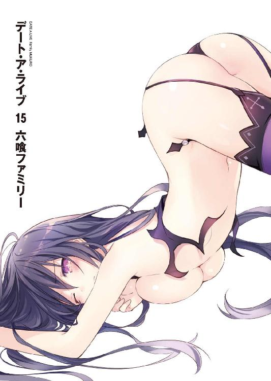
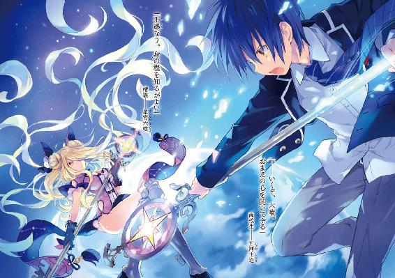
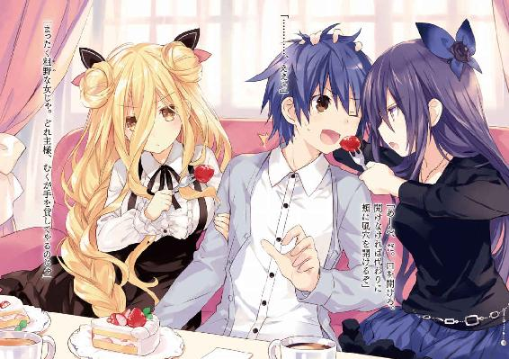
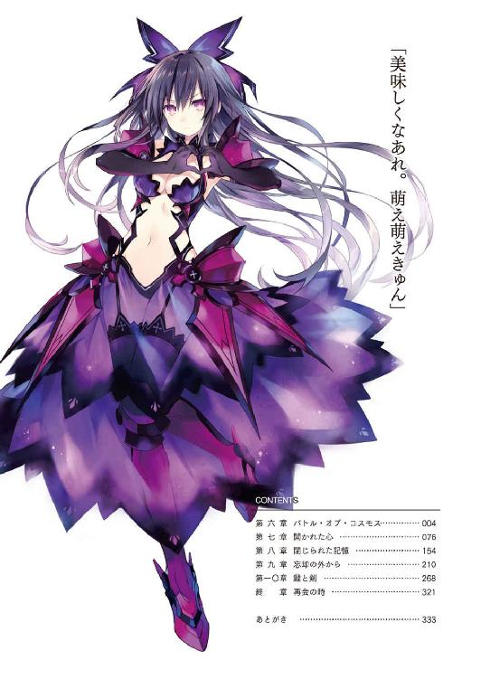
デート・ア・ライブ15
六喰ファミリー
橘 公司

富士見ファンタジア文庫
本作品の全部または一部を無断で複製、転載、配信、送信したり、ホームページ上に転載したりすることを禁止します。また、本作品の内容を無断で改変、改ざん等を行うことも禁止します。
本作品購入時にご承諾いただいた規約により、有償・無償にかかわらず本作品を第三者に譲渡することはできません。
本作品を示すサムネイルなどのイメージ画像は、再ダウンロード時に予告なく変更される場合があります。
本作品の内容は、底本発行時の取材・執筆内容に基づきます。
本作品は縦書きでレイアウトされています。
また、ご覧になるリーディングシステムにより、表示の差が認められることがあります。
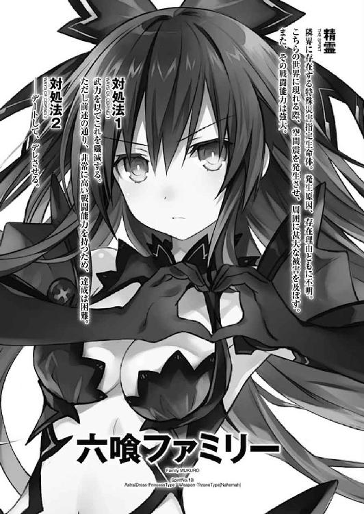
第六章 バトル・オブ・コスモス
一瞬でも気を抜いたなら、そのまま吸い込まれてしまいそうな漆黒の中に、数え切れないほどの星の光が輝く。
それは、夢でも見ているのではないかと疑うほどに幻想的な光景だった。
まるで天と地が逆さまになって、夜空の中に落ちたかのような感覚。
だがその表現も、あながち間違いとは言えなかった。
何しろ今五河士道がいる空間は、天高き空のさらに上、母なる星を眼下に置く場所であったのだから。
──宇宙。
誰しもがその名を知り、誰しもがその存在を知り──しかしそのほとんどが足を踏み入れたことのない超越者の領域。
無論、地球上のあらゆる生物は、そこで生きることができない。生命活動に必要な酸素がないのはもちろん、通常大気圏によって遮断されている様々な宇宙線が、身体に直接影響を及ぼすからだ。
幻想的な風景とは裏腹に、生命を拒む死の世界。だが士道はそこに、宇宙服はおろか、生命を維持する装置の類さえ一切身につけずに浮遊していた。
とはいえそれも当然である。士道は観光や遊覧目的でこの宇宙空間にやってきたわけではない。
この生命無き空間に一人眠る、孤独な少女の心を『開く』ために、きたのだ。
「──六喰」
士道は、静かにその名を呼んだ。
六喰。星宮六喰。悲しきその精霊の、名を。
士道の前方の空間に、一人の少女がゆらゆらと浮遊している。身の丈を超えるほどに長い金髪に、星座のような裏地を覗かせる衣が、小柄な彼女に絡みつくように無重力空間にたゆたっていた。
あどけなさの残る貌にはおよそ表情と呼べるものがなく、美しい金色の双眸もまた、世の何にも興味を抱いていないかのように虚空を見つめている。
「──────ふむん」
六喰が、小さく息を吐きながら喉を鳴らす。
「うぬもしつこいのう。それに、覚えも悪いと見える」
「ああ。諦めと物わかりの悪さには定評があるんでね」
士道がニッと唇の端を上げながら言うと、六喰はもう一度息を吐いた。
とはいえその所作からは、士道に対する悪感情はあまり感じ取れなかった。無論かといって、その言葉が嬉しさの裏返しであったというわけでもなさそうである。
そう。正確に言うのならば──六喰は、士道に対して何の感慨も抱いていないように見えた。
悪意はなく。さりとて好意もなく。ただ自らの領域を侵すものを排除するという機能に従って身体を動かしているかのような違和感。その異様な佇まいは、士道の脳内に『人形』の二文字を思い起こさせた。
「............」
しかし、それもそのはず。士道はちらと彼女が手にした、鍵のような形状をした錫杖を一瞥した。
天使〈封解主〉。物質にその先端を突き刺し、『閉じる』ことによって、その機能を封じるという、規格外の力を持った天使である。
六喰の言葉を信じるのであれば、彼女は自分自身にその力を使い、『心』を『閉じて』しまったのだという。
それが具体的にどのような行為を示し、どのように六喰の精神に影響を及ぼしたのかは定かではない。だが結果として六喰は、歓喜も、憤激も、悲哀も、享楽も、何一つ感じなくなってしまったというのである。
そして一切の感情を失った六喰は、地上から遠く離れたこの場所で、ただゆらゆらと浮遊していた。
誰に干渉されることもなく。誰に観測されることもなく。ただただ、一人で。
だから──士道はここに来たのだ。
一度は拒絶されながらも、もう一度ここに、舞い戻ってきたのだ。
「それで。一体何をしに来たというのじゃ？ 今度は立体映像とやらではないようじゃが」
六喰が首を傾げながら問うてくる。その無味な表情のためか、首を傾げるという動作もまた、相手に問いを発するという機能に紐つけされた行動に見えてしまった。
「知れたことさ。もう一度、話をしにきたんだ。──六喰、おまえとな」
「戯れ言を。言ったはずじゃろう。うぬの偽善に付き合わされるは迷惑じゃと。むくは救いなぞ求めておらぬと──」
「違う」
士道は六喰の言葉をぴしゃりと遮るように言った。
そしてジッと六喰の目を見つめながら、続ける。
「俺が話をしにきたのは、今のおまえじゃない。〈封解主〉で心に鍵を掛けていない、本当の星宮六喰だ」
「......ふむん？」
六喰は士道の言葉に、表情をぴくりとも動かさないまま喉を鳴らした。
「異な事を。むくはむくでないと申すか。言ったはずじゃ。むくの心に鍵を掛けたのはむく自身じゃと。むくの選択をうぬにとやかく言われる筋合いはない」
「ああ......言ってたな。でも、そもそもなんで鍵を掛けたのか......その質問には、明確な答えをもらってなかったはずだ」
士道は、意志を強く持つように拳をぐっと握りながら言った。
そして脳裏に思い起こす。かつて六喰が発した言葉を。
（──さて......なぜだったかのう。必要がなかった......いや、違うな。それを持つことこそが不幸であると、かつてのむくが思ったからではないかの。今のむくには、もうよくわからぬがな）
そう。以前言葉を交わした際、確かに六喰は自分の意志で心に鍵を掛けたと言った。しかしその理由を問うたとき返ってきたのは、そんな曖昧な返事のみだったのである。
六喰が適当に誤魔化そうとしたのか、それとも本当によく覚えていなかったのかは定かではない。
だが、自分の感情を閉ざしてしまう理由など、軽いものであるはずがなかった。
「......ああ、そうだ。なんでこんな簡単なことに気づかなかったんだろう」
士道は吐息とともに言葉を零した。それは六喰への呼び掛けではない。自問。六喰から発された拒絶の言葉に図星を突かれ、戸惑ってしまっていた自分への問いだった。
まったく滑稽な話である。『自分』──『五河士道』にそれを言われるまで、その考えに至ることができなかったというのだから。
「改めて聞く。六喰。おまえはなんでこんなところにいるんだ。なんで心に鍵を掛けたりなんてしたんだ。一体おまえに──何があったんだ」
「............」
六喰は冷淡な表情のまま無言になると、数秒ののち、フンと息を吐いた。
「──まあ、よい」
そして、まるで士道の言葉が聞こえていなかったかのようにそう言うと、手にした〈封解主〉をブンと回して、その先端を士道の方に向けてくる。
「警告に従わぬはうぬの自由じゃ。──じゃが、それに対し何を行うかもまた、むくの自由じゃ」
するとその宣言と同時、六喰の周囲を漂っていた岩石や機械の破片らしきものが、六喰の視線に導かれるように士道に向かって降り注いだ。
「──っ！」
突然の攻撃に、思わず息を詰まらせる。
まったく覚悟をしていなかったわけではない。実際以前言葉を交わしたときにも、問答無用で攻撃をされていた。あれが立体映像を通しての通信でなかったなら、きっと士道は数回は死んでいたに違いない。
しかし、覚悟をしていれば即座に対応ができるかと言われれば、それはまた別の話だった。迫るはたかだか飛礫。だが精霊の力を持って指向性をつけられたそれは、いわば極小規模の流星群である。一撃一撃に骨を断ち肉を貫く威力が込められた歪な塊が、必滅の意志を持って士道に飛来する。
「く──」
士道は両腕をクロスさせ、頭部を守るように身を竦ませた。士道の身体には、琴里の治癒の炎が備わっている。即死さえ免れれば傷を回復することは可能なはずである。
が、次の瞬間。
「──え？」
構えていた士道は、自らの身に起こった予想外の現象に、素っ頓狂な声を発した。
それはそうだ。何しろ六喰から放たれた無数の飛礫が、一発も士道に直撃することなく、後方へと抜けていったのだから。
六喰が弾道を操作したわけではない。どちらかというと、士道の身体が飛礫の軌道を察知して移動したかのようだった。まるで、水面に浮くブイが、波に押されて船の道を空けるかのように。
「これは......」
士道が驚愕していると、耳に装着していたインカムから、聞き慣れた声が響いてきた。
『──やらせやしないわよ。うちのおにーちゃんを』
声の主は確認するまでもない。士道の妹にして〈ラタトスク〉司令、五河琴里である。
そう。今士道が生身で宇宙空間を漂っていられる理由。それこそが琴里の、そして彼女の駆る巨大な空中艦〈フラクシナスＥＸ〉の存在だったのだ。
士道の後方に位置するその艦は今、辺り一帯を随意領域で覆い、士道の身体を保護、また空気のない空間で士道の声を六喰に伝えるためのサポートをしているのである。
『原理的には〈フラクシナス〉の自動回避と同じよ。随意領域が接近物を察知し、士道の身体への接触を防ぐの』
「なるほど......悪い、助かったよ、琴里」
と、士道がそう言うと、インカムから琴里とは別の声が聞こえてくる。
『お礼は琴里にだけですか？』
「はは......ありがとう、マリア」
士道は苦笑しながら、〈フラクシナス〉のＡＩである『マリア』にそう返した。
『わかればいいのです。──ですが、過信はしないでください。〈フラクシナス〉本体を覆うものに比べれば、強度も精度も劣ります。飛礫くらいならば問題ありませんが、天使の攻撃などを受けたならひとたまりもありません。それに──』
マリアの言葉を継ぐように、今度は琴里の声が響いてくる。
『ええ。悪いけれど、あまり音声サポートは期待しないでちょうだい。こっちも、お客様の対応をしなきゃならないものだから』
「......ああ、わかってる」
お客様。士道はその言葉に後方をちらと見やり──表情を険しくした。
理由は単純。母なる青い星から、複数の巨大な船影が〈フラクシナス〉に迫りつつあったのである。
そう。ＤＥＭインダストリーの空中艦だ。
士道の出撃直前に宇宙に現れ、〈フラクシナス〉に攻撃を仕掛けてきた四隻の艦は、速度を緩めることなく猛進してきていた。
しかもその一団の中心には、因縁浅からぬ空中艦〈ゲーティア〉が存在しているという話だ。如何に進化した〈フラクシナス〉といえど、士道の世話を焼いたままそれに対することは困難だろう。
士道は決意を新たにするようにこくりとうなずくと、改めて六喰の方を向いた。
「随意領域で十分だ。──こっちは、俺に任せてくれ」
そして静かにそう呟いて、ゆっくりと右手を前に伸ばした。
相手は強大なる力を持った精霊。しかも、今までの応対からもわかるように、心に鍵を掛けているため、士道の言葉が届かないときたものだ。
しかし士道とて、何の方策も持たずに彼女の前に立ったわけではない。
そう。士道は六喰の心の鍵を開ける方法を、一つだけその手に有していたのである。
「............」
呼吸を整え、精神を集中させる。心を細くし、変質させていくイメージ。六喰を救いたいという願いを標に、ぼんやりとした光の中から、一つの形を浮かび上がらせる。
そして、呼ぶ。その形の名を。強力無比な力を持った天使の名を。
──今この状況を打破し得る可能性を有した、唯一の『鍵』の名を。
「〈贋造魔女〉」
次の瞬間、身体を流れる血潮が熱を帯びたかのような感覚とともに右手が淡く輝き、そこに、長柄の武器が姿を現した。
とはいえ、槍や長刀といったものとは様相が異なる。細長い硬質のパーツが束ねられた先端の形状は、武具や錫杖というよりも、箒のそれを思わせた。
「......ふむん？」
突然虚空より現れた天使〈贋造魔女〉の姿に、六喰が反応を示す。
「天使じゃと？ 精霊には見えぬが......」
が、すぐに合点がいったと言うように目を細める。
「なるほど。それがうぬの言っていた、霊力の封印か。ふむん、どういう原理かは知らぬが、精霊から天使を奪ったということじゃな。むくの力を求めるも当然じゃの」
「人聞きの悪いことを言ってくれるなよ。──確かにこれは俺の力じゃない。でも、奪ったつもりなんてないぜ。おまえを救うために、貸してもらってるだけさ」
「まだ性懲りもなく斯様なことをのたまうか。不可能じゃ。確かにそれは天使のようじゃが、むくの〈封解主〉に勝る天使なぞ存在せぬ」
「そうかい。じゃあ──」
士道はふっと口元を緩めると、〈贋造魔女〉の柄を握る手に力を入れ、喉を震わせた。
「〈贋造魔女〉──【千変万化鏡】！」
するとその声に呼応するように、〈贋造魔女〉が淡く輝いたかと思うと、まるで粘土を捏ねるかのように、その姿を変質させていく。
そして数秒ののち。輝きの収まった〈贋造魔女〉は、先ほどまでとはまったく違う形をしていた。
──鍵のような形状をした、錫杖。〈贋造魔女〉は、六喰の握る〈封解主〉と、寸分違わぬ姿へと変貌を遂げていたのである。
六喰の心は、六喰自身が持つ天使〈封解主〉によって閉じられた。つまり六喰の心を開くことは、六喰自身にしかできない。
その絶対的なルールに穴を開ける唯一の存在こそが、この〈贋造魔女〉だったのである。
「......何じゃと？」
さすがに予想外だったのだろう。六喰が訝しげな声を上げる。
「面妖な。〈封解主〉を模したというのか」
「そういうことだ。これなら──」
士道はカシャリと音を鳴らしながら、〈封解主〉の先端を六喰に向けた。
「本当のおまえと話をすることが、できる」
「不遜なり。身の程を知るがよい。如何に形を真似ようが、うぬに〈封解主〉を使いこなせるものか」
「さあ、どうかな。試してみようじゃないか」
士道はリズミカルに鼓動を刻む心臓を落ち着けながらそう言うと、〈封解主〉を両手で構えた。
「──いくぞ、六喰。おまえの心を開いてやる」
〈フラクシナス〉艦橋に設えられたスピーカーから、決意に満ちた士道の声が響いてくる。艦長席に座った琴里は、黒いリボンで二つに括られた髪の先端を微かに揺らしながらこくりとうなずいた。
「──任せたわよ、士道」
一言一言に意志を込めるように区切りながら言って、きゅっと瞼を閉じる。
士道が対している星宮六喰は、時崎狂三や反転精霊にも比肩する危険度を誇る精霊である。如何に随意領域で保護をしているとはいえ、士道を一人彼女の前に置いていくことに抵抗がないといえば噓になった。
だが。今〈フラクシナス〉に迫る相手は、人類最強の魔術師エレン・メイザースと、彼女が駆る高速戦闘艦〈ゲーティア〉。かつてこことは違う世界で、〈フラクシナス〉を墜とした艦である。微塵の油断も許されぬ相手であった。
「総員、戦闘準備！ 考え得る限り世界で一番厄介な相手よ！ 気合いを入れなさい！」
『は......ッ！』
琴里の声に応え、艦橋に居並んでいたクルーたちが、緊張の滲んだ返事を返してくる。琴里は首肯を以てそれに応ずると、次いで後方に視線を向けた。
そこには、艦橋という場所にはそぐわぬ姿をした少女たちが、実に八名、立ち並んでいた。彼女らは全員、士道がこれまで霊力を封印してきた精霊たちである。皆、心配そうに艦橋のメインモニタに映し出された士道の姿を見つめていた。
「琴里！」
「琴里」
その中の二人──夜色の髪に水晶の目を備えた少女と、精霊たちの中で唯一表情を冷静なままに保っていた少女が同時に声を上げる。──十香と、折紙だ。
彼女らが何を言おうとしているのかは聞くまでもなかった。一瞬の逡巡ののち、細く息を吐き出す。
「......仕方ないわね。本当なら、あまりあなたたちを戦わせたくはないのだけれど」
琴里は微かに表情を歪めながら、もう一度吐息した。琴里の所属する〈ラタトスク〉は、精霊を保護することを目的とした組織である。せっかく霊力が封印された精霊を再び戦場に送り出すことは本意ではない。
だが、そんなことを言っている状況でないことは誰の目にも明らかであったし──何より彼女たちの目は、琴里が止めたところで聞く耳を持たないという気炎を上げていたのである。
「お願いできるかしら、二人とも」
琴里が言うと、十香と折紙は同時に首肯してきた。
否、それだけではない。二人以外の精霊も、賛同を示すように力強くうなずいてくる。
「私も......お手伝い、します！」
「呵々、我ら八舞の手にかかれば、大気無き宙にも風が吹こうというものよ！」
「同調。こんなときに大人しくしていろだなんて言わせません」
「ですよー！ 私の可愛い皆さんが戦うのに、私だけ黙っているわけにはいきませんー！」
「......四糸乃が行くなら、私も」
「んー！ いいねぇ、なんかこの最終決戦感？ みんなが力を合わせる展開みたいなやつ！ あ、でもあたしは霊力弱いから、艦内からのサポートにさせてもらうわ。ごめんねー」
四糸乃、耶俱矢、夕弦、美九、七罪、二亜が口々にそう言う。琴里は皆を見渡してから、了承を示すようにうなずいた。
「わかったわ。あなたたちの力、貸してちょうだい」
琴里の言葉に応ずるように、精霊たちが『おー！』と拳を振り上げる。彼女らの元気な声が艦橋に反響し、琴里を叱咤するように全身を叩いた。
精霊たちの気勢にあてられてか、クルーたちの表情を支配していた緊張感が一瞬ふっと緩み、新たな決意と熱気を以て引き締められる。彼女らの声は、史上最強の難敵に挑むクルーたちの心情にも、予想外の好転をもたらしたようだった。
が──そんな空気は、そう長くは続かなかった。
理由は単純。メインモニタに捉えられたＤＥＭの艦隊から、無数の小さな機影が射出され、士道と六喰の方へと飛び立っていったからだ。
鈍色で描かれた歪な人型。ＤＥＭの無人兵器〈バンダースナッチ〉である。
「ち......！ あいつら──」
「し、司令！ この反応は......〈バンダースナッチ〉だけではありません！」
〈保護観察処分〉箕輪が、琴里の言葉を遮るように慌てた様子で声を発する。
とはいえそれも無理からぬことであった。何しろメインモニタに映し出された無数の機影の中に、〈バンダースナッチ〉とは異なるモノが含まれていたのだから。
──そう。青と白のＣＲユニットに身を包んだ、金髪の少女が。
「あれは......！」
「──アルテミシア・アシュクロフト」
その名を発したのは、モニタに目をやっていた折紙だった。口調自体は落ち着いているものの、顔には微かな緊張が浮かび、手はきゅっと握りしめられていた。
日頃感情を表に出さない彼女にとっては珍しい反応である。だが、それも当然。今士道と六喰に迫っていたのは、エレン・メイザースに次ぐ力を誇る魔術師だったのである。
アルテミシアを士道たちのもとへ至らせるわけにはいかない。琴里は焦燥感の滲んだ声を発した。
「く──何カ所かに分けて転送するから、まずは十香と折紙、転送装置に乗って！」
「うむ！」
「了解」
十香と折紙がそう応え、艦橋内に設置されていた転送装置の上に移動する。琴里はそれを横目で見ながら、〈フラクシナス〉ＡＩ、マリアに声を発した。
「それと、マリア。ＡＷ１１１の準備を」
『了解。しかし、あれはまだ調整中です。いいのですか？』
「ええ、折紙なら、きっと使いこなせるでしょ」
「......？」
琴里の言葉を聞いてか、折紙が不思議そうに首を捻る。
するとそれに合わせるようにコンソールの下部が引き出しのように展開し、中に収められていた銀色のドッグタグのようなものを空気に晒した。
それを摘まみ上げ、折紙に向かって放る。折紙は片手でそれをキャッチすると、手のひらを広げてまじまじと見つめた。
「これは......緊急着装デバイス？」
「ええ。アスガルド・エレクトロニクス製ＣＲユニット、ＡＷ１１１〈ブリュンヒルデ〉。うちの最新型よ。役立ててちょうだい」
琴里がそう言ってビッと親指を立てると、折紙は全てを理解したようにデバイスを握る手に力を込め、こくりとうなずいた。
「──心得た」
「よし、じゃあいくわよ。座標確認、転送──開始！」
『了解。転送を開始します』
琴里の声に応え、マリアがスピーカーから音声を発する。するとそれに呼応して、転送装置の上に立った十香たちの姿が淡く輝いた。
が、十香たちの身体が消えかけた、その瞬間。
「きゃ......っ!?」
〈フラクシナス〉の艦橋を凄まじい振動が襲い、琴里は思わず悲鳴を上げた。突然の衝撃に艦長席から転がりかけ、すんでのところで踏みとどまる。
とはいえ、席に着いていた琴里やクルーたちはまだマシである。艦橋に立ち並んでいた精霊たちは盛大にバランスを崩し、その場に倒れ込んでしまっていた。
「きゃ......っ！」
「あいてて......一体何よもー」
二亜が、床に打ち付けたと思しき額を摩りながら不満そうに唇を尖らせる。するとそれに答えるように、艦橋下段からクルーたちの声が響いた。
「げ、〈ゲーティア〉からの砲撃です！」
「随意領域による防御に成功したため、損傷はありません！」
その言葉に、琴里は忌々しげに眉を歪めた。
「......ち」
もしも〈ゲーティア〉が通常の魔力砲を撃っていたなら、その威力は随意領域に阻まれ、ここまで艦橋を揺らすことはなかっただろう。
エレンは〈フラクシナス〉の随意領域を抜けないのを承知で、随意領域ごと艦体を振動させてきたのだ。
そう──あたかも、扉をノックするかのように。
「舐めた真似をしてくれるじゃない、エレン・メイザース......！」
琴里は、くわえていたチュッパチャプスにギリと歯を立てた。
すると、まるでそれを見ていたかのようなタイミングで、艦橋のスピーカーから、外部通信を報せるブザーが鳴った。
相手は......考えるまでもない。琴里は不機嫌そうに声を上げた。
「......繫いでちょうだい」
「はっ！」
クルーの声と同時、モニタにノイズが走り、一人の年若い少女の姿が映し出される。
色素の薄いノルディックブロンドに、これまた病人のように白い肌。全身を魔術師であることを示す白金のワイヤリングスーツで覆ってはいるものの、画面から窺えるその首や腕は、少し力を入れれば折れてしまいそうなほどにか細かった。
一見すれば普通の──否、平均よりも随分とか弱い外国人の少女である。だがその碧い双眸には、己の力への絶対的な自信が充ち満ちていた。
「......エレン・メイザース」
『ええ、こうして対面するのは久しぶりですね、五河琴里』
エレンがフッと頰を笑みの形に歪めながら言葉を返してくる。その余裕に溢れた様に、琴里はピクリと眉の端を揺らした。
この光景を見るのは初めてではない。士道が〈刻々帝〉の力を借りて歴史を改変する前、琴里は、そして〈フラクシナス〉は、今と同じようにモニタ越しにエレンと対面を果たし──そして、敗北を喫していた。
「性懲りもなく現れたわね。でも、今度はあなたたちの好きにはさせないわよ」
『ふふ、自信の源はその艦ですか？ 見たところ新型のようですが──無駄ですよ。また、空に沈めてあげましょう』
「減らず口を──」
そこで、琴里は小さく息を詰まらせた。
気づいたのだ。エレンの発した「また」という言葉の意味に。
〈フラクシナス〉が〈ゲーティア〉に敗れたのは、士道が改変する前の世界。この世界のエレンが、その事実を知っているはずがないのだ。
「......なるほど。それも〈神蝕篇帙〉の恩恵ってわけね」
琴里は小さな声で呟くように言った。
アイザック・ウェストコットの手によって奪われた全知の魔王〈神蝕篇帙〉。その力を以てすれば、本来知り得ない改変前の世界の情報を手にしていたとしてもおかしくはない。
「ふん......あなたのところの社長、随分はしゃいでるみたいじゃない。まるで、新しい玩具を買ってもらった子供みたい」
『子供、ですか。ふ──あながち、的外れとも言えませんね』
「ええ。漫画でもあるまいし、まともな判断力を持っているなら、組織の親玉が敵の本拠地に乗り込んだりなんかしないでしょうよ」
『......っ？』
と、琴里の言葉を聞いた瞬間。エレンの顔に初めて、小さな動揺らしきものが浮かんだ。
『今、何と言いました、五河琴里。アイクが〈ラタトスク〉の基地を......？』
そして訝しげに──或いは憤怒に震えるように──喉から声を絞り出す。
「────」
その予想外の反応に、琴里は思わずこくんと唾液を飲み下した。
間違いない。エレンは、知らなかったのだ。──アイザック・ウェストコットが〈ラタトスク〉の基地を襲撃したことを。
「......へぇ、その反応じゃあ知らなかったみたいね。そんな重要な作戦を知らされてないなんて、側近面してるみたいだけど、意外と信用されてなかったのかしら？」
『............』
エレンは一瞬沈黙したのち、今までにない形相で琴里を睨んできた。
が、エレンは独り言を呟くように小さく唇を動かしたかと思うと、すぐに表情をいつもの涼しげなものに戻し、長い前髪をかき上げてみせた。
『安い挑発ですね。私が敵の言葉を信じるとでも？』
「信じられないのなら確かめてみればいいじゃない。それとも怖いのかしら？」
『聞く価値もない妄言ですね。ですが──いいでしょう。あなたがそこまで言うのなら、すぐに確かめてあげます』
そう言うとエレンは、キッと視線を鋭くし、言葉を続けてきた。
『──せいぜい、五分もあれば十分でしょうしね』
その言葉と同時、通信がプツリと途絶え、それと入れ替わりに、メインモニタに表示されていたＤＥＭ艦隊に変化が現れた。
〈ゲーティア〉を中心として、他の三隻が〈フラクシナス〉を覆うように展開しはじめたのである。
戦いの火蓋は、この上なくわかりやすい形で切られた。琴里はフンと鼻を鳴らすと、クルーたちに指示を発し始めた。
「随意領域の属性を防性に設定の上、後退！〈ゲーティア〉以外は雑魚とはいえ、囲まれるのは上手くないわ。何か仕掛けてくる前に──」
「琴里さん！」
と、そこで琴里の言葉は後方からの声に遮られた。──美九だ。
「先に私たちを艦外に転送してください！ 余計な敵は私たちがやっつけますー！」
するとそれに呼応するように、他の精霊たちも声を上げてくる。
「琴里さんは、〈ゲーティア〉を......！」
「くく、士道の方には十香と折紙が行ったのであろう。ならば、我らはその帰る場所を守ろうではないか」
「あなたたち......」
琴里は一瞬の逡巡ののち、小さく首を振った。
「──いえ、お願い。あなたたちはここにいてちょうだい」
「！ そんなぁ！ 私たちだって何かお手伝いを......」
「落ち着いて。あなたたちの力が必要になるかもしれないからこそ──お願いしたいの」
「え......？」
「疑問。どういうことでしょうか」
琴里の言葉に、精霊たちが首を傾げる。
「本当なら私だけでなんとかしたい。でも、相手は〈ゲーティア〉。もしかしたら──」
と。精霊たちの顔に順に視線を向けていた琴里は、そこで不意に言葉を止めた。
理由は単純。そこにいるはずの精霊が一人、見当たらなかったからだ。
「あれ......？ あの子はどこに......」
「！〈ゲーティア〉、前進してきます！」
が、その瞬間、艦橋下段からクルーの声が響き、琴里の意識はそちらに引っ張られた。
熟考しているような時間はないし、仮に戦闘を怖がって隠れたのだとしても、それを責めるつもりはなかった。もとより、琴里に協力を強制するつもりなどは微塵もなかったのだ。バッと手を振り、指示を発する。
「みんなはひとまず待機していて！
──総員、覚悟なさい！ 行くわよ！」
『了解ッ！』
クルーの声が艦橋下段から響いてくる。琴里はぺろりと唇を舐めると、メインモニタに映る白金の空中艦を睨み付けた。
「いくわよ愛しい我が宿敵。新しい〈フラクシナス〉の力、見せてあげる」
そして、モニタに指を突きつけながら、唱える。
その、言葉を。
「さあ──私たちの戦争を、始めましょう」
◇
「──【開】」
短い声とともに、六喰が手にした鍵の天使〈封解主〉を虚空に突き刺し、捻る。
すると、文字通り扉の鍵を開けたかのように、空間にぽっかりと『扉』が開き、その中に六喰の周囲に浮遊していた岩石や機械の破片が、勢いよく吸い込まれていった。
「散れ」
「......！」
そして次の瞬間、士道を取り囲むように無数の『扉』が空間に口を開けたかと思うと、その中から、今し方消えた飛礫が一斉に飛び出してくる。
三六〇度全方位からの一斉射撃。無論、士道を包む〈フラクシナス〉の随意領域は先ほどと同じようにその飛礫に反応し、士道の身を逃がそうと作用しているようだったが──今回は先刻とは異なり、逃げ場が用意されていない。回避できなかったいくつかの飛礫が、士道の身体に風穴を開けようと迫ってくる。
が、士道とて、いつまでもぼうっとしているわけではない。前方に左手をかざし、叫ぶ。
「〈氷結傀儡〉......！」
瞬間──士道の周囲に冷気の奔流が吹き荒れ、そこに氷の盾を形作った。
飛礫と氷がぶつかり合い、弾ける。幾つもの衝撃波が、士道の身体を叩いた。
それを見た六喰が、うっすらと目を細めてくる。
「ほう。別の天使も扱うか。ますます面妖じゃの。うぬは本当に人間か？」
「一応、自分ではそのつもりだよ。ただ──」
士道は六喰の目を見据えながらすうっと息を吸った。
そして、頭の中で幻想を思い描きながら、声を発する。
【──おまえのもとに至るために、出し惜しみをしないって決めただけだ】
音の天使〈破軍歌姫〉。その力を込めた、声。
士道の喉から発されたその魔性の言葉は、〈フラクシナス〉の随意領域を伝わって士道の鼓膜を震わせ、その身体に、人間を越える力をもたらした。
「うおおおおおおおおッ！」
中空でグッと足を縮め、一気に解き放つ。無論ここは中空。踏ん張る地面などあるはずはない。しかし士道の身を包む随意領域は、その動作と意志を察知し、士道の身体を前方へと跳ね飛ばした。
凄まじいスピードで、宙に浮かぶ六喰のもとへと迫る。
だが、次の瞬間。
「......ッ!?」
士道は、息を詰まらせた。
理由は単純。六喰のもとに至る一瞬前。士道の視界の端に、機械の鎧を纏った人影が現れたのだ。
「ごめんね。その精霊は、私たちが貰うよ」
金髪の少女が、レイザーブレイドを刺突の形にしながら、淡々とした調子で言う。
「おまえは──」
その少女には見覚えがあった。──アルテミシア・アシュクロフト。ＤＥＭの魔術師にして、反転した二亜を襲った少女だ。
どうやら彼女も、〈ゲーティア〉とともに宇宙へとやってきていたらしい。が、六喰に全神経を集中していた士道は、直前までその接近に気づくことができなかったのだ。
既にアルテミシアの剣は、士道の喉元を捉えている。
絶体絶命。〈灼爛殲鬼〉の炎が切断された首まで癒やせるかはわからなかったし、仮にそれが可能だとしても、アルテミシアや六喰が懇切丁寧に士道の首と胴を合わせてくれるとは思えなかった。
しかし、一瞬が数十秒にも感じるような極限状態の中、士道の心中には、己の危機よりも大きな感情が去来していた。
そう。士道がここで死んだなら、アルテミシアは迷うことなく六喰を狙うだろう。
無論、六喰とて精霊。彼女の〈封解主〉ならば、いざとなれば誰もいない安全圏に逃れることも可能だろうし、アルテミシアを返り討ちにしてしまうことだって考えられる。
だがそれはすなわち、六喰の心が永遠に閉じられたままであることと同義であった。
死。あるいは、永遠の停滞。
士道がここで命を失うことは、六喰にその二択しか残せなくなることを示していた。
「そんなの......許容できるかよ......ッ！」
無理矢理身体に号令を発し、手にした〈封解主〉を振り上げる。無論、防御が間に合うようなタイミングではない。だが、もしアルテミシアが少しでも怯めば、文字通り首の皮一枚くらいは残るかもしれない。そしてその接点さえあれば、〈灼爛殲鬼〉は士道の命を繫いでくれるかもしれなかった。
『かもしれない』ばかりの、あまりに儚い抵抗。しかしそれが、今の士道にできる精一杯の行動だった。
アルテミシアのレイザーブレイドが士道の喉元に触れる。濃密な魔力で形作られた刃先が肌を切り裂き、灼熱感を伴う鋭い痛みと、肉の焼ける嫌な臭いを生じさせた。
──しかし。
「......！」
そこで息を詰まらせたのは、士道ではなく、アルテミシアだった。
「え──？」
それを耳にして、士道は思わず声を発した。
一瞬前絶体絶命に追い込まれたはずの士道には、未だそれを認識する意識と、震わせる喉が存在していたのである。
一瞬おいて、理解する。
士道の首を薄く裂いた剣が、下方から現れた刃によってかち上げられたのだと。
「──士道、無事？」
「折紙!?」
士道は目を見開き、その場に現れた少女の名を呼んだ。
そう。そこには、見慣れぬ機械の鎧を纏った折紙の姿があったのである。
美しい流線型で以て形作られた、純白のＣＲユニット。肩や胸元を覆うパーツは西洋の甲冑のようであり、手に握った武器は、剣というよりも長柄の槍を思わせた。
「その姿は──」
「説明はあと」
折紙は短く言うと、姿勢を崩したアルテミシアを槍で薙いだ。
「く......」
「......っ」
随意領域同士の接触で互いの力量を察し合ったのか、折紙とアルテミシアは小さく表情を歪める。刃を形作る魔力光同士がぶつかり、目映い閃光の軌跡を暗い宇宙空間に描いていった。
「シドー！」
と。窮地から脱し、一瞬放心状態になっていた士道の鼓膜を、そんな呼び声が震わせた。
次の瞬間、がっしと腕が摑まれ、そのまま腕が抜けるのではないかと思えるほどの勢いで引っ張られる。
「うわっ!?」
思わず声を上げるが──すぐにその意味を理解する。
一瞬前まで士道がいた空間を、六喰が放った幾条もの光線が通り抜けていったのである。もし士道があのまま呆けていたなら、折紙のおかげで拾った命をまた捨てることになるところだった。
「大丈夫か、シドー！」
「あ、ああ、助かったよ──十香」
士道は額に滲む汗を拭いながら、今し方手を引いてくれた少女の名を呼んだ。そう。士道の危機を救ってくれたのは、その身に限定霊装を、そしてその手に、天使〈鏖殺公〉を顕現させた十香だったのである。どうやら折紙とともに、士道を助けに来てくれたらしい。
が、安堵しているような余裕はなかった。
六喰がフンと息を吐くような仕草をすると同時、〈封解主〉を掲げ、再び飛礫を放ってくる。
否、それだけではない。後方から無数の人形──〈バンダースナッチ〉たちが現れ、士道や六喰目がけて砲撃を放ってきたのである。
「く......〈氷結傀儡〉！」
「はぁッ！」
士道が〈氷結傀儡〉で盾を構築し、それと同時、十香が〈鏖殺公〉で〈バンダースナッチ〉たちの攻撃を打ち落とす。
しかし無論、それだけで攻撃が止むわけではなかった。士道たち〈ラタトスク〉に、精霊を捕らえんとするＤＥＭ、そしてそれら全てを敵と見なす六喰。それぞれがそれぞれの目的のため、霊力の、魔力の雨を宇宙空間に降らせていく。
「......っ！」
だが、その渦中にあっても、士道に恐れはなかった。否──正しく言うのなら、恐怖よりも先に、別の考えが頭を支配した。
「十香！ チャンスだ！」
「うむ！ 露払いは任せろ！」
士道の言葉に応え、十香が声を上げてくる。
どうやら十香も士道と同じ考えに至っていたらしい。だがそれも当然だ。戦闘時の十香の判断は、士道など及びもつかないほどに鋭く、素早い。
確かに士道たちがいるのは戦場の直中。如何に随意領域で守られているとはいえ、少しの間違いで頭が吹き飛びかねない魔力を帯びた暴風雨の中である。
だがそれは同時に、六喰もそれに対応せねばならないことを示していた。事実六喰は、自らの身に迫る魔力光を打ち払い、あるいは〈封解主〉で開けた『扉』に導いている。
今ならば、先ほどよりも六喰の隙を突ける可能性が高いかもしれなかった。
「行くぞ、十香！」
「おおっ！」
士道は叫ぶと、十香とともに光の流星群の中に身を躍らせた。
暗い宙を、二つの影が絡み合い、ぶつかり合いながら横切っていく。
折紙は自分の身を覆う随意領域を操作し、細かく軌道を調整しながら、幾度目ともしれない攻撃をアルテミシアに繰り出した。
「ふ──ッ」
「甘いよ！」
折紙のレイザースピアの一撃が、アルテミシアのレイザーブレイドによって止められる。魔力光が火花のように散り、折紙の視界を目映く照らした。
「く──」
幾度かの攻撃の応酬を経て、折紙はアルテミシアから距離を取った。
頰を汗が伝う。
最新鋭の装備を纏っても埋めきれない差。それこそ──エレン・メイザースと対したときを思い起こさせる圧倒的なプレッシャーである。
「ふぅん......」
興味深そうに折紙の容貌を眺めていたアルテミシアが、小さく声を発してくる。
「面白い装備だね。その槍──私たちの戦闘で辺りに散った魔力をかき集めて刃を作ってるのかな。長期戦になると少し厄介そう」
「............」
折紙は微かに眉を動かした。確かに折紙の握るレイザースピア〈エインヘリヤル〉は、彼女の言うとおり一度放出された魔力を再収集することにより刃を形成している。これにより生成する魔力を抑えることが可能となり、相手の消耗を誘うことができるのである。
「見慣れないＣＲユニットだけど、君、魔術師よね。どうして精霊を助けたりするの？」
「............」
その言葉に、違和感を覚える。アルテミシアは折紙と面識があるはずだ。彼女が健忘症でもない限り、忘れているとは考えづらい。
「......、アルテミシア。あなたはなぜＳＳＳを抜けてＤＥＭにいるの。あなたは、ＤＥＭに決していい感情を持っていなかったはず」
「......？ 何を言っているの？ なんで私の名前を知って......っていうか、ＳＳＳ......？」
アルテミシアは不思議そうな顔をしたのち──眉根をよせながら額に手を当てた。
「く......、ぅ......？」
そして苦しげに呻いたのち、頭痛を振り払うように首を振り、折紙に視線を戻してくる。
「......まあ、いいや。君を倒さないと任務が遂行できないっていうのは確かみたいだし」
アルテミシアは視線を鋭くすると、手にしたレイザーブレイドを構え直した。
「悪いけど、排除させてもらうよ」
「──！」
次の瞬間、視界に映るアルテミシアの姿が、急に膨張した。
随意領域による、ノーモーションでの加速。折紙は脳がそれを認識するよりも先に、身体が動くのを感じた。
脳天に振り下ろされるレイザーブレイドを〈エインヘリヤル〉で逸らす。だが無論、アルテミシアの攻撃はそれだけでは終わらない。上、下、左、右、そして前。あらゆる方向から、タイムラグが極限まで排された斬撃が打ち込まれる。
「ぐ......ッ」
応戦するも、さすがに全てを捌ききることは不可能だった。腹部に直撃を食らい、そのまま後方へと吹き飛ばされる。
こうして刃を交えてみて、改めて練度の違いがわかる。折紙とて凡百の魔術師には負けない力を持っている自信があったが、彼女はその遥か上を行っていた。
魔力の生成量、それらの制御、随意領域の規模、精度、そして恐らくは、そもそもの身体的能力に至るまで。
魔術師として折紙が彼女に勝っている点は、皆無であると言っても過言ではない。
「......ッ、でも──」
折紙にも──負けられない理由がある。
折紙は顔を苦悶に歪めながらも、拳を握りしめた。
「アルテミシア・アシュクロフト。あなたは強い。私よりも、ずっと」
そしてすうっと息を吸いながら、精神を集中させる。
「──魔術師と、しては」
「......っ!?」
折紙がそう呟いた瞬間。レイザーブレイドを振りかぶっていたアルテミシアが目を見開き、飛行の軌道を逸らして折紙から離れた。
しかしそれも無理からぬことだろう。戦闘中、突然相手の身体が輝きだしたとしたなら、折紙も警戒して彼女と同じ行動を取っていたかもしれない。
「これは......」
アルテミシアが驚愕の表情で、折紙の姿を見つめる。
──金属の鎧と、光り輝く限定霊装が混じり合った、その姿を。
そう。限定霊装の形状は、発現させたとき身に纏っていた衣服に影響される。
もしも纏っていたのが、それ自体戦闘能力を有するＣＲユニットだった場合──このような形になるのは必定であった。
精霊と、魔術師。決して相容れないはずの二つが融合した姿。
精霊にして魔術師──恐らくはこの世界で、鳶一折紙のみが顕現させることができる、奇跡のハイブリット体である。
「これなら、あなたと、戦える」
折紙は純白の霊装を揺らしながら、アルテミシアを見据え、静かに言った。
すると、目をまん丸に見開いていたアルテミシアが、それに返すように口を開く。
「精霊。はは......なるほど、君、〈シスター〉を倒したときにいた精霊か。ＣＲユニットなんて着てたからわからなかったよ」
そしてアルテミシアは、ニッと唇を笑みの形にした。
「よかった。──精霊なら、心置きなく、殺せる」
「............」
折紙とアルテミシア。二人は静かに視線を交わすと──
磁石が引き合うかのごとく、同時に宙を蹴った。
◇
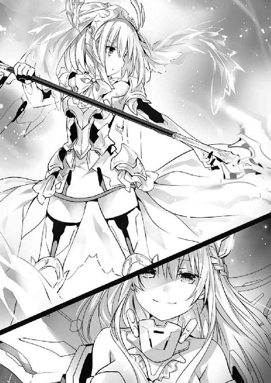
「〈世界樹の葉〉、一番から一〇番を指定座標へ射出、随意領域を最大展開！」
「了解！」
艦橋下段の〈次元を越える者〉中津川がコンソールを素早く操作する。するとサブモニタに表示されていた〈フラクシナス〉のシルエットの後部が青く点滅し、自律ユニット〈世界樹の葉〉が幾つも射出された。
そして〈ゲーティア〉を囲うように展開したそれは、それぞれが随意領域を展開し、宙に浮く機雷としてその場に留まる。
「よし、今！ 収束魔力砲〈ミストルティン〉、発射！」
『了解。収束魔力砲〈ミストルティン〉、発射します』
ＡＩ・マリアが琴里の号令に応えると同時、艦橋に低い駆動音が鳴り響き──メインモニタに目映い閃光が溢れた。
〈フラクシナス〉の先端から魔力の奔流が り、〈ゲーティア〉に伸びていく。
り、〈ゲーティア〉に伸びていく。
が──彼の艦はその砲撃が直撃する瞬間、不自然な軌道で以て右方へと飛び退き、〈世界樹の葉〉の間をすり抜けて宙へと逃れた。
「ち......ッ、相変わらず滅茶苦茶な動きしてくれるじゃないの」
琴里は忌々しげに眉根を寄せた。
エレンの駆る〈ゲーティア〉最大の武器。それは一撃で敵を屠る超火力でもなければ、どんな攻撃にも耐える耐久性でもなかった。
──目で追うことさえ困難な、圧倒的な機動性。
他の空中艦と異なり、エレン・メイザースが直接制御するゆえに可能となった、物理法則を無視した動き。それこそが、〈ゲーティア〉が最強の艦たる所以であった。
たとえるならば鈍重な大型自動車と、巨人が自在に操る将棋の駒とが相対しているようなものである。〈フラクシナス〉も、改修を経ることにより大幅な機動性の改善に成功してはいたものの、その点においては未だ〈ゲーティア〉に及んでいなかった。
そう──現状のままであったなら。
「──神無月！」
「ええ」
琴里が声を上げると、艦長席の脇に控えていた長身の男が応えてきた。〈フラクシナス〉の副司令、神無月恭平である。今はその頭部に、顕現装置に脳波を伝えるためのヘッドセットを装着していた。
「マリア、〈フラクシナス〉の制御をマニュアル操作に変更してください」
『了解。制御顕現装置一基を残し、残りを魔力生成に宛てます』
マリアが言うと、神無月がヘッドセットに手を置きながらニッと唇の端を上げた。
「残念ながら私は覚えていませんが、どうやら改変前の世界では手痛い敗北をプレゼントされたようですね。──許せません。司令の美しい世界樹に傷を付けた彼の魔術師も、そして守り切れなかった私自身も」
「気に病む必要はないわ。でも、その敗北はここで雪いでもらうわよ」
「無論です。──あ、でも自分の知らないところで屈辱を与えられていたって、昏睡状態のときにアレコレされてたみたいでちょっと興奮しません？」
『琴里。やっぱりイヤです。この人に機体制御を任せたくありません』
「気持ちはすごくわかるけど耐えてちょうだい」
うんざりしたようなマリアの言葉に、ため息交じりに返す。だが当の神無月は気にしていないようで──否、むしろその言葉さえ快感として受け取っているようだった。
「とにかく、いくわよ。今までとは違うってところを見せてあげなさい」
「了解しました。司令の望むままに」
神無月が敬礼とともに応えたかと思うと、それに合わせたかのように、〈ゲーティア〉の反応が急接近してきた。
それと同時、神無月がすっと目を細める。すると、艦体後部に残っていた〈世界樹の葉〉が射出され、〈ゲーティア〉の針路を塞ぐように展開した。
通常の艦であれば、間違いなく避けきれない速度と距離。随意領域を防性にして耐えるしかないだろう。
通常の艦で、あれば。
〈ゲーティア〉は機雷化した〈世界樹の葉〉の随意領域に触れる寸前で急に方向転換──否、前を向いたまま平行移動をすると、そのまま〈世界樹の葉〉の間を縫うようにして〈フラクシナス〉に迫ってきた。
「〈ゲーティア〉、接近！」
クルーの声が艦橋に響き渡る。今度は一転、〈フラクシナス〉が追い詰められる番であった。通常の艦であれば、ここまで接近した艦の直撃を避けることなどできまい。
──そう。通常の艦で、あれば。
「────っ」
〈ゲーティア〉と〈フラクシナス〉の随意領域が触れ合おうとした瞬間、琴里は不思議な浮遊感のようなものを覚えた。
そしてそれと同時、〈フラクシナス〉の前方カメラに対応したメインモニタの映像が、恐ろしいスピードで変化する。
「うわわっ!?」
誰かの素っ頓狂な声が艦橋に響き渡る。
一瞬あと、モニタには、先ほどまで〈フラクシナス〉がいた場所を通過する〈ゲーティア〉の艦体が、真横から映し出されていた。
〈フラクシナス〉が、〈ゲーティア〉と同じように、スラスターに頼らない平行移動を行ったのである。
先ほどの妙な浮遊感は、その滅茶苦茶な駆動から艦橋を守るために施された随意領域の効果だったのだ。巨大な艦体を一瞬にして移動させる無茶苦茶な操舵だ。もしも衝撃を緩和していなかったなら、艦橋は今頃、盛大にシェイクされたクルーたちの血と吐瀉物で溢れていただろう。
「うっわ！ 何今の！ 画面ぐるんって！」
後方にいた耶俱矢が、何やら興奮した様子で声を弾ませる。琴里はくわえていたチュッパチャプスの棒をピンと立てながら、ニッと唇の端を上げた。
「〈フラクシナス〉改修における目玉の一つよ。随意領域の中に、艦体のみを包む随意領域をもう一枚張って、随意領域同士を反発させることによって、今までにない自由な駆動が可能となったの」
琴里は得意げに言ったのち、「まあ、もっとも」と肩をすくめた。
「その着想のもとが、まさに改変前の世界で見た〈ゲーティア〉だっていうのは気に入らないけれどね」
するとその言葉に応えるように、マリアがスピーカーから音声を響かせてきた。
『問題ありません、琴里。顕現装置や空中艦に特許はありませんから。それに──』
一拍置いて、マリアが続ける。
『──勝った方が、本物です』
抑揚のない電子音声。表情は、サブモニタに映し出された『ＭＡＲＩＡ』の文字列のみ。
だけれどその声からは、いたずらっぽく微笑む少女の姿が透けて見えるような気がした。
ふっと口元を緩め、〈ゲーティア〉を睨み付ける。
「その通りよ、マリア。──さ、思い知らせにいきましょう。自分が、一体誰に喧嘩を売ったのかを」
『了解！』
琴里が言うと、神無月を始めとするクルーたちが、同時に声を上げてきた。
が、そこで一人、難しげに眉根を寄せる者がいた。──二亜だ。
「うーん、でも妹ちゃん、本当に大丈夫？ 確かに凄いとは思うけど、それって相手の真似っこしてスピード上げただけで、追いつけたってわけじゃないんでしょ？」
確かに、もっともな意見である。琴里は二亜の方に視線をやり、それに答えようとした。
が、それより早く、スピーカーからマリアの声が響いてくる。
『なんですかこの人は。文句を付ければ格好いいと思っているタイプですか』
「いや、別にそういうわけじゃないけどさー......」
『クレーマー気質というやつですね。こういう人が将来子供を持ったとき、モンスターペアレンツと化すのです。恥ずかしいので止めてください』
「えっ、なんかこの子あたしにだけ当たり強くない？」
二亜が困惑気味に眉を歪めながら言ってくる。琴里はやれやれと肩をすくめた。
「何にせよ、手持ちのカードで戦うしかないのよ。今は〈ゲーティア〉に集中すること」
言って琴里は、くわえていたチュッパチャプスの棒で、モニタの〈ゲーティア〉を指し示した。
「......ふむ」
高速機動艦〈ゲーティア〉の艦橋で、エレン・メイザースは小さく息を吐いた。
否、『艦橋』というのには語弊があるかもしれない。様々な電子機器や装置に埋められた空間の中央に、エレンが座するポッド状の座席が設えられており、そこから伸びた何本ものコードが、エレンのワイヤリングスーツに接続されていた。
しかし、それもそのはず。この〈ゲーティア〉は、通常の空中艦とは操作方法全てが異なる、いわばエレン専用の超巨大ＣＲユニットとも言うべき機体だったのだ。
「今の動き──〈ゲーティア〉を模してきましたか。なるほど、新型というのは伊達ではないようです」
目の前に投影された艦外の映像に、ふっと目を細める。
〈ラタトスク〉の空中艦〈フラクシナス〉。その機動性は、エレンの記憶にあるものを遥かに超えていた。
それに、面倒は他にもあった。──艦内にいる、精霊たちだ。
このまま〈フラクシナス〉を破壊してしまっては、中の精霊たちも巻き添えを食ってしまい、最悪の場合この広大な宇宙に霊結晶がバラ撒かれてしまうという可能性がある。
ゆえにエレンは、〈フラクシナス〉の原型を止めつつ無力化せねばならなかったのだ。もしそれを理解して精霊たちを艦内に止めているのだとしたなら、〈ラタトスク〉もなかなかの性悪である。
「まあ、もっとも」
しかし。エレンはさして狼狽えなかった。
「獅子の前で、ウサギが狐になったという程度の話でしかありませんが」
短く言って、再び〈ゲーティア〉を高速駆動させる。
ワイヤリングスーツを通して、身体の感覚を拡大させるかのようなイメージ。
広大な海の中に飛び込むような没入感。
今エレンはまさしく、白金の空中艦と一体となっていた。
エレンが頭の中で思い描いたとおりに、巨大な空中艦が漆黒の宙を駆ける。
この世界に、〈ゲーティア〉とエレンに追いつけるものなど存在しなかった。
「宣言を訂正しましょう、〈フラクシナス〉。──三分で、十分です」
縦横無尽に宙を舞い、〈フラクシナス〉に向けて砲撃を放つ。〈フラクシナス〉はどうにかそれに対応しているようだったが、時間にすれば僅かな反応速度の差が、少しずつ、しかし確実に、越え得ない隔たりを作っていった。
「────ふ」
天に輝く星々が、視界に美しい軌跡を残していく。まるで、巨大な流星群の中に紛れ込んだかのような感覚。
目も眩むような速度の中、しかしエレンの脳ははっきりと周囲の状況を認識していた。意識が極限まで研ぎ澄まされ、全てがスローモーションで流れていく。超越の感覚。この世にエレンに並ぶ者がないという実感。
「生成魔力量、充塡時間、そして何より──その機動性。確かに『前の世界』の〈フラクシナス〉を上回っているようですね。ですが、肝心要の戦法が代わり映えしないというのはお粗末過ぎますよ」
エレンはフンと鼻を鳴らすと、未だ放出される魔力の奔流の上を滑るような格好で、〈フラクシナス〉に肉薄した。
「私の領域に踏み込んだことは褒めてあげましょう」
そして無防備な艦体に、砲門を向ける。
「ですが天に挑みし者は、翼をもがれるのが必定です。
──神の火に灼かれ、墜ちなさい愚者」
閃光。臨界直前まで充塡された生成魔力が一気に放出され、〈フラクシナス〉に向かって伸びていく。
艦体を守るべき随意領域は、〈ゲーティア〉の随意領域と接触したことによりその強度を著しく落としており──そしてそんな穴を、エレンが見逃すはずはなかった。
この距離とタイミングでは、避けることも不可能だろう。
だが──
「......っ？」
次の瞬間、エレンは思わず息を詰まらせた。
理由は単純。着弾の瞬間、〈フラクシナス〉の艦影が一瞬ブレたかと思うと、〈ゲーティア〉の魔力砲が後方へと抜けていったのである。
「これは......」
エレンは目を見開くと、〈フラクシナス〉を改めて見やった。
否──見ようとした。
もうそのときには〈フラクシナス〉の姿はそこには存在しておらず、その代わりとでもいうかのように、凄まじい衝撃と振動がエレンを襲った。
「な......ッ!?」
コックピットが激しく揺さぶられる。エレンは、身体がポッドから転げ落ちそうになってしまうのを何とか堪えた。
「何ごとですか！」
〈ゲーティア〉の表面には随意領域が巡らせてある。仮に隕石か何かが直撃したとしても、ここまでの衝撃にはならないはずだ。
空中艦にダメージを与えられるのは、生成魔力を帯びた攻撃のみ。
そして今この場に、敵性の空中艦は、一隻しか存在していなかった。
そう。艦体の各所が展開するかのように可変し、銀色の炎のような輝きを纏った〈フラクシナス〉が、信じられないような速度で〈ゲーティア〉の背後を取り、攻撃を仕掛けてきたのである。
それを認識すると同時、〈ゲーティア〉に搭載されていた観測機がアラームを鳴らす。
──霊波反応。
目の前の艦からは、顕現装置によって生成された魔力ではなく──精霊の霊力が観測されていたのである。
「──〈フラクシナス〉......ッ！」
全てを察したエレンは目を血走らせると、怨嗟に満ちた声を発した。
「──切り札が一つだけだなんて、誰が言ったかしら？」
袖で冷や汗を拭いながら、琴里はモニタに映る敵艦を見やった。──初めて魔力砲の直撃を受け、装甲の内側を晒した高速機動艦を。
今、琴里は、艦長席に深く腰掛け、そこから伸びた電極のような装置を身体の各所に張り付けていた。
否、それだけではない。艦長席の後方には円柱形の装置がせり上がっており、そこに、精霊たちが手をかざしている。
「──助かったわ、みんな。たぶん、私の霊力だけじゃ足りなかったと思う」
「いえ......お役に立てて、嬉しいです」
「かか！ 我らが力を合わせれば無敵ということであるな！」
「首肯。夕弦たちの前に敵はありません」
琴里が言うと、精霊たちが喜ぶように声を返してきた。
「これって、私たちの霊力が混じり合ってるわけですよねー！ 一つになってるわけですよねー！ なんだかすごく幸せな気分なんですけどぉー!?」
......まあ、若干一名、別の喜び方をしている少女もいたのだけれど。
ともあれ、皆のおかげで〈ゲーティア〉に一矢報いることができたのは事実である。
──システム・ブロート。
〈フラクシナスＥＸ〉に搭載された、新たな奥の手だ。
精霊霊力砲〈グングニル〉と同様に、精霊から直接霊力を供給することによって、僅かな時間ではあるが、随意領域に極限を超えた力を付与することが可能となるのである。
無論、封印後の精霊が一定の霊力を放出するためには、士道からある程度霊力を逆流させねばならないため、できることならばあまり使用したくないのだが、その分、効果は絶大であった。
しかも今は、琴里、四糸乃、耶俱矢、夕弦、美九という、五人分もの霊力を使用しているのである。
今の〈フラクシナス〉に、艦という言葉は相応しくなかった。
言うなれば──意志を持って縦横無尽に空を翔ける一発の弾丸である。
「情けないものよね。顕現装置の性能自体は、僅かながらまだ〈ラタトスク〉が勝っているっていうのに、こんな反則技を使わなきゃならないなんて」
実際、真の意味で能力差をひっくり返したとは言い難い。
だが──
「今この瞬間は、私たちの勝ちよ。墜ちなさい、最強の魔術師」
琴里はビッと親指を立てると、それをそのまま下に向けた。
するとそれに合わせるように〈フラクシナス〉から二撃目の魔力砲が放たれ──損傷のためか反応が遅れた〈ゲーティア〉に突き刺さる。
最強の名を恣にした白金の艦は、黒煙を上げながら地球に墜ちていった。
◇
「うおおおおおッ！」
士道は〈封解主〉に変化した〈贋造魔女〉を両手で槍のように構えながら、随意領域の中を飛行するように駆けていた。
六喰の周辺には、既に無数の〈バンダースナッチ〉が溢れ、乱戦の様相を呈している。六喰は〈封解主〉を振りながら、迫る機械人形を、光線や流星群で迎撃していた。
好機。皮肉にもＤＥＭの人形が、士道たちの存在を隠す壁となってくれていたのである。
とはいえ無論、〈バンダースナッチ〉は士道たちの味方というわけではない。乱戦の中に飛び込んでいった士道たちに反応し、数機が攻撃を仕掛けてくる。
しかし。
「──はぁっ！」
〈バンダースナッチ〉の攻撃が届くよりも先に、士道の前に躍り出た十香が、手にした大剣〈鏖殺公〉を一閃し、〈バンダースナッチ〉を斬り伏せる。
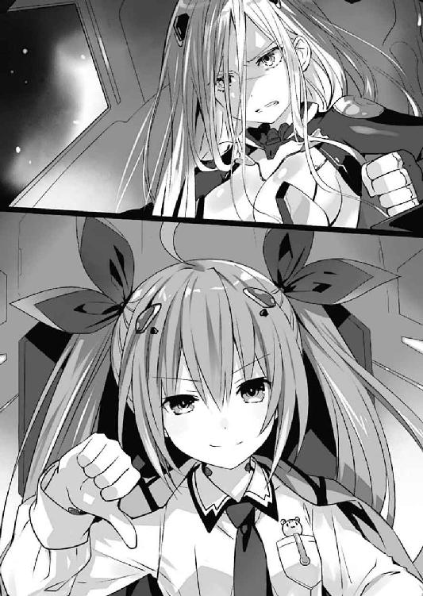
「行け、シドー！」
「ああッ！」
士道は十香が切り拓いた道に身体を滑り込ませると、そのまま六喰に向かって猛進し、鍵の先端を六喰に差し込もうとした。
「〈封解主〉......！」
だが、〈封解主〉が六喰の身体に触れようとした瞬間。
「──【開】」
六喰の静かな声が響いたかと思うと、士道が突き出した〈封解主〉の先に小さな『扉』が開き、その先端がその中に吸い込まれた。
「な......っ!?」
「──如何に敵が増えたとて、得体の知れぬうぬから視線を外すと思うたか」
六喰がギロリと士道を睨み、〈封解主〉を振り上げる。するとそれに呼応するように、〈封解主〉の先端に光の粒が生じた。
「シドー！ 逃げろ！」
「く......！」
士道は息を詰まらせ、その場から離脱しようとした。
が──遅い。士道が距離を取るよりも早く、六喰の〈封解主〉から、幾条もの光線が放たれる。
「シドー！」
「──ふむん？」
が、そこで六喰が不思議そうな声を発した。
右方から巨大な物体が飛来してきて、六喰の攻撃を阻害したのである。
無論、〈フラクシナス〉の随意領域に覆われているとはいえ、ただの金属片に精霊の攻撃を防ぐことなどできはしない。どうやら、近くで交戦していた空中艦の装甲板が、こんなところまで飛ばされてきたらしい。
とはいえ、あくまで防いだのは光線の直撃のみである。六喰の一撃を受け止めた装甲板は、その威力のままに、士道を押し潰すような勢いで後方へと飛んでいった。
「ぐお......っ！」
「だ、大丈夫か、シドー！」
六喰のもとからどれくらい離れた頃だろうか、装甲板がガクンと揺れ、その進行が止められる。どうやら士道に追いついた十香が受け止めてくれたらしい。
「あ、ああ......助かったよ、十香。にしても──」
士道はすんでのところで自分を守ってくれた装甲板を軽く撫でた。
「タイミング良すぎだろ......こんな装甲板が、俺と六喰の間に飛んでくるなんて──」
と。そこまで言いかけて、士道は言葉を止めた。
「へ......？」
理由は単純。装甲板の裏に、とあるものを見つけたからだ。
「......ふむん。細かいのは粗方片付いたようじゃの」
先ほどまでより随分と塵の多くなった宇宙空間を眺めながら、六喰は息を吐いた。
辺りには、人の形をしていた機械の破片が多数漂っている。全て六喰に敵意を向け、六喰に屠られた者たちの残骸である。
近くを漂っていた金属塊の一つに手を伸ばし、矯めつ眇めつ眺め回す。
「今日は妙な客が多いのう。まあ......」
人形の頭を無造作に放り投げ、視線を後方へやる。
「どれもこれも、うぬほどではないがな、士道」
そこには、未だ瞳に意志の炎を燃やす少年と、それを守るように立ちはだかる少女の姿があった。
「せっかく拾った命を捨てにくるか。もうあのような偶然は起きぬぞ？」
六喰が〈封解主〉を構えながら言うと、士道は額に汗を滲ませながらも、決意の光が灯った目を向けてきた。
「逃げられるかよ。言っただろ。俺は、おまえの心を開きに来たってな」
「むくとて言ったはずじゃ。うぬの偽善に巻き込まれるは迷惑とな」
六喰は半眼を作りながら言って、辺りを示すように手を広げた。
「──して、どうするというのじゃ。うぬが利用しようとしていた人形どもはもはや塵芥。先ほどのような小狡い策を弄すこともできぬぞ？」
「さあ、そいつはどうだろうな。塵芥にだって──使いようがあるぜ？」
士道はニッと唇の端を上げると、手にした贋物の〈封解主〉を高く掲げた。するとそれに応ずるように、辺りに浮遊した人形たちの破片が、小さな隕石のように六喰目がけて飛来してくる。
だが、それだけではない。
「十香！」
「うむ！」
そう叫びを上げると、士道は少女とともに、無数の飛礫に紛れて六喰に向かってきた。
──飛礫と少女の攻撃によって六喰に隙を作り、そこを狙おうという作戦だろうか。
「いや......」
六喰はふっと頭に浮かんだそんな考えを否定するように目を細めた。
「はぁぁぁぁぁッ！」
六喰の考えを中断させるかのように、少女が裂帛の気合いとともに剣を振るってくる。
とはいえ、本気で六喰の身体を切り裂こうとしている一撃ではない。太刀筋に殺気が微塵も込められていなかった。しかしそれも道理。六喰を救うなどと口幅ったいことをのたまう士道の連れが、六喰の身体を本気で両断しにかかるとは思えなかった。
こんな攻撃、受け止めるのも受け流すのも容易い。六喰は〈封解主〉を握る手に力を込めた。
「────」
が。六喰は剣の刃を受ける寸前で身を引くと、その一撃を紙一重でかわした。
「のわっ!?」
さすがに、接触寸前で六喰が攻撃を避けるとは思っていなかったのか、少女が前につんのめる。六喰は少女の肩口を踏みつけるような格好でその姿勢を崩すと、そのままもう一度身体を大きく捻った。
すると次の瞬間、六喰の後方の空間に『扉』が開き、そこから〈封解主〉の先端が飛び出してくる。
「な──!?」
狼狽の声は前方──士道の方から聞こえてきた。そちらを見やると、両手で〈封解主〉を構えた士道が、表情を驚愕の色に染めていることがわかる。
そして六喰の予想通り、士道の持つ〈封解主〉は、その先端が虚空に穿たれた『扉』に吸い込まれていた。
「やはりか」
六喰はフンと鼻を鳴らした。
無数の飛礫と少女の攻撃に注意を引きつけておき、〈封解主〉で『扉』を開けて、自分の手元と六喰の背後の空間とを繫げる。──もしも士道が複製した〈封解主〉が、本物と同じ力を備えているとしたなら、この手段は考えついて然るべきだろう。
実際、天使の特性を上手く使った、非常に有用な手段だ。
──それを使う相手が、その天使の力を熟知した、本当の持ち主でなければの話だが。
「惜しかったの。じゃが......これで終いじゃ」
六喰は短く言うと、手にした〈封解主〉を、士道が開けた『扉』へと突き刺した。
鍵の先端が、天使の力によって歪められた空間を通り、遠く離れた士道へと迫る。
これで、全てが終わる。如何にしぶとい士道といえど、身体の機能を『閉じ』られたなら、まともに動くことができなくなるだろう。
だが、〈封解主〉の先端が士道の身体に刺さろうとした、その瞬間。
「うひぁっ！」
素っ頓狂な声が響いたかと思うと、士道の身体が急に縮み、一人の小柄な少女へと変貌した。ぼさぼさの髪に、どこか不機嫌そうな顔つき。六喰の攻撃から逃れるように頭を抱えながら、裏返った声を発してくる。
「い......今よ、士道っ！」
「──ふむん？」
予想外の事態に、六喰は目を丸くした。
するとその瞬間、六喰の背後に、一つの気配が現れる。
「......っ？」
視線を後方に送る。するといつの間に現れたのか、そこに〈封解主〉を構えた士道の姿があることがわかった。
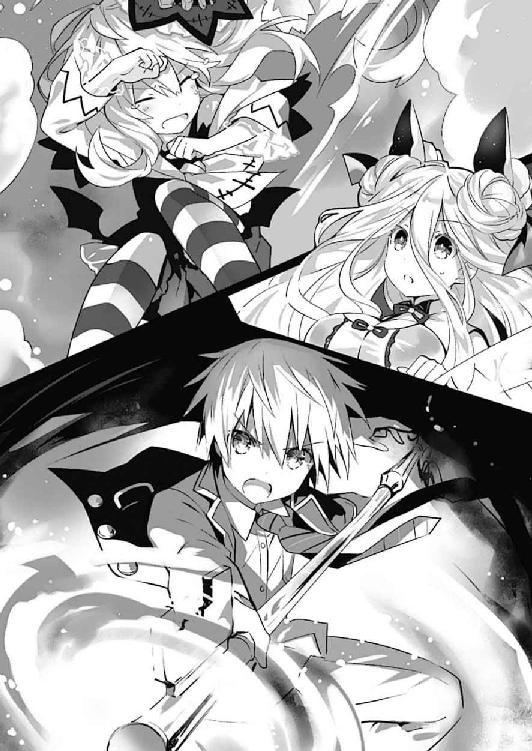
「馬鹿な。うぬは、一体──」
「──通りすがりの高校生さ」
言うが早いか、士道は〈封解主〉を真っ直ぐ突き出してきた。
鍵の先端が、六喰の胸に何の抵抗もなく吸い込まれる。
一体いつ、なぜ、どこから。そんな疑問が、頭の中をぐるぐると巡る。
だが、そんな思考は数秒と続かなかった。
「......【開】ッ！」
士道がその言葉とともに、六喰に突き刺さった〈封解主〉を捻ったからだ。
「ぁ────」
瞬間。
六喰は、長い間閉じられた心の中に、一条の光が差し込むかのような錯覚を覚えた。
「ふ──ッ」
「──はぁぁぁっ！」
折紙の〈エインヘリヤル〉と、アルテミシアのレイザーブレイドが幾度となく打ち合い、暗い宙に魔力光を散らす。
「く......」
槍から伝わる剣の重さに、腕が震える。放たれる一撃一撃に必殺の威力と意志が込められていることが容易に理解できた。
しかし折紙とて、やられっぱなしというわけではない。今の折紙には、先ほどまではできなかった戦い方があるのだ。
「──〈絶滅天使〉！」
折紙が叫びを上げると、折紙の背後に翼のように浮遊していた幾つもの『羽』が、それぞれ意志を持ったかのように飛び立った。
そしてそれらはその先端をアルテミシアに向けると、彼女目がけて一斉に光線を放つ。
「おっと」
アルテミシアは小さく声を漏らすと、綺麗に身体を捻り、その攻撃をかわした。
「逃がさない」
折紙はキッと視線を鋭くすると、宙を舞う〈絶滅天使〉に脳内で指示を発した。
するとその意志に従い、無数の『羽』のうち半分がアルテミシアの後方に展開、光線を網目状に放って逃げ場を塞ぐ。
そして残った半分が、折紙の持つ〈エインヘリヤル〉の先端に結集し、巨大なドリルのようなシルエットを形成した。
「はぁッ！」
高速で回転する〈絶滅天使〉から放たれた光が螺旋を描き、アルテミシアに迫る。
「──やるね」
アルテミシアはニッと笑うと、すっと目を細めた。
するとその瞬間、アルテミシアのバックパックに付いていた羽のようなパーツから、結集した〈絶滅天使〉に向けて、一斉に魔力砲が放たれる。
「く......！」
二つの光が、凄まじい衝撃波を伴いながらぶつかり合う。
しかし、その拮抗も長くは続かなかった。アルテミシアが、手にしたレイザーブレイドを折紙の頭目がけて投擲してきたのである。
「ち......ッ」
眉をひそめながら身体を反らし、それを避ける。しかし、その一瞬の隙に、アルテミシアは身体を翻すと、〈エインヘリヤル〉の柄を踏み台にするような格好で折紙の包囲から逃れた。
「ふう......さすがに今のは危なかったかな」
折紙から距離を取り、随意領域操作で先ほど投擲した剣を手元に引き寄せながら、アルテミシアが息を吐く。
「霊力と生成魔力のコンビネーション、か。興味が尽きないね。......でも残念、今日はあんまり遊んでいられないんだ。早めに決着を──」
と。
そこで、アルテミシアが言葉を止めた。
一瞬何が起こったのかと表情を警戒の色に染めた折紙だったが──彼女の視線を追ってすぐに気づく。
〈ゲーティア〉──エレン・メイザースの駆る空中艦が、黒煙を噴き上げながら地球に吸い込まれていくのが見えたのである。
「エレン!? まさか、〈ゲーティア〉が......!?」
常に余裕の張り付いたアルテミシアの表情に、初めて動揺のようなものが過ぎる。折紙は油断なく槍の切っ先を向けながら、小さく唇を開く。
「──あなたたちの負け。大人しく諦めて」
「............」
アルテミシアはしばしの間無言になったのち、ギロリと視線を向けてきた。
「......勘違いしちゃ駄目だよ。確かにエレンがやられたのは予想外だったけど、それで勝敗が決したわけじゃない。私たちの今日の目的は──」
「────」
「精霊を墜とすこと、なんだから」
「く......〈絶滅天使〉！」
瞬間。折紙はアルテミシアの視線が右方に向くのを捉え、〈絶滅天使〉に指示を発した。
が──遅い。アルテミシアの装備から放たれた魔力砲は、〈絶滅天使〉の攻撃をすり抜け、士道と六喰の方へと伸びていった。
「あ、あ......」
視界が明滅する。痺れた手足に、急速に血液が巡っていくかのような感覚。
六喰の心は、急激な環境の変化に戸惑い、混乱を起こしていた。
──『混乱』。
そう。それこそが、異常だ。
〈封解主〉によって『閉じ』られた六喰の心は、そのようなものを感じるはずがなかったのである。
──ああ、いや、だからこそだ。それはそうだ。だんだんと。理解していく。差し込まれた鍵。〈封解主〉。士道。五河士道。【開】。開けた。心を。心の鍵を。長らく封印していた六喰の心を。流れる。流れ込んでくる。感情の奔流。久しく感じていなかった不可視の色彩。無理矢理心を開かれた憤り。予想外の手段を用いられたことへの興味。そして、我が身を顧みず六喰のためにこんなところまでやってきた士道への──
「六喰ッ!!」
と。決壊したダムの如く溢れる感情に戸惑う意識に、突然そんな声がかけられる。
未だ感情と意識が繫がりきっていなかったため、それに反応を示すことは困難であったけれど、頭のどこかが、視界から得た情報から、自分が置かれている状況を察する。
迫る。光線。一直線に六喰を狙い撃つ光の矢。
きっと士道はこれのことを言っているのだろう。だが。だけれど。しかし。荒れ狂う感情の波に、身体を上手く動かすことができない。一瞬あとには六喰の身体は、その光に貫かれてしまうだろう。
ああ、こわい。
──そう、『怖い』。
痛いのが、怖い。死ぬのが、怖い。久方振りの恐怖が、六喰の心に広がっていく。
だが。
「く......ッ！」
次の瞬間。六喰の感じた恐怖は、別の感情によって包み込まれた。
士道が、迫り来る光線から六喰を守るように、六喰に抱きついてきたのである。
「ぁ──」
「〈氷結傀儡〉......ッ！」
叫びとともに、士道の背に氷の盾が形成され、その一瞬あと、そこに凄まじい威力の魔力砲が直撃した。
「が、ぁ......っ！」
咄嗟に作った氷の盾だけでは、その威力は殺しきれなかったらしい。苦悶とともに、士道と、それに抱えられた六喰の身体が吹き飛ばされる。
するとそれに次いで、六喰は奇妙な感覚を覚えた。
今の今まで周囲に広がっていた不思議な暖かさがふっと消えたかと思うと、急に見えない力にぐいと引っ張られ始めたのである。
それが、地球の引力によるものであることに気づくのに、さほど時間はかからなかった。光線によって吹き飛ばされた六喰と士道は、士道の活動していた不思議な領域から外れてしまったのである。
このままでは、大気圏に突入してしまう。六喰は〈封解主〉で空間に『扉』を開け、安全圏まで逃げだそうとした。だが──どうしても、身体が上手く動かない。
「ぐ──〈颶風騎士〉！ 〈氷結傀儡〉！」
士道が何やら口を動かす。すると二人の周りに風が渦を巻き、氷の壁が生じた。
「大丈夫だ......六喰！ おまえは......俺が、守るから......ッ！」
士道がそう言って、六喰の身体をぎゅうと強く締め付けてくる。どくん、どくんという心臓の鼓動が、身体を通して伝わってきた。
「────」
極彩色の感情の中、一つの色が浮かび上がる。
けれどそれが何を示すのかを認識するより先に。
六喰と士道の身体は、青い星に吸い込まれていった。
第七章 開かれた心
──激しい銃撃音や、地を揺るがす爆音が、彼方此方からひっきりなしに響き渡る。
破滅の足音。落城の兆し。積み上げたものが崩れ落ちる終焉への序曲。
〈ラタトスク〉本部基地は今、絶望的な状況に追い込まれていた。
ＤＥＭインダストリー。〈ラタトスク〉と同じく、人知と人理の枠から外れた神域の業──顕現装置を持つ者たちによって。
無論〈ラタトスク〉とて、無防備に門を開いていたわけではない。むしろこの基地は、世界でも屈指の防衛体制が敷かれていたといっていいだろう。
顕現装置による対空防壁に、幾重にも張り巡らされた警戒網。そして何より、不可視迷彩による徹底した所在の隠蔽。
重要拠点における最大の防衛策とは、どんな攻撃を受けてもビクともしない城壁でも、攻めてきた敵を返り討ちにする武力でもなく──そもそもその場所を知られないことにあると、エリオット・ウッドマンは考えていた。
〈ラタトスク〉は秘匿組織であり、その目的は国土を守ることでもなければ、力を示威して敵を圧することでもない。ゆえにその本拠地は、領主の城や国防総省のようにシンボリックである必要がなかった。否、より正しく言うのであれば、目立つことは致命的なマイナスだったのである。
それゆえ、この基地の所在を知っている機関員は〈ラタトスク〉内でもごく一部であったし、ここを訪れられるのは、同じく不可視迷彩を展開した航空機に限られている。どんな国の諜報機関であろうと、この座標にこのように大規模な施設があるとは認識していないだろう。
そしてそれは、〈ラタトスク〉の仇敵たるＤＥＭインダストリーも例外ではないはずだった。
だが、その『知られない』という絶対防壁は、いとも容易く破られてしまった。
そう。全知の魔王〈神蝕篇帙〉の手によって。
「警戒をしていなかったわけではないが、こうも鮮やかにやられてしまうとはね。さすがはアイクといったところか」
ウッドマンは小さく肩をすくめながら呟くように言った。
白髪の交じった金髪を一つに束ねた、初老の男である。危機的状況に追い込まれてなお、その所作や表情からは未だ悠然とした調子が消えていなかった。
しかしそれも当然だ。ウッドマンは〈ラタトスク〉最高意思決定機関・円卓会議の議長。つまり実質的な組織のトップである。ならばウッドマンは、何が起ころうと決して狼狽えてはならない。上官の焦燥は容易く部下に伝播し、その判断を狂わせる。頂点の椅子に座る者は、死の直前まで余裕の笑みを浮かべていなければならないと、ウッドマンは信じていた。
それに実際のところ、ウッドマンとてＤＥＭインダストリーの襲撃を予想していなかったわけではない。
ウッドマンのかつての盟友にして仇敵、アイザック・ウェストコットが全知の魔王を手に入れたのなら、いの一番に得るのは未封印の精霊の所在と──裏切り者であるウッドマンの居場所であることは想像に難くなかったからだ。
だからこそウッドマンは、〈ラタトスク〉が有する施設の中でも最高レベルの防衛体制を持つこの基地に身を移していたのである。
「──お戯れを。アイザックはそこまで考えていません。旧友であるあなたに、新しく手に入れたおもちゃを自慢したくてたまらないだけの子供です」
淡々とした調子でそう言ったのは、ウッドマンの隣に控えたノルディックブロンドの女性だった。縁の細い眼鏡のレンズ越しに、綺麗な碧眼でウッドマンを見つめてくる。
カレン・メイザース。ウッドマンの秘書にして、人類最強の魔術師エレン・メイザースの実妹。彼女もウッドマンと同様、かつてＤＥＭに籍を置いていた技術者である。それだけにウェストコットへの評価も的を射ていた。思わずふっと唇を緩めてしまう。
「そうかもしれないな。アイクは昔から変わらない。だが、それだけに恐ろしいぞ。考えてもみたまえ。核の発射ボタンが並んだ部屋に、好奇心旺盛な少年が一人放り込まれたようなものだ」
「怖気を振るいますね。狂気の沙汰です」
カレンは言葉とは裏腹に涼しげな表情をしながら、手にしていた携帯端末に視線を落とした。そして何やら素早くそれを操作したかと思うと、再び顔を上げてくる。
「──脱出経路が確保できました。こちらへ」
「ああ。資料の処理は？」
「滞りなく。もちろん、アイザックの『おもちゃ』で覗かれたなら、どうしようもありませんが」
「結構。では、行こうか。機関員にも退避勧告を」
「はい」
カレンは小さくうなずくと、机の天板の下に手を伸ばし、そこに隠されていたボタンを押した。すると机の後ろにあたる壁の一部が開き、緊急時用の脱出エレベーターが現れる。
「失礼します」
そしてカレンはウッドマンの座った車椅子のハンドルを握ると、そのままエレベーターの中へと歩みを進めていった。
二人が中に入ると同時、扉が閉じる。カレンが壁面に設えられていたパネルを操作すると、低い駆動音を伴ってエレベーターが地下へと降りていった。
ほどなくして振動が止まったかと思うと、入ってきたのとは逆方向の扉が開く。前方に、コンリートで舗装された仄暗い道が延々と続いていた。
「出口にヘリを待たせています。今しばらくご辛抱を」
言いながら、カレンが車椅子を押して通路を歩き出す。
が──ほどなくして、辺りに反響していたカレンの靴音と車椅子のタイヤの音は止まることとなった。
理由は非常にシンプルなものである。
通路の前方に、人影が一つ、あったからだ。
「──やあ、エリオット。直接顔を合わせるのは久しぶりだね」
漆黒のスーツを纏った男が、顔に薄い笑みを張り付けながら言ってくる。
「............」
するとそれに反応するように、車椅子のハンドルを通してピクリと微かな振動が伝わってきた。さすがのカレンも、完全に無反応を貫くことは難しかったのだろう。無論、突然『彼』を目の前にしながら、動揺をそれのみに抑え込んだカレンの胆力は特筆すべきものであったのだけれど。
「ああ......久しぶりだな、アイク」
ウッドマンは前方に立った男の名を呼び、目を細めた。
永い時を経てくすんでしまった金属のような色のアッシュブロンドに、淀んだ澱の如き双眸。この世に充ち満ちた穢れを集め、無理矢理人の形にしたのなら、このような様相になるのではないか。無礼に過ぎると自覚しながらも、そんな冒瀆的な感想を抱かずにはいられない。つまりは──そんな男だった。
ウッドマンの衰えた視力は、眼鏡を通しても朧気にしか相手の姿を見取ることができない。しかしその声は、所作は、そしてその異様な雰囲気は、かつて志を同じくした友の姿をありありと示していた。
「まさかこの道で待ち伏せをされるとはね。ダミー用の逃走経路も幾つか用意していたはずだが。これも〈神蝕篇帙〉の力かい？」
ウッドマンが言うと、ウェストコットは大層可笑しそうに肩をすくめた。
「いいや。残念ながら〈神蝕篇帙〉は君のところの精霊に落書きをされてしまってね。──ここを見つけ出したのはあくまで勘だよ。君なら、きっとここを選ぶと思っただけさ」
「なるほど。やはり旧知の相手はやりづらい」
ウッドマンとウェストコットは、どちらからともなくくつくつと笑った。
「それで......一体何のご用かな。旧友を訪ねるにしては、随分とノックが荒っぽいようだが」
「ああ、すまないね。そう大層な用件ではないんだ。──君とカレンを、ＤＥＭに連れ戻そうと思っているだけさ」
世間話をするような調子で、ウェストコットはそう言った。いや、実際、彼は世間話をしている程度のつもりなのかもしれない。たとえそれが、一つの組織の崩壊を意味しているとしても。
ウッドマンは驚くでも憤るでもなく、フッと唇の端を上げた。
「もし嫌だと言ったら、どうするね。私とカレンを殺すのかい？」
「まさか。それでは、エレンを置いてきた意味がなくなってしまうじゃあないか。君の意志は尊重したい。無理強いをするつもりはないよ。ただ、ならば代わりといってはなんだが──」
ウェストコットは肩をすくめると、すっと目を細め、右手を前に突き出した。
「〈神蝕篇帙〉」
そして静かに、その名を呼ぶ。するとその瞬間、彼の手の周りに闇が渦を巻き、一冊の本を形作った。
「──少し、私と遊んでくれるかな？」
「ふむ......」
ウッドマンは目の前に現れたあまりに禍々しい瘴気の塊に、小さく唸りながら髭を撫でるようにあごに手を置いた。
相手は魔王。できることならば相手にはしたくない。
だが──この状況では、そう我が儘も言えないだろう。
「......仕方がないな。昔から、君は言って聞く男ではなかった」
ウッドマンは小さく息を吐くと、グッと腕に力を入れ、ゆっくりと車椅子から立ち上がった。
が、そこで後方から肩を摑まれる。──カレンだ。
「いけません、エリオット」
「大丈夫だよ、カレン」
「ですが」
ウッドマンは優しく微笑みながらカレンの手を外すと、よろめくような足取りで前方に歩いていった。
「............あと、二回といったところかな」
そして誰にも聞こえないくらいの小さな声で呟き、ウェストコットの前に立つ。
「さて......始めようか。思えばアイク、君とこうして対するのは初めてかもしれないね」
「それはそうさ。私は弱いからね。こうして君の前に立つと恐怖で足が震えるよ、エリオット」
冗談めかした調子でウェストコットが笑う。
ウッドマンはそれに応ずるように口元を笑みの形にすると、胸元から、金色のドッグタグのようなものを取り出した。
◇
ものごころがつく年齢というのが何歳くらいになるのかは人それぞれだろうけれど、それが一番古い記憶がある頃のことを言うのであれば、自分の場合は五歳のときだったように思う。
覚えているのは、もうそのときには自分がひとりぼっちであったということ。
別に観念的な問題ではない。自分のことを理解できるのは自分のみであっただなんて哲学的な話をしたいわけでもない。ただ単純に、自分という人間を認識できる意識を得たとき、当然いるべき父や母、きょうだいなど──要は家族が、存在していなかったのだ。
自分にはいない家族というものの存在を知ったときの感覚は──実はよく覚えていない。
もっと正確に言うのなら、それがどんな感情だったのかを、改めて言葉にすることが難しかった。
無論、間違っても居心地のよいものではなかったのだけれど、単純な悲哀とか孤独感というものとも少し違うような気がした。なぜならそれは、もとはいた家族を失った者の感情だ。家族の温かさを知っているから悲しいと感じるし、ひとりでなかったから寂しいと感じる。
自分は最初からひとりだったから、その感情を寂しさと定義することさえできなかったのかもしれない。
それが当たり前で、家族がいる子が『特別』だった。自分は『特別』でないのだから仕方がない。どちらかというとそれは、そんな諦観と虚無感に近いものだったように思う。
──だけれど、それからどれくらい経った頃だったろうか。
そんな日々は、ある日突然終わりを告げた。
自分に、初めて家族ができたのだ。
もちろん、血縁があるわけではない。子供が欲しいという夫妻が自分を気に入り、引き取りたいと申し出てくれただけだ。
一体どういったプロセスで自分が引き取られたのかは覚えていない。否、正確に言うのなら、施設の人が何かを話していたのはぼんやりと聞いていたのだけれど、何を言っていたのかが、当時の自分にはよくわからなかったのだ。
しかし、そんなものはどうでもよかった。
自分に。ひとりぼっちの記憶しか持たなかった自分に、初めて家族ができた。
その事実があまりに衝撃的で、しばらく放心状態になってしまった。
父と、母と、そしてきょうだいとなる女の子がひとり。
自分の、自分だけの、家族。
それを認識した瞬間。そして、
（こんにちは。今日から私たちは、家族よ）
母からそんな言葉を聞いた瞬間。
（──、ぁ、あ、あぁぁああ......）
目から、ダムが決壊したかのように、涙が滂沱と溢れたのだ。
白と黒だけで構成された世界に、鮮やかな色が広がっていくような感覚。
自分を愛してくれる人。
自分が、愛してもいい人。
自分は、この人たち──父を、母を、きょうだいを、生涯をかけて愛そうと誓ったのだ。
◇
「............、あ......」
士道は、小さく声を漏らしながら、目を覚ました。
「今のは......」
何か、不思議な夢を見ていた気がする。懐かしいような、覚えのないような......もの悲しく、しかし温かな夢だ。
「ん......」
ぼんやりとする意識の中、士道は顔にくすぐったい感触を覚え、手で頰を拭った。
するとそこが、涙で濡れていることがわかる。明らかにあくび程度で流れる量ではない。どうやら、寝ながら泣いてしまっていたらしい。
「......なんだそりゃ」
前髪をくしゃくしゃとかきながら、周囲を見回す。するとほどなくして、ぼやけていた視界がはっきりと実像を帯びていった。
どうやらベッドに寝かされているらしい。無機質な白い壁に天井。恐らく〈フラクシナス〉の医務室である。
士道はのそのそとした動作で上体を起こすと、大きく伸びをした。凝り固まっていた筋肉が微かに痛み、小さく骨が鳴る音がする。
するとそこで不意に部屋の扉が開き、琴里を初めとした精霊たちが入ってきた。
「お邪魔するわよ......って、士道！」
「おお！ 目が覚めたのか!?」
皆が驚いたように目を丸くしてくる。士道は苦笑しながらそちらに向いた。
「ああ......今さっきな」
と、士道が苦笑しながら返すと、琴里の後ろにいた十香が何かに気づいたように首を傾げてきた。
「シドー、どうしたのだ、泣いているのか？」
「あ、いや......あくびをしただけだよ」
夢を見ていて泣いてしまっただなんて少し言いづらかったし、皆を心配させてしまうのもよくないと判断して、士道は軽く笑いながら誤魔化すようにそう言った。
「............」
そんな士道の様子に何かを感じ取ったのか、琴里は何やら不審そうな顔をしていたが......すぐにやれやれと息を吐いて士道の方に向き直ってきた。
「まあいいわ。──それより士道、身体は大丈夫なの？」
「え？ ああ......大丈夫だと思うけど......」
士道は琴里の深刻な様子に首を傾げかけたが──すぐにハッと息を詰まらせた。
琴里の言葉を起点として、靄のかかっていた記憶の輪郭がくっきりと浮かび上がってくる。
そうだ。士道は意識を失う前、六喰を抱えて生身で大気圏にダイブしていたのである。如何に天使の加護があろうと、琴里が心配するのも当然と言えた。
「六喰は......六喰はどうなったんだ!? 無事なのか!?」
士道は布団を撥ね除けるような勢いで身を起こした。
幸いというべきか、〈氷結傀儡〉や〈颶風騎士〉の防護、そして〈灼爛殲鬼〉の治癒能力によって、士道の身体には目立ったダメージが残っていなかった。しかし、地上に至る前に気を失ってしまっていたため、六喰の安否は確認できていなかったのである。
すると琴里は、難しげな顔をしながら答えてきた。
「──わからないわ。私たちが士道を見つけたとき、もう既に六喰の姿はなかったの。もちろん、空中で離れてしまった可能性を考えて、落下地点を中心にかなりの広域を調査したのだけれど......」
「それって......まさか」
士道が不安そうな表情を浮かべると、琴里は「大丈夫よ」というように首を横に振ってきた。
「自失状態だったとはいえ、六喰は霊装を纏った精霊よ？ 士道が無事に発見されたことからみても、大事に至ったとは考えづらいわ。士道と一緒に地上に至ったあと、先に意識を取り戻して、どこかへ逃げたと考える方が適当でしょうね」
「そ、そうか......」
琴里の言葉に、士道はほうと安堵の息を吐いた。
「............」
だが、すぐに思い直して、唇を引き結ぶ。確かに六喰が無事だというのは喜ばしい情報である。しかし逃亡されたうえ行方もわからないとあっては、手の打ちようがなかった。
無言で右手に視線を落とし、ぐっと拳の形に握り込む。──手のひらに残った、鍵を捻る感触を確かめるように。
士道はあのとき、確かに六喰の胸に偽の〈封解主〉を差し込み、彼女の心に掛けられていた鍵を開けたはずだった。
しかし、それはあくまでスタートラインであったのだ。心の鍵を開いたからといって、六喰が士道に好感を抱くことが約束されたわけではない。それはあくまで封印されていた六喰の感情を呼び覚ます行為に過ぎず──最悪の場合、彼女が士道に悪感情を覚えてしまうという可能性さえあったのである。
そして、それを左右するであろう重要なファーストコンタクトの瞬間、士道は意識を失ってしまっていた。仕方のないこととはいえ、士道は悔恨に顔を歪めずにはいられなかった。
「......ごめん、みんな。あれだけみんなに手を尽くしてもらったのに、俺は......」
士道が言うと、精霊たちは驚いたように目を丸くし、ブンブンと首を横に振ってきた。
「何を言っているのだ。シドーがどれだけ頑張ったか、皆よく知っているぞ」
「そ、そうです。そんなこと、言わないでください」
「気落ちしてるねぇ。大丈夫？ おっぱい揉む？ って揉めるほどなかったわー！ あははー！」
二亜がなんとも反応しづらいことを言って笑う。士道は頰に汗を垂らしながら苦笑した。
「えッ、いいんですかー!? なんですかそのサービス、聖母ですかー!?」
そんな士道の反応に反して、美九が興奮した様子で指をわきわき動かし始める。が、話が脱線しそうだったため、琴里たちに止められていた。
「美九、ちょっと黙ってて」
「あぁん！ いけずぅ！」
「はぁ......まったく。ま、落ち込んだって何にもならないわ。それに、何も振り出しに戻ったわけじゃないでしょう？ みんなの思いに報いたいっていうなら、まずは前を向くことから始めましょ」
「あ、ああ......そうだな」
士道は苦笑しながらうなずいた。確かに琴里の言うとおりである。過去を悔いるのが無意味とは言わないが、そこから教訓を得て前に進まないのなら、それはただの停滞に過ぎない。
士道を信じて送り出してくれた皆のためにも、士道は立ち止まるわけには──
「──あ」
と、そこまで考えたところで、士道はとあることを思い出し、声を発した。
「何、どうしたのよ、士道」
「そうだ、琴里。〈ラタトスク〉の基地は一体どうなったんだ......!?」
士道はグッと拳を握りしめながら問うた。──そう。士道たちが宇宙に向かう直前、〈フラクシナス〉が格納されていた〈ラタトスク〉の基地は、ＤＥＭインダストリーによって襲撃を受けていたのである。
琴里は士道の言葉に、小さく息を吐いてから返してきた。
「......大丈夫、とは言わないわ。被害は決して小さくなかった。あの基地はもう放棄せざるを得ないでしょうね」
「そ、そんな......じゃあウッドマンさんやカレンさんは......!?」
「............」
士道が戦慄した表情を浮かべながら言うと、琴里は無言でジャケットのポケットを探り、そこから小型の端末を取り出して、士道の方に向けてきた。
「え......？」
琴里の行動の意味がわからず士道が困惑していると、数秒後、その端末の画面に、ウッドマンの顔が映し出された。
「！ ウッドマンさん！」
『──ああ、士道くん。身体は大丈夫かね。生身で大気圏突入をしたと聞いたが』
「え、ええ......なんとか。それより、ウッドマンさんは......」
『どうにか無事だよ。心配をかけたなら申し訳──おぐっ！』
通信の途中で、ウッドマンが苦しげな声を上げる。士道はビクッと肩を震わせた。
「う、ウッドマンさん？」
『片手片足が取れかけた人間のどこが無事ですか。満身創痍以外に言葉が見つかりません』
次いで聞こえてきたのは、ウッドマンの声ではなかった。鈴を転がすような女性の声。──カレンだ。
その声は相変わらず抑揚のない調子であったけれど、なぜだろうか、どことなく怒気をはらんでいるようにも聞こえた。
『早く医療用顕現装置に入ってください。しばらくは絶対安静です』
ウッドマンが苦笑しながら、士道に視線を向けてくる。
『すまない。もう少し君と話がしたいのだが、カレンがあの調子でね』
「い、いえ、それは構いませんけど......片手片足って」
『エリオット』
『わかった、わかったから引っ張らないでくれ、カレン』
ウッドマンの姿が画面から消えたかと思うと、そこで通信が切れた。琴里が肩をすくめながら端末をしまい込む。
「──というわけよ。なんとか脱出には成功したみたい」
「お、おう。......なんかすごい不穏な言葉が聞こえた気もするんだが」
「まあ、私ももの凄く気になったけど......はぐらかすばっかりで何があったのかは教えてくれないのよね」
琴里はふうとため息を吐くと、気を取り直すように腕組みをした。
「まあ、とにかく士道は身体を休めてちょうだい。六喰はこっちで捜しておくから。いざ彼女が見つかったとき、士道が動けませんじゃ話にならないしね」
「ああ、わかった。......でも、六喰は一体どこに行ったんだろうな」
「それがわかったら苦労しないわ。彼女の〈封解主〉なら、それこそどこにでも行けちゃうわけだし。また誰もいない宇宙にでも逃げたかもしれないし、もしかしたら案外近くにいるかも──」
と。
そこまで言ったところで、琴里が言葉を止めた。
何やら啞然とした様子で目をまん丸に見開き、士道の方を見つめてくる。
「え？ な、なんだよ、琴里。何か......、──ッ!?」
士道は不思議そうに首を傾げながら言いかけ──数秒前の琴里と同様に、声を中断した。否、もっと正確に言うのなら、驚愕に息を詰まらせてしまい、言葉を止めざるを得なかった。
しかしそれも当然である。何しろ不意に後方から手が二本、にゅっと伸びてきたかと思うと、士道の肩をぎゅうと抱いてきたのだから。
突然のことに身を強ばらせ、首を回して後ろを振り向く。
「へ......？」
そして士道は、そこにあった少女の顔を見て、呆然と目を見開いた。
「──ふむん、目覚めたようじゃの」
そう言って、少女が口元を緩める。長い金髪の合間から覗く、これまた黄金の輝きを湛えた双眸が、なんとも楽しげな形に歪んでいた。
一瞬、士道の脳が混乱を起こす。
しかしそれは、何の前触れもなく少女の姿がそこに現れたからではなく、少女と、今少女が浮かべている楽しげな表情が、士道の頭の中で繫がらなかったからであった。
だが、間違いない。そこにいたのは──
「む、六喰......!?」
そう。士道が宇宙で相対していた精霊・星宮六喰が、いつの間にか虚空に開いた『扉』から身を乗り出し、士道の肩に手を回していたのである。
「な......!?」
「ど、どうして六喰がここに......!?」
「狼狽。どういうことですか」
士道に続くように、精霊たちが驚愕の声を上げる。六喰は「ふむん？」と喉を鳴らすように言いながらちらと皆の方を一瞥したが、すぐに視線を切って士道の頰を指先でぐりぐりと弄ってきた。
「むくを待たせるとは憎い男じゃ。しかしまあよい。許してやろう。今は妙に気分がよいからの」
「は......、えっ......、は......？」
「なんじゃ、狐につままれたような顔をして。ふふ、愛いやつじゃ」
「......!?」
甘ったるい声音で言いながら、六喰が士道の鼻をちょんとつついてくる。士道は目を白黒させた。
それはそうだ。何しろ相手は、士道に容赦なく隕石の雨を降らせてきた精霊なのである。態度が軟化......などというレベルではない。同じ顔をした別人と言った方がまだ説得力があるだろう。十香や琴里たちも、あまりの変化に啞然とした表情を浮かべている。
「あ──」
だが、士道はピクリと眉を動かした。この変化の原因に、心当たりがあったのである。
「まさか、心の鍵を開けたから......？」
「......！」
士道の言葉に、精霊たちもハッと目を見開いた。
そう。宇宙で彼女と見えたときと、今。その二つの間にあったのは、士道が六喰の心にかけられていた鍵を開けたという点だったのである。
士道の記憶にある精霊とは明らかに異なる、表情豊かな少女。心を閉ざす前の六喰は、こういう性格だったということなのだろうか。
......いや、たとえそうだとしても、あまりに士道に懐きすぎている気がする。士道は頰に汗を垂らしながら問うた。
「む、六喰......？ おまえ、なんでそんなにフレンドリーというか、俺に懐いてるんだ？ いや、駄目とかじゃなくて、むしろありがたいんだが......」
「ふむん？」
六喰は、しばしの間不思議そうに目を丸くしたのち、答えてきた。
「むくの心の鍵を開けるために手を尽くしてくれた主様に心打たれるのは、そんなにおかしなことかのう。そんなことを言うのなら、顔を合わせた瞬間からむくを救う、幸せにすると宣うた不躾な男を一人、知っておるが」
「うぐ......」
確かに、言われてみればそのとおりである。
士道とて、精霊を救おうと決意するまでには、様々な葛藤と苦悩があった。しかし六喰からしてみれば、突然現れてアイラブユーと叫ぶ軟派男にしか見えなかったろう。
「すまぬすまぬ。主様が愛いものでからかってしもうたのじゃ」
と、士道が困った顔をしていると、六喰があははと愉快そうに笑った。
「その理由に噓はない。心の鍵が開いた瞬間、それまで主様がむくに訴えかけた言葉、尽くしてくれた手をありがたいと感じた。これは本当じゃ。......じゃが、主様を好いた直接の理由は、そうじゃの──」
六喰は考えを巡らせるように指をくるくると回したのち、その指をピン、と立ててみせた。
「──なんとなく、かの」
「......おいおい」
六喰の回答に、士道はため息交じりに返した。しかし六喰は別段ふざけた様子もなく言葉を続けてくる。
「好き嫌いなぞ、突き詰めれば所詮はそんなものじゃろうて。なんとなく──主様はむくに近いような気がしての」
「近い......？」
その不思議な表現に、士道は首を傾げた。まあ、自分の感覚や好みが近しい者を好むのは決しておかしなことではないが、六喰は士道に、どんな親近感を覚えたというのだろうか。
と、士道がそんなことを考えていると、六喰が無邪気に笑いながら言葉を続けてきた。
「まあ、よい。それより主様。約束は果たしてもらうぞ？」
「約束？」
「むん。主様が言ったのじゃろう。むくを幸せにすると。むくを肉奴隷にすると。......ちなみに肉奴隷なるものが何かはよくわからぬのじゃが、詳しく教えてもらえるかの」
六喰が屈託のない顔で、そんなことを言ってくる。それを聞いた精霊たちが、怪訝そうに眉をひそめた。
「な......っ!?」
「士道、それは本当？」
「あ、あの......」
「うっわ......引くわ......」
「ち、違う！ 誤解......じゃないかもしれないけど、これには理由があってだな......」
「待った。ちょっといい、六喰？」
と、士道が言葉を継ごうとすると、前方に立った琴里がストップをかけてきた。六喰が怪訝そうな表情を作り、そちらに目をやる。
「......ふむん？ なんじゃ、うぬは」
「初めまして。士道の妹の琴里よ」
「ほほう......？ で、妹がむくに何用じゃ？」
「今士道は本調子じゃないのよ。六喰、あなたを抱えて墜落したときのダメージが抜けきってないの。──もちろん士道の言うことに噓はないわ。......肉奴隷云々はまあ別として、士道はきっと、あなたを救ってくれると思う。でも、少しだけ......そう、明日まで待ってちょうだい」
「ふむん」
琴里の言葉に、六喰は小さくうなるような声を上げた。
そしてあごをさすりながら、どこか嬉しそうに口元を緩める。
「そうか、そうか。むくを助けるために怪我を負ったか。仕方ないの、待ってやろう。明日じゃな？」
「！ ええ、ありがとう。助かるわ。よければそれまで、あなたもここで休んで──」
「無用じゃ」
六喰が琴里の声を遮るように手のひらを広げる。
すると次の瞬間、六喰は士道の肩に回していた手を外すと、前方に乗り出していた上体をゆっくりと起こした。
「──そういうことであればよいじゃろう。明日を楽しみにしているぞ、主様」
そしてそう言って笑顔で手を振り、虚空に開いた『扉』へと戻っていく。六喰が姿勢を正した瞬間、『扉』が渦を巻くように収縮し、あとには周囲と同じ医務室の壁が残った。
『............』
それからしばらく医務室には沈黙が流れていたが、やがて二亜がその緊迫感に耐えかねたように、「ぷっはー！」と息継ぎをした。
「びっくりしたねぇー！ なに、アレが噂のムックちん？ 話に聞いてたのとは随分性格が違いますぞぉ！」
二亜が何やら声を裏返らせながら叫ぶ。すると他の精霊たちも、緊張の糸が切れたようにはあと吐息をした。
「驚愕。確かに二亜の言うとおりです。もっと無愛想な精霊を想像していました。それで士道、肉奴隷とは一体どういうことですか」
「士道さんが心の鍵を開けたから......でしょうか？ あの、気になり......ます」
「うーん、でも可愛かったですねぇ。身体はちっちゃいのに出てるところは出てるというかぁ。ぬふふ、だーりんもお好き者ですねぇ」
「......美九、気持ち悪い。ちなみに士道はもっと気持ち悪い」
「いや、だから、それは選択肢でだな......」
皆からじっとりとした視線が送られてくる。士道は力なく息を吐くと、未だ微かに六喰の体温が残る肩に触れながら、琴里に視線をやった。
「──琴里」
「ええ。悪いけれど、勝手に日程を組ませてもらったわ。〈フラクシナス〉改修に合わせて、今までの医療用ポッドとは別に、新しい設備を作ってもらったから、今日はそこで身体を休めてちょうだい」
「新しい設備？ 今までのと何か違うのか？」
「それは見てのお楽しみ。ま、効果は保証するわ。明日までに全快しなさい」
琴里が、腕組みしながら言ってくる。士道はそれに首肯を以て返しながら、言葉を継いだ。
「ああ、わかってる。──ありがとうな、琴里」
「は？ な、なんで私がお礼を言われるのよ」
「え？ だって、俺の身体を気遣って一晩時間をくれたんだろ？」
「な......ッ！」
士道が言うと、琴里はボンッ！ と顔を赤くした。
「な、何言ってるのよ。こっちのサポート態勢が整ってなかったからに決まってるでしょ！」
琴里が慌てた様子でブンブンと首を横に振る。そんな琴里の様子に、耶俱矢や二亜がニヤニヤと口元を綻ばせた。
「ほほーう」
「相変わらず妹ちゃんはお手本のようなツンデレだにゃあ」
「と、とにかく！ 決戦は明日よ！ コンディションは万全に整えておきなさい！」
琴里はビシッと士道に指を突きつけながら叫ぶと、そのまま医務室を出ていった。
そんな琴里の背を見送りながら、士道は小さく苦笑した。
「はは......ま、とりあえず、そのご自慢の医療設備ってやつを試させてもらうか。......って、そういえばどこにあるのか言わずに行っちまったな」
と、士道がぽりぽりと頰をかくと、美九がポンと手を打った。
「あー、その施設なら私たちも使わせてもらいましたから案内しますよー」
「ん、そうなのか。じゃあお願いするよ」
「ええ、任せてくださいねぇー。うふふ......」
「......？」
何やら美九が楽しげな含み笑いを漏らす。士道は不思議そうに首を傾げた。
「......っあぁー......」
それから、およそ三〇分後。
士道は広い浴場の中で、温かなお湯に身体を浸していた。
そう。士道が美九たちに連れられてやってきたのは、なんと巨大なお風呂だったのである。
なんでも、液体に顕現装置で発生させた魔力を帯びさせているらしく、普通に入浴しているだけで治療効果があるとのことだった。効能は切り傷打ち身疲労他身体の不調エトセトラエトセトラ。ロールプレイングゲームのダンジョンなどで、浸かるだけでヒットポイントが回復する泉が出てきたりするが、イメージとしてはまさにそれだ。
実際、ただ医療用ポッドに入れられているよりも、明らかに気持ちがいい。士道は肩に乳白色のお湯を浴びせながら、もう一度大きく息を吐いた。
「なるほど......こりゃいいや。琴里が勿体ぶるのもわかるな」
小さく笑ってもう一度伸びをし、もうもうと立ちこめる湯気を通して天井を仰ぐ。
「明日......か」
そして、小さな声でぽつりと独り言を呟く。
何度も経験してきたことではあるが、やはり精霊とデートをする前は未だに緊張を覚えてしまう。主に、どんな危険があるかわからないという懸念と──一体何をすれば相手が心を開いてくれるだろうという不安とで。
確かに心の鍵が開いた六喰は、やたらとフレンドリーではあったけれど、だからといってすんなりと封印を受け入れてくれるとは限らない。もし本当に彼女が素直で人懐っこく何の問題も抱えていない女の子であったなら、そもそも自分の心を天使で閉じようとなどしていないはずだ。
「......ま、今気を揉んでも仕方ないか」
士道は無意識のうちに強ばってしまった表情をほぐすように、両手ですくい上げたお湯で顔を洗うようにした。
別にイメージトレーニングが無意味とは言わないけれど、今士道がするべきは、琴里の言うとおり明日のためにコンディションを整えることだ。身体は全快したが、ストレスと緊張で眠れなかったため絶不調です、では話にならない。
とにかく、今は余計なことを考えず、効能抜群のお風呂を楽しもう。士道はそう決めて、少しでも回復効率を高めようと、口元をお湯に浸けてぶくぶくー、と水面を泡立たせた。
──と。
「......ん？」
そこで、士道は眉根を寄せた。自分の息とは別の泡が、小さくぽこぽこと浮かび上がっていたのである。
......よく見ると乳白色の湯の中に、うっすらと何者かのシルエットが見て取れた。それはまるで、獲物を狙って水中に潜むワニのような様相である。
「............」
士道が怪訝そうな顔をしていると、そのシルエットの主が、ざぱあとお湯を割って士道の前に姿を現した。
「──士道」
「うわっ!?」
突然のことに驚き、湯船の縁に頭をぶつけてしまう。するとそこに現れたシルエットの主が、無表情のまま手を差し出してきた。
「大丈夫、士道」
「..................折紙」
士道はその少女の名を呼びながら、両手で目元を覆った。
理由は単純。そこに現れた折紙が、その身に水滴以外何も身に着けていなかったからだ。
「......一応聞くけど、何してるんだ？」
「士道の背中を流そうと思って」
「思って、お湯の中に潜んでいたと？」
「そう」
「全裸で？」
「公衆浴場のマナー」
「......ていうかそれ以前に俺が風呂に入ってからもう一〇分は経ってるんだが......」
「士道が湯船に浸かってからは水分中に士道素が発生していた」
「士道素!?」
何やら聞き覚えのない元素名に、士道は声を裏返らせた。すると折紙が、ちゃぷんと水音を立てながら、士道の方に身を寄せてくる。
「士道、負傷した状態では身体を洗うのも大変なはず。任せて」
「い、いやいや！ 大丈夫だって！ ていうか湯船に浸かる前に洗ったって！」
「まだ洗い足りない。その証拠にこんなにも士道のにおいがする」
「それ嗅ぎ取れるのおまえか十香か軍用犬くらいだよ！」
士道は悲鳴じみた声を上げたが、折紙は取り合わなかった。目元を覆い隠していた手をがっしと摑んでくる。
「わ......っ！」
一瞬、折紙の白い肌が網膜に飛び込んできて、士道は慌てて目を閉じた。
士道とて健全な男子高校生。折紙のように見目麗しい少女の裸体を見たくないといえば噓になる。だがなんというのだろうか、地雷原というか、食虫植物というか、目先の欲にかられて一度手を出してしまったら大変なことになる気がして仕方なかったのである。
しかしそんな士道の懸念など気にせず、折紙はぐぐっと腕に力を入れてくる。
「私に任せて。隅々まで舐め......洗ってあげる」
「今舐めって言った!?」
「いいから、任せて」
「ギャ──────ッ!?」
折紙が士道の両手をがばっと開き、吸血鬼のように首筋をペロリと舐めてくる。士道は思わず悲鳴じみた声を上げた。
が、次の瞬間。
「だーりぃぃぃん！ お背中流しに来ましたよぉぉぉぉぉっ！」
浴室の扉が派手に開け放たれたかと思うと、美九が全裸で湯船に飛び込んできた。
「......っ」
「うわぷっ！ み、美九!?」
士道が声を上げると、美九はシャンプーのＣＭのように、濡れた髪をバサッ、キラキラッ、と振り上げると、その暴力的なスタイルを惜しげもなく晒しながら微笑んできた。
「はーい、お待たせしましたあなたの美九ですよぉー！ って、ああああっ！ 折紙さんまでいらっしゃる！ なんてサービス満点なんですかぁっ！」
折紙に気づいた美九がくねくねと身体を動かしながらすり寄っていく。折紙が無言で、しかし残念そうに眉根を寄せた。
すると、そんな美九に続くように、わらわらと浴室に来客がやってきた。──そう、他の精霊たちだ。
皆思い思いの入浴スタイルに身を包み、楽しげに、あるいは恥ずかしそうに士道たちのもとへと歩いてくる。
「シドー！ 身体は大丈夫か!? 助けに来たぞ！」
「呵々、癒やしの泉を堪能しておるか？ どうれ、我も相伴に預かるとするか」
「翻訳。美九が士道の背中を流しに行くと言ったので、恥ずかしさを堪えてやってきました耶俱矢です」
「誰もそんなこと言ってないんだけど!? ていうか一緒にお風呂入ったことあるじゃない!?」
十香、耶俱矢、夕弦は、バスタオルを一枚身体に巻き付けているのみだった。普段は服に覆い隠されている身体のラインがくっきりと強調されており、なんとも目のやり場に困る格好である。
なんとなくいつもより耶俱矢と夕弦の判別が容易になっている気がしたが、それを口に出すと自分の身に危険が迫るような感覚を覚えたため、士道は黙っていることにした。これが言霊というやつだろうか。
「まったく......騒がしいわね。士道の回復が第一なんだから、そこは忘れないでよね」
「......ていうかなんで私まで連れてこられてるの？ 明らかにこんな人数いらないわよね」
「あはは......でも、みんなでお風呂は、きっと楽しいです」
『そうだよー。四糸乃と洗いっこすればいーじゃん七罪ちゃーん』
「洗......ッ!? そ、そんな、おそれおおいです......」
続いて現れたのは、色とりどりの水着に身を包んだ琴里、七罪、四糸乃、そしてパペットの『よしのん』である。琴里は赤のビキニ、四糸乃と『よしのん』は揃いの青のワンピース、そして七罪は、囚人が着るような縞々の水着だった。
「いやー、こんだけ美少女が集まると壮観だねぇー。えっへっへ、こいつはたまらんわー」
そして最後に現れたのは、何の恥じらいもなく全裸を晒した二亜だった。言動、立ち居振る舞い、少女かおっさんかでいったら僅差で後者に軍配が上がりそうな雰囲気である。
「よっと」
二亜が手にしていた手ぬぐいで尻をスパーン！ と叩く。おっさんポイントが振り切れた。
「お、おまえら、なんでここに......」
士道が驚愕に目を見開きながら言うと、隣からにゅっと手が伸びてきて、次の瞬間、背中に何やら柔らかくて大きなものが押し当てられた。
「うひゃっ!?」
「うふふー、だから言ったじゃないですかぁ。みんなだーりんのお背中を流しにきたんですよぉ」
美九が妖しく耳元で囁いてくる。士道はたらりと頰に汗を垂らした。
「い、いや、それくらい自分で......」
「やぁーん、だーりんたら、い・け・ずぅ。私がちゃぁーんと、私スポンジで洗ってあげますからねぇー」
「わ......っ、ちょ......！」
美九がニッコォォォォ......と微笑を浮かべながら、士道に迫ってくる。すると美九を止めるように、他の精霊たちも士道の方にやってきた。
「こ、こら美九、何してるのよ！」
「シドー！ 大丈夫か!? 今洗ってやるからな！」
「てれってってー！ 本条二亜、参戦!!」
「ちょ、おまえらまで......ぎ、ぎゃぁぁぁぁぁぁぁっ!?」
──士道はそのときのことをよく覚えてはいなかったのだけれど、それからしばらくの間、洗濯機の中でもみくちゃにされる洗濯物を見ると、手足の震えが止まらなくなるという不思議な現象に悩まされることとなった。
◇
「──アイクはどこですか！」
ＤＥＭインダストリー本社に入るなり、エレンは恥も外聞もなく大声を張り上げた。
「め、メイザース執行部長......!? いかがされたのですか、そのお怪我は──」
ロビーにいた受付の係員が、目を丸くしながら問うてくる。エレンは不機嫌そうに舌打ちをすると、その係員の締めていたネクタイをむんずと摑んだ。
「私がいつ、私の身を気遣えと言いましたか？ 質問に答えなさい。アイクは、どこですか？」
「ひ......ッ、う、ウェストコット様は、先ほどお戻りになられまして......今は恐らく医務室に......」
「そうですか」
エレンはフンと鼻を鳴らすと、そのままのしのしとロビーを横断していった。
そんな騒動を耳にしてか、怪訝そうな視線を向けてくる社員も何名かいたが......その声の主が第二執行部部長エレン・メイザースと気づいてか、皆わざとらしく視線を逸らしていく。
しかし今のエレンに、そんな些末なことを気にするような機微は残されていなかった。
宇宙での戦いに不覚を取り、半壊した〈ゲーティア〉で地上に舞い戻ってからおよそ三時間。エレンの心中は、様々な感情によってぐちゃぐちゃに乱されていたのである。
艦戦において自分に初めて土を付けた〈フラクシナス〉への敵意と殺意、油断してしまった自分への後悔、そして──
「私に黙って〈ラタトスク〉を襲撃するなど......どういうことですか──アイクっ！」
──同志であるアイザック・ウェストコットへの、憤怒。
そんなものがない交ぜになって、エレンは半ば忘我の境地にあった。──傷の治療もしないまま、随意領域で出血と痛みのみを抑え、ＤＥＭ本社に舞い戻るくらいには。
「エレン！」
と、エレンが肩を怒らせながら廊下を歩いていると、後方から女の声が聞こえてきた。
ＤＥＭにおいて、エレンをファーストネームで呼び捨てにすることができる者は限られている。エレンは振り返ることもなく、その声の主の名を呼んだ。
「......アルテミシア」
「やっと見つけた。格納庫に行ってみたら、本社に向かったって言われたからびっくりしたよ。身体は大丈夫？」
トントンと歩調を速くして、金髪碧眼の少女が追いついてくる。エレンはその姿を一瞥すると、機嫌悪そうに眉を歪めた。
「構わないでください。それとも、私を笑いにきたのですか？」
「またそんなこと言って......あ、やっぱり怪我してる。ほら、見せて？」
「......っ」
エレンは苛立たしげにアルテミシアの手を振り払うと、そのままさらに歩調を速め、医務室の扉を開けた。
「アイク！」
そして、部屋に入るなり大声を上げる。部屋の中にいた医療スタッフが、ギョッとした様子でエレンの方を見てきた。
そしてその中に──
「──おや、エレン。早い帰りだね。アルテミシアもご苦労。二人とも、珍しく随分苦戦したようじゃないか」
いつものように気安い調子で手を振ってくる、アイザック・ウェストコットの姿があった。
「......っ、それについては、私の不覚です。いくらでも責任を追及していただいて結構。ですがアイク、こちらにも納得のいく説明をしてもらいますよ。なぜ私に黙ってエリオットのところへ──」
エレンは詰問するような調子で言いながら、ウェストコットに詰め寄っていった。
が、その途中で言葉と足、両方を止めてしまう。
理由は単純。ウェストコットが振って寄越した腕が、半ばから綺麗に切断されていたからだ。
「な......アイク、それは」
「ん？ ああ」
ウェストコットは、エレンに言われてようやく気づいたかのように、筋肉と骨の断面が覗く腕に視線を落とした。
「見事にやられてしまったよ。まあ幸い、切り落とされた腕の先も回収できたし、切断面も滑らかだ。医療用顕現装置を使えば明日には綺麗に繫がるだろう」
「う、ウェストコット様......！」
ウェストコットの治療をしていたと思しき医療スタッフが、慌てた様子で声を上げる。まあ、それはそうだろう。治療中の患者が、切断された腕をいきなり振りだしたのだ。狼狽えるなという方が無茶な話である。
「ああ、すまないね」
しかしウェストコットは、微塵も痛みを感じていないかのような調子で言うと、持ち上げていた腕を医療スタッフの方に戻した。
「すぐに再生に入ります。よろしいですね？」
「頼むよ。──というわけだ、エレン。悪いが話はあとにしてもらえるかな？ 見たところ、君も怪我をしているようだ。看てもらうといい」
「！ あ、アイク......！」
エレンは追い縋るように名を呼んだが、ウェストコットは足を止めず、それだけを残して処置室に入っていってしまった。
ウェストコットの背が、白い自動扉に隠される。エレンは数瞬の間呆然と目を見開いていたが、やがて表情に苛烈な憤りの色を滲ませ、前に伸ばしていた手を拳の形に握りしめた。
「あ、あの、メイザース執行部長......？ よろしければ、お怪我の様子を──」
その場に残っていた医療スタッフの一人が、躊躇いがちに声をかけてくる。
別にその言葉に他意はなかっただろう。ウェストコットの指示を遂行しようとしたか、純粋にエレンの身体を気遣っての言葉に違いない。
だが、今のエレンの心は、表面張力でギリギリ均衡を保っている水面か、さもなくば羽が触れただけで爆発する三ヨウ化窒素のようなものだった。微かな刺激さえ気に障り、握りしめた拳を、感情のまま壁に思い切り叩き付けてしまう。
「......ああッ！」
ガン！ という激しい音とともに、医務室が沈黙に包まれる。
......その沈黙を破ったのが、数秒後拳を押さえながらその場に蹲ったエレンのうめき声であったことは、言うまでもないことであった。
◇
──自分が今の家に引き取られてから。
どれくらいの期間かは覚えていないのだけれど、しばらくの間は、自分の中での感情の折り合いの付け方に苦慮したような記憶がある。
自分を産んだ母親から捨てられたという事実は、自分のことを無価値だと思わせるには十分な事柄であったし、それに由来する諦観こそが、自分の心をギリギリのところで守ってくれた防波堤でもあった。
自分は無価値なのだから仕方がない。
自分は必要とされていないのだから仕方がない。
そう考えることによって、自分はずっと、他の皆に対する羨望や嫉妬を誤魔化してきたのだ。
けれどある日突然現れた新しい父と母、そして妹は、自分のことを必要だと言ってくれた。
だからこそ、驚き、戸惑ってしまった。
それはそうだ。無価値であったはずの自分が、急に必要とされたのだから。
最初は、疑ってしまった。そんなことを言って、どうせこの人たちも自分を捨てるのだろうと思ってしまった。
だが時間を経るごとに、そんなことを考えているのは自分だけだということがわかってきたのである。
とはいえそれが段々と理解できてきた頃には、家族と自分の間に微妙な距離感というか、ぎこちない関係性ができ始めてしまっていたような気がする。
具体的に言うと......父を「お父さん」、母を「お母さん」と呼ぶタイミングを逸してしまっていたのである。
──確かあれは五月。母の日のことだ。
使い道のなかった小遣いを握って一人、駅前のフラワーショップに行き、カーネーションを買ってきた。
そしてその日の夜、夕食が終わったあと、母に花を手渡して、躊躇いがちに「ありがとう、お母さん」と言った。
母はしばしの間呆けていたけれど、やがて目に涙を浮かべると、自分を優しく抱きしめてくれた。
その感触があまりに柔らかで、温かで、優しくて。
気づくと自分は、ポロポロと涙を流してしまっていたのだ。
それに気づいた父は、にっこりと微笑むと、静かに頭を撫でてくれた。
すると、そこに自分と母が泣いているのを目撃した妹が「おかーさんおにーちゃん泣いちゃだめぇぇぇぇ！」と突撃してきて、もう嬉しいのだか可笑しいのだかわからなくなって──頰に涙の跡を残したまま、笑ってしまったのだ。
◇
「──さ、準備はいいわね、士道」
「............」
「士道？ 聞いてるの？」
「......！ あ、ああ、ごめん。もちろんだ」
翌日。〈フラクシナス〉の艦橋で琴里に呼ばれ、士道はハッと顔を上げた。
琴里が、ため息を吐きながら半眼を作ってくる。
「あのねぇ......もっとしゃんとしてちょうだい。今日の相手が誰かわかってるの？」
「ぐ......すまん」
士道はすまなそうに頭を下げた。すると琴里が、少し不安そうに眉をひそめてきた。
「......もしかして、まだ体力が回復しきってない？」
「あ、いや、身体の方は大丈夫だ」
どうやら心配させてしまったらしい。士道は元気を示すように腕を大きく振ってみせた。
確かに少しドタバタしたため、入浴後の記憶は少し曖昧だったのだけれど、あのお風呂の効能は確かだったらしい。今の士道は、むしろいつもよりもコンディションがよいくらいだったのである。
「ただ......ちょっと、変な夢を見てな」
「夢？ 一体どんな」
「うーん......なんか、昔のことのような、そうでないような......？」
「......何よそれ」
琴里が困惑したような顔で返してくる。まあ、それはそうだろう。言った士道でさえ要領を得ない回答であった。
「......ま、まあ、とにかく、問題ない。準備は万端だ」
言って、ドンと胸を叩いてみせる。琴里は少し疑わしげな目をしたが、すぐにやれやれといった調子で肩をすくめてみせた。
「まあいいわ。──相手は星宮六喰。心の鍵を開けたことによって態度が軟化しているとはいえ、未だ得体の知れない精霊よ。油断だけはしないでちょうだい」
「ああ──わかってる」
士道は真剣な表情でうなずきかえした。それはそうだ。士道は六喰に、幾度となく殺されかけているのである。警戒と注意に、し過ぎということはないだろう。
とはいえ、今士道の心中にあるのは、不安や恐ればかりではなかった。
そう。士道はようやく、心に鍵のかかっていない状態の六喰と話すことができるのである。
立体映像越しに初めて六喰と出会ったとき。彼女は士道を強く拒絶した。封印は必要ない。友だちは必要ない。自分はただ無感動に、ここに存在しているだけでいい──と。
そのあまりに無機質な言葉に、士道も一度は悩みもした。本人がそれを望むのならば、士道が口を出すのはお門違いなのではないかと思いもした。
しかし、心に鍵のかかっていない本当の六喰が、皆との交わりを望むのであれば──
「俺は、必ず六喰を、デレさせてみせる」
そう。それが士道の願い。
もはや、今の士道に迷いはない。士道は、決意を新たにするようにグッと拳を握った。
そしてそれに呼応するように、琴里に神無月、〈フラクシナス〉のクルーたちが、こくりとうなずいてくる。
決意は固まり、それを支えてくれるサポート態勢も整っている。まさに精霊攻略に最適な状況が構築されていると言えた。
問題といえば......一つくらいである。
「......で、琴里」
「何よ、士道」
「......六喰って、どこに行けば会えるんだ？」
「............」
士道の言葉に、琴里は眉をひそめながら無言になった。
とはいえそれも仕方のないことではある。確かに六喰は昨日、士道と約束を交わして虚空に消え去った。しかし、詳しい時間や待ち合わせ場所などは、何一つ指定されていなかったのである。
「明日デートしよ！」とだけ言って、その後音沙汰が無いようなものだ。士道は難しげな表情を作りながら額を押さえた。これでは、如何に決意を固めようと意味がない。
「ま、まさか、体よく逃げられた......ってことはないですよね？」
艦橋下段に腰掛けたクルー、〈藁人形〉椎崎が、ぽりぽりと頰をかきながら言ってくる。するとそれを否定するように、解析官・村雨令音が眠たげな双眸を閉じながらゆっくりと首を横に振った。
「......いや、それならば昨日、シンたちの前に姿を現すこともなかったはずだ。なんらかのコンタクトがあると考えておいた方がいいだろう。それこそ、またシンの背後の空間に『扉』が開いて──」
と。
令音がそう言った瞬間、士道の背後に広がった空間が渦を巻くように歪んだかと思うと、黒い『扉』が大きく口を開けた。
「へっ!?」
「こ、これは......！」
突然のことに驚いた琴里やクルーたちが、目を剝きながら叫びを上げる。
しかし、そんな中、士道は驚愕の声を上げなかった。否──正確に言うのならば、『扉』が生じたのが自分の背後であったため、その異常事態に気づくのが一拍遅れてしまったのである。
「え──」
そして士道は、それに反応を示すより早く、そこから伸びてきた細腕に肩を引き寄せられ、『扉』の中に引きずり込まれてしまった。
「う、うわぁぁぁっ!?」
「士道っ!?」
琴里の叫びを耳に残し、視界が暗転する。
一瞬あと、士道の視界に広がっていたのは、抜けるように青い空と──
「──むふ、時間じゃぞ、主様」
士道の傍にしゃがみ込んで士道を見下ろす、星宮六喰の姿だった。
「む、六喰......？」
士道は呆然と目を見開きながらその名を呼んだ。すると六喰が、それに応えるようににっこりと微笑んでくる。
「むん。なんじゃ、士道」
「いや、ここは......？」
言いながら、士道はゆっくりと身を起こし、辺りの様子を確かめるように視線を巡らせた。
「......なッ」
そして、思わず息を詰まらせる。
だがそれも当然だ。何しろ士道が今まで寝転んでいたのは、アスファルトで舗装された道の上であり──
「......え、何、この子たち......」
「何あれ......コスプレ？」
「ていうか今、あの辺に穴みたいなの開いてなかった？」
「ねー、ママー。あのお兄ちゃんなんで道で寝てるのー？」
などと、人々がざわめき行き交う、天下の往来だったのである。
見覚えのある街並み。士道もたまに通る、天宮市の一角だ。
「......！ やべ......っ」
士道は息を詰まらせた。精霊は秘匿存在であり、その力を一般市民に知られることは望ましくない。それに何より、あまりに目立つ行動を取ってしまうと、陸自ＡＳＴやＤＥＭインダストリーに勘付かれてしまうやもしれなかった。慌ててその場から飛び起き、六喰の手を取る。
「！ む、六喰、行くぞ！」
「どこへじゃ？」
「と、とにかく人目に付かないところだ！」
「ふむん」
六喰は士道の言葉に応ずるように小さくうなずくと、手にしていた巨大な鍵型の錫杖〈封解主〉を掲げようとした。
「す、ストップ！ 何しようとしてるんだ!?」
「むん？ 人目に付かぬ場所へ行くのじゃろ？ ならば〈封解主〉で」
「駄目だ！ と、とにかくこっちにきてくれ！」
「おお、なんじゃ、強引じゃのう」
士道が六喰の手を引いて路地裏に入っていくと、六喰は別段抵抗することもなく、楽しそうに笑いながら士道に付いてきた。
辺りにいた通行人たちは、最初こそ不思議そうに士道たちを見ていたものの、すぐに興味を失ったように自分たちの予定に戻っていった。おかしなものを見れば興味くらいは引かれるが、深く関わり合いになるのは避けたいのだろう。都会の隣人無関心に心底感謝する士道であった。
「ふぅ......ここまで来れば大丈夫かな」
ひとけの無い路地裏に至り、士道はようやく安堵の息を吐いた。
するとそれと同時、右耳にザザッというノイズとともに、〈フラクシナス〉にいる琴里の声が聞こえてくる。
『ああ、繫がった......！ 士道、無事!?』
「！ あ、ああ......なんとかな」
士道は六喰に聞こえぬよう声をひそめながらそれに応対した。そう。いつ六喰が現れてもいいようにと、通信用のインカムを装着していたのである。
『まさか突然士道を引っ張っていくとはね......不意を衝かれたわ。でも、インカムを着けてて本当によかった。移動した先も近くて助かったわ。もし地球の裏側にでも連れ去られてたら、自律カメラを送るのも難しかっただろうし』
琴里が安堵を滲ませながら言ってくる。それを聞いて、士道は力なく苦笑した。......確かに、六喰の気まぐれによっては、士道はもっととんでもないところに移動させられる可能性もあったのである。少々驚きはしたが、街中はまだマシな場所なのかもしれなかった。
『それに、朗報よ。早速六喰の好感度を調べてみたのだけれど──完全なゼロ状態から微動だにしなかった以前と違って、静かに変動を繰り返していることが確認できたわ』
「！ それって......」
『ええ。やっぱり士道は、心の鍵を開くことに成功していたのよ。このまま順調に推移すれば、十分霊力を封印することができる値よ』
「そうか──よかった」
と、士道が琴里と会話を交わしていると、六喰が不思議そうに士道の顔を覗き込んできた。
「──先ほどから一人で何をブツブツと言っておるのじゃ」
「わっ！ あ、ああ......すまん」
士道はビクッと肩を震わせると、六喰に向き直った。六喰が満足げにうなずき、言葉を続けてくる。
「して、主様は如何にしてむくを幸せにするというのじゃ？」
「えっと......それはまあ、いろいろあるんだが......」
「ならばその全てを見せてみよ。早く行くのじゃ」
言って、六喰が士道を先導するように歩き出そうとする。
が、そこで自分の長い髪の毛に足を取られ、転びそうになった。
「むん......？」
「っと、大丈夫か？」
「久方ぶりの地上じゃからの。むむん......少し汚れてしまったのじゃ」
言いながら、六喰が髪を慈しむように持ちあげ、土埃を払う。
確かに六喰が長い間過ごしていた宇宙空間とは異なり、ここは地球。重力に囚われた地上の世界である。一応お団子状に括ってはあるものの、ここまで長い髪では歩きづらいだろう。
「どこに行くにしろ、まずは髪を何とかした方がいいかもしれないな。──なあ六喰、その髪、少し切ってさっぱりと──」
「──ならぬ」
と。
士道が言うと、六喰が視線を鋭くし、きっぱりとそう答えた。
「髪を切るのは嫌じゃ。いくら主様でも、それは許さぬ」
「......っ!?」
その反応に、思わず肩を震わせる。
しかしそれも当然だ。何しろ、先ほどまで朗らかだった六喰の雰囲気が、一瞬にして剣吞なものに変貌したのだから。
次いで、インカムからアラームが鳴り響く。聞き覚えのある警告音。これは──精霊の機嫌が悪くなったときのものである。
『っ、士道！ フォローして！』
琴里が慌てたように声を響かせてくる。
すると数秒後、士道がどのように六喰を宥めようかと迷っていると、六喰が自分の語気が荒くなっていることに気づいたように、ハッとした様子で言葉を継いできた。
「......すまぬの。なぜかは思い出せぬが......それは、嫌なのじゃ」
同時、インカムから響いていたアラームが止む。士道はほうと息を吐いた。
「そ、そっか。ごめんな、こっちこそ」
言いながら、ちらと六喰の髪を見やる。緩いウェーブのかかった、見事な金髪。なるほど、六喰が大切に思うのも当然だ。髪は女の命ともいうし、少々軽率な発言であったかもしれない。
とはいえ、このままではその大事な髪を汚しながら歩くことになってしまいかねない。士道は六喰の様子を窺うようにしながら、恐る恐る提案した。
「でも、そのままじゃ歩きづらいだろ。た、たとえば......縛ったりするのも嫌なのか？」
「ふむん......」
六喰は髪を撫でるようにしながら、小さく首を横に振った。
「......いや、切らぬのならよい。如何にすればよいのじゃ」
「えっと、それは──」
と、士道が言いかけたところで、右耳のインカムから、琴里の声が聞こえてきた。
『──士道、選択肢が出たわ』
〈フラクシナス〉艦橋のメインモニタに、三つの選択肢が表示される。
①美容室に行ってプロに任せる。
②士道が綺麗に纏めてあげる。
③六喰の後ろを歩きウェディングドレスの裾のように持ちながら、時折愛おしげに頰ずりする。たまに舐める。
「──総員、選択！」
琴里が指示を発すると、艦橋下段のクルーたちが一斉に手元のコンソールを操作し、選択肢を選んだ。数秒と待たず、その集計結果が表示される。
「②が優勢、続いて①か。③に入れたのは......」
「はいっ、私です！」
琴里が言うと、艦長席の脇に控えていた神無月が元気いっぱいに手を挙げた。
「正直な部下は好きよ。ご褒美に三〇分間空気椅子をさせてあげる」
「えっ！ いいんですか!?」
琴里の言葉に、神無月は心底嬉しそうな顔を作ると、そのまま姿勢を低くし、膝の角度を九〇度でピタリと停止させた。そんな様子を、クルーたちが力なく笑いながら見やる。
「まったく、何を考えてるのよ。──っていうかマリア」
『はい、何でしょう琴里』
琴里が名を呼ぶと、サブモニタに『ＭＡＲＩＡ』の文字が表示され、スピーカーから〈フラクシナス〉ＡＩ『マリア』の声が聞こえてきた。
「この選択肢、あなたが考えてるのよね？」
『ＡＩの人格と思考をどのように定義するかにもよりますが、選択肢は精霊の数値とこれまでのデータから自動的に導き出されるため、別に私がそう認識してその選択肢を作っているわけではありません。──選択肢の意図を私なりに類推、説明することは可能ですが』
「......ああ、そう。前から気になってたんだけど、必ず一つはリスキーというか、思い切ったのが入ってない？」
『そうですね。今までのパターンを見るに、選択肢は精霊の感情値をもとに、三択を「本命」「対抗」「大穴」の三つで構成していると思われます』
「大穴って......」
なんだか急にギャンブルのようなことを言い出した。あまりに人間くさい表現に、思わず苦笑してしまう。
『はい。傾向が似ていたら、選択肢にする意味がありません』
「まあ、確かにわからなくもないし、冒険した選択肢に助けられたこともあるけど......さすがにこれは気持ち悪すぎない？」
『大丈夫です。一度負けても倍々で賭けていけば、一度の勝ちで全部チャラです』
「誰かマリアの演算機能使って競馬予想とかしてないでしょうね!?」
なんだか明らかに余計なことを学習している気がする。琴里はたまらず叫びを上げた。
クルーのうち数名の肩がビクッと震えた気がしないでもないが、それだけでは琴里の声に驚いたのか、後ろ暗い心当たりがあったからかは判別がつかなかった。......あとで管理ログをチェックしておこうと心に決める琴里だった。
と、そうこうしていると、スピーカーからトントンとインカムを叩く音が聞こえてくる。どうやら、士道が返答を求めているようだ。
「ああ、ごめんなさい。②よ、士道。プロに任せるのも悪くはないけれど、未封印の精霊ということを考えると、士道に応対してもらうのが一番だわ」
琴里が言うと、了解を示すようにモニタの中の士道がうなずいた。
「──じゃあ六喰、一回俺の家に行かないか？ 家なら櫛とか髪留めもあるし」
「主様の家とな？」
〈フラクシナス〉からの指示に従って士道が言うと、六喰は意外そうに目を丸くした。
「ほむ。面白そうじゃ。よかろ、任すゆえ好きにするがよいぞ」
「はは......ありがたき幸せ」
士道は肩をすくめてから、恭しく礼をしてみせた。なんだろうか、いやに古風な口調の六喰と話していると、まるで自分が従者か臣下でもあるかのような気がしてくるのだった。
「ははは、なんじゃ主様、面白い言葉を話すのう」
「......お、おう」
自覚があるのかないのか、愉快そうに笑いながら六喰が言ってくる。士道は頰をかきながら苦笑した。
「さて......とはいえまずは、家までどうやって帰るかだな」
士道は建物の合間から大通りを覗きながら小さく唸った。幸いここは天宮市。士道の家まで二〇分程度歩けばたどり着けるだろう。だが、このあまりに目立つ少女を連れて歩くとなれば、その難易度は倍増してしまうのだった。
士道が悩んでいると、六喰が不思議そうに首を傾げてきた。
「何を悩んでおるのじゃ。己の家に帰るだけであろ」
「ん、それはそうなんだが......」
と、士道が言いかけたところで、六喰が士道の肩に手を置いてきた。そして、もう片方の手に握っていた錫杖を虚空に突き刺し、カチャリと捻る。
「〈封解主〉──【開】」
するとその瞬間、そこに人一人が通れるくらいの『扉』が口を開ける。
「な......」
士道が啞然としていると、六喰がその中に躊躇うことなく飛び込んだ。そして手だけを『扉』から出し、士道を呼ぶように手招きしてくる。
「お、おい！」
『士道、とにかく今は追って！ 自律カメラも一緒についていくわ！』
インカム越しに琴里が言ってくる。士道はわしわしと髪をかいたのち、意を決して『扉』の中に身を投げ入れた。
視界が一瞬暗くなり、すぐに見慣れた家の内装と、興味深そうに辺りを見回す六喰の姿が目に飛び込んでくる。士道が通り抜けると同時、『扉』はしゅるしゅると収縮していき、霞と消えた。
「ふむん、ここが主様の住まいか。佳きところじゃの」
「六喰......」
「むん？ どうかしたかの？」
「......いや、正直助かった。でも、人前で天使を使うのは止めておこうな？」
士道が言うと、六喰はしばしの間不思議そうに士道を見つめてきたが、やがて「まあ、よかろ」とうなずき、〈封解主〉を虚空へと消した。
「して、主様。どうするのじゃ」
「ああ、ちょっとこっちに来てくれ」
士道はそう言うと、六喰を鏡の前に呼び寄せた。
「さ、六喰。ここに座ってくれ」
「むん」
六喰が素直に丸椅子に腰掛ける。士道はお団子状に括ってあった髪を解いたあと、ヘアブラシを手に取り、六喰の金髪を丁寧にブラッシングし始めた。
「......ふむん」
と、その最中に六喰が身を捩る。士道はブラッシングの手を止めた。
「あ、すまん。痛かったか？」
「こそばゆかっただけじゃ。気にせず続けよ」
士道が言うと、六喰は「もっと」というように軽く頭を振った。なんとなくその仕草が可愛らしくて、士道は苦笑しながらブラッシングを続けた。
「さて......どういう風にしようかね。アップにしてもいいし、ツインテールなんかも似合うかもな。何かリクエストはあるか？」
「ふむん......では、乱れぬよう一本に纏めて欲しいのじゃ」
士道は眉根を寄せながらため息を吐くと、六喰の髪を、先ほどのお団子状に括り直していった。なんとなく、六喰はこの髪型がトレードマークのような気がしたのだ。
そしてそれから、残った髪の毛を三つ編み状に編んでいく。
少々複雑な作業ではあるけれど、昔から琴里の髪を弄るのを手伝わされていた士道にとっては慣れたものである。ほどなくして、六喰の長い金髪が綺麗にひと束に纏められた。
「ほうほう！ 上手いものじゃの！」
「お褒めにあずかり恐悦至極」
士道は恭しく礼をすると、「でも」と言葉を続けた。
「これだと長さはあんまり変わらないから、まだ歩きづらいかな？」
「問題ないじゃろ。とうっ」
六喰は短く言うと、歌舞伎役者よろしく頭を大きく回してみせた。自然、長い髪がそれに合わせて回転し、くるんと六喰の首元に巻き付く。なるほど、これならば確かに長さは気になるまい。
と、そこで右耳のインカムから、軽快なアラームが聞こえてきた。
『──いい感じよ、士道。この前までと同一人物とは思えないくらい順調に好感度が上昇してるわ。搦め手は必要ないわね。正攻法で攻めていきましょう。せっかく髪も整えたんだし、街に出てみたらどう？』
「了解......っと」
士道は小さく答えると、六喰の容貌を見回した。──星の文様が描かれた、淡く輝く霊装。さすがにこの格好のままでは目立ちすぎてしまうだろう。
「あ......そうだ。──琴里、ちょっと服借りるぞ」
『え？ ああ、そういうことね。いいわよ』
琴里が士道の思考を察したように言ってくる。士道は琴里の部屋から適当な服を一着見繕い、六喰の元に戻ってきた。
「六喰、今から街に出ようと思うんだけど、霊装は目立つからこの服を──」
「おお、そうであるか」
六喰は士道の声に応えるように顔を上げると、丸椅子から降りてパンと手を打ち鳴らした。
すると、六喰が纏っていた霊装が光の粒子になって空気に溶け消え、六喰の白い裸体が惜しげなく晒された。霊装によって締め付けられていた胸元が解放され、張り詰めた水風船のようにたぷんと揺れる。
「な......む、六喰!?」
「何を慌てておる。着替えるのじゃろ。服を寄越すのじゃ」
六喰は裸体を晒しているにも拘わらず、別段恥ずかしがる様子もなく胸を張りながら、士道の手から琴里の服を引ったくっていった。服の構造を確かめるように矯めつ眇めつしたのち、袖を通していく。
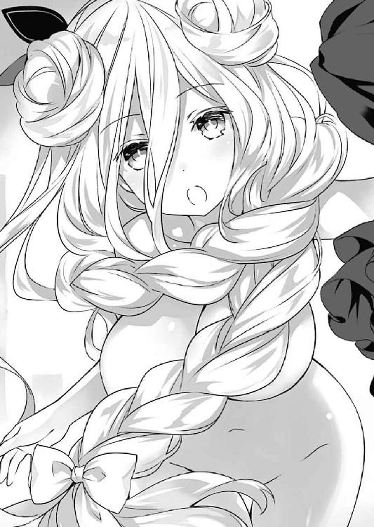
しかし。
「......ふむん？」
ブラウスのボタンを留めようとしたところで、六喰が眉根を寄せた。どうも、サイズが合わないらしい。
「主様、これは駄目じゃ。胸がくるしい」
『............』
六喰が困ったように言うと、右耳のインカムから沈黙が聞こえてきた。......『沈黙が聞こえる』だなんておかしな表現であることは重々承知しているのだが、実際そう感じ取れてしまったのだから仕方がない。何というのだろうか、琴里が、言葉にならない感情を必死に抑え込んでいるような様子だった。
「や、だから......それをそのまま着るんじゃなくて、精霊だったら見た服を霊力で再現できるだろ？」
「おお、そういうことじゃったか」
士道が顔を背けながら言うと、六喰は服を脱ぎ捨て、もう一度手を打ち鳴らす。
すると六喰の身体がぼんやりと輝き、その光が衣服の形を取っていった。ちょうど、琴里の服と同じデザインで──サイズが六喰の身体にぴったりとあったものに。
「むん。これならば快適じゃ」
六喰が満足げに言って、ニコッと笑う。インカムから、腑に落ちないといった様子の声が聞こえてきた。
『......え？ 最初からそれやればよかったわよね。なんで一回着たの？ ねえ』
「あ、あはは......ま、まあとにかく、行くか、六喰」
「むん。そうじゃの」
士道が乾いた笑いを浮かべながら促すと、六喰は素直にうなずいてきた。
そして、「むん」と手を差し出してくる。まるで、エスコートを所望するお嬢様のように。
「ええと、これは......」
士道は一瞬思案を巡らせたのち、執事のように礼をしてその手を取った。
「参りましょうか、お嬢様」
「むん、ふふん♪」
すると六喰が、やけに上機嫌そうに笑顔を浮かべる。
そこまで喜ばれると悪い気はしない。士道は六喰の手を引きながら、五河家を出、街へ向かって歩いていった。
──それからおよそ六時間。士道は六喰を連れて、〈ラタトスク〉のサポートを受けながら天宮市を練り歩いた。
デートコースはオーソドックスなものである。街並みを散策し、気になった店に立ち寄り、食事をし、六喰が気になるといった美術館に入り──といった調子だ。
傾向として、六喰は賑やかな場所よりも静かなところが、そして洋食よりも和食が好きで、装飾品なども古式ゆかしいものを好むことがわかった。アクセサリーショップで何か欲しいものはあるかと尋ねたところ、向かいの小物屋に並んだ蒔絵の扇子を指さされたときは、さすがに士道も驚いてしまった。顔立ちは幼いくらいだというのに、なかなかに渋い趣味である。
そして時刻は午後七時。気の早い冬の太陽は既に街並みに隠れ、空には闇のカーテンが掛かっている。
一通りデートコースを堪能した士道と六喰は、人気のない公園で、二人並んでベンチに腰掛けていた。先ほど買った蒔絵の扇子をパタパタと扇ぎながら、六喰が上機嫌そうに鼻歌を歌っている。
『──いい感じね。今日一日で、六喰は士道に十分心を開いてる。封印可能域までもう一押しってところよ。あれだけ苦労したのは一体何だったのかしら。──気を抜かず、このまま一気に畳みかけましょう』
「あ、ああ......」
士道は無邪気にはしゃぐ六喰を横目で見ながら、躊躇いがちにうなずいた。
すると琴里もそんな士道の様子に気づいたのだろう。不思議そうに尋ねてくる。
『何、どうかしたの？』
「いや......確かに、六喰は凄く楽しそうだし、好感度も機嫌も上がってるならそれに越したことはないんだけど......ちょっと気になって」
『何がよ』
「ん......なんで、六喰は自分の心に鍵を掛けて、宇宙に一人でいたんだろう......って」
そう。士道の心に引っかかっていたのはそれだった。
確かに今の六喰は非常に楽しげであるし、琴里の話を聞く限り数値も順調に推移しているらしい。実際一日付き合ってみたものの、問題らしい問題は見受けられなかった。むしろ精霊の中では素直な部類だろう。
しかし、いや、だからこそ。
この六喰が心に鍵を掛けてしまった理由が、想像できなかったのである。
何も感じず、何も思わず、何も考えず。
世界との関わりを断ち、ただ石のように漂い続けることを選ぶに至った事由。
六喰には、士道が未だ覗いていない顔があるような気がしてならなかったのだ。
『それは......確かにね。でも、大事なのは昔の六喰じゃなくて、今の六喰でしょ？ 霊力封印のチャンスを逃す理由にはならないわよ』
「ああ......わかってる」
「──ふふふ」
と、士道が琴里と話し込んでしまっていると、不意に隣から六喰の笑い声が聞こえてきた。
「なるほどのう。主様が言うだけある。実に楽しい一日じゃった」
「はは......気に入ってもらえたなら何よりだ」
「ほむ。礼を言っておこう。確かにむくがあのまま空にいたなら、生涯味わうことのなかった楽しみじゃろう。いやしかし、むくにここまでしてくれるとは、さては主様──」
言って六喰が、不敵に目を細める。士道は自分の悩みが見透かされたような気分になって、逃げるように身体を反らした。
「え？ な、なんだ？」
「──むくのことが好きなのじゃろ？」
が。六喰がいたずらっぽい笑みを浮かべながら発した言葉は、士道の予想に反して実に可愛らしいものだった。あははと苦笑し、それに返す。
「......ああ、六喰のことは好きだし、守ってやりたいと思うよ」
「ふむむん、そうか、そうか。むくのことが好きか。ふむむん」
士道が言うと、六喰は扇子で口元を隠し、足をパタパタさせながら、大層嬉しそうに笑った。
そして身体を前に倒し、士道の顔を覗き込むようにして、桜の花びらのような唇を小さく動かしてくる。
「──むくも、主様のことが気に入ったのじゃ。好きじゃぞ、士道」
「......！ あ、ああ......」
士道は思わずドキッとして息を詰まらせた。......なんだろうか、背格好は小さいというのに、妙な妖艶さのある表情であった。
「そうではなかろ。......もう一度じゃ」
「え？ ああ──す、好きだよ、六喰」
六喰に促されるままに士道が言うと、六喰は満足げに笑みを作った。
「んふふ。そこまで言われては仕方がないの。──よかろ。主様が宇宙で申した件、考えてもよいぞ」
「！ 本当か？」
「むん。ま、霊力を失うという点だけは気に掛かるが......その分主様がむくを守ってくれるというのであれば、悪い気はせぬ」
六喰が指先をくるくると動かしながら言ってくる。士道は常に心に張っていた緊張の糸が微かに緩むのを感じた。
確かに六喰の過去は気にかかる。しかし、琴里の言うとおり大切なのは今の六喰なのだ。六喰が納得し、封印に応じてくれるのであれば、それに勝ることはないだろう。
だが、士道がほうと息を吐きかけた瞬間、六喰は上機嫌そうな調子のまま言葉を続けた。
「──ただ、もちろんあれじゃぞ？ むくと契る以上、昨日あの部屋にいたおなごたちとは金輪際会わぬと誓うのじゃぞ」
「ああ、わか──え？」
そのあまりに自然な調子に、士道は思わずうなずきそうになり......途中で首を傾げた。
「え？ な、なんて？」
「何を不思議そうな顔をしておるのじゃ。当然のことではないか。主様はむくのことが好きなのじゃろう？ むくも、主様のことが好きじゃ。ならば主様はむくに何をしても構わぬ。しかし、そこに別のおなごが入ってくるのはおかしな話じゃろう？」
至極当然のように、六喰が言ってくる。
いや、事実彼女はそれが当然だと思っているのだろう。実際、士道だって彼女が言っていることが理解できなくはない。
しかし、その考え方は、いわゆる婚姻関係に近いものであり──精霊が現れる度にその力を封印してきた士道にとっては、致命的な打撃となり得る一打だったのである。
「むん？ むくは何かおかしなことを言っておるか？」
「......いや、あの、ええと......」
澄み切った六喰の目に見つめられ、士道は思わず視線を逸らした。......精霊の力を封印できるのが士道のみである以上仕方のないことなのだが、こうして改めて言われると、精霊たちにもの凄く不誠実なことをしているような気分になってしまうのだった。
『ちょっと士道、何論破されてるのよ』
「す、すまん......ちょっと良心の呵責が......」
『あとにしてちょうだい。──とにかく、さすがにそれは承諾できないわ。噓を吐いて封印しても、あとでそれがバレたときの揺り戻しが怖いし......封印と婚姻は違うんだってことをちゃんと説明して、説得する方向でいくしかないわね』
「......だな」
士道は小さくうなずくと、軽く呼吸を整えてから六喰に向き直った。
「あのな、六喰。よく聞いてくれ。それはできないんだ」
「むん？ 主様は浮気性か？」
「............」
『いちいち傷つかないの』
琴里がやれやれといった調子で言ってくる。士道は気を取り直すようにコホンと咳払いをしてから続けた。
「前も言ったように、俺は、精霊みんなを救いたいと思ってるんだ。だから......これからもおまえみたいな精霊が現れたら力を封印しなきゃならない。それに──俺は、今まで封印してきた精霊たちのことも、六喰、おまえと同じくらい大好きなんだ。六喰にも、みんなと仲良くしてくれると嬉しいな」
「......ふむん」
士道が言うと、六喰はキョトンとした表情をして黙り込んだ。
そして数秒ののち、何かを思いついたようにポンと手を打つ。
「そうか、そうか、そういうことか。主様は優しいの」
「へ？」
六喰の反応がよくわからず、士道は目を丸くした。しかし六喰は、一人得心がいったというふうにこくこくとうなずいている。
「わかった。みなまで言うな。むくに任せておくがよい」
六喰はそう言うと、ベンチから軽やかに立ち上がり、美しい蒔絵の施された扇子をパチンと閉じて、口元にぴとりと触れさせた。
「──では、今宵はここでお別れじゃ。また近いうちに会おうぞ、主様」
そして六喰はそうとだけ残して、仄暗い道をトントンと走って行ってしまった。
「ちょ、六喰!?」
士道は慌てて六喰のあとを追った。だが、恐らく途中で〈封解主〉を使ったのだろう。六喰の小さな影を認めることはもう、できなかった。
「一体......何をしようっていうんだ......？」
頼りなげな街灯の光に照らされた道に立ち尽くしながら。
士道は六喰の残した不可解な言葉に、表情を困惑の色に染めた。
第八章 閉じられた記憶
「──ふん、ふん、ふむむん、むん♪」
夜闇の中。否──正しく言うのならば、星の海の中。
星宮六喰は、髪を中空に漂わせながらふわふわと浮遊していた。
頭上には無限に広がる黒の宙。眼下には巨大な青い星。
そう。六喰は士道と別れたあと、〈封解主〉で空間に『扉』を開け、再びこの死の空間に舞い戻ってきていたのである。
とはいえ、別に士道や地上が気に入らなかったわけではない。むしろ士道に連れ出された街はとても素敵な場所だったのだけれど──やはり一人で考え事をするには、一切の雑音がない宇宙がいいと判断したのである。
「しかし──」
六喰は小さく独り言を呟くと、目をぱちくりさせながら眼下の地球を見下ろした。
「美しいものじゃ。こんなものを常に目にしておきながら、何の感慨も覚えなんだとは──むくも勿体ないことをしていたものじゃの」
先日、士道に偽物の〈封解主〉を挿し入れられた胸元をさする。
「ふふ、士道には感謝をせねばならぬの」
六喰はそう言うと、身体を反らすように手足をぐぐっと伸ばした。
身体を動かすのが心地いい。否、それだけではない。風景が、吐息が、日の光が、料理の味が──久方ぶりに感じたあらゆる外的刺激が、快感でたまらなかった。
それこそ──
「......ふむん？」
と、そこで六喰は首を傾げた。
この世界にはこれほどまでに素敵なものが揃っているのに、なぜ自分は心に鍵などを掛けてしまったのだろうか、と思ったのである。
「むむむ......？」
腕と足を組み、その場でゆっくりと回転しながら悩むも、どうしても思い出せない。六喰はやがて諦めたように吐息した。
「まあ、よい」
そう。今はそれよりも──優先してやらねばならないことがあったのだ。
士道。五河士道。六喰の心に掛かっていた鍵を開け、六喰に虹色の世界をくれた男。
そして何より──六喰と相思相愛の、愛しい人。
「むん、ふん、楽しいのう。人に愛され愛するというのは、かくも楽しいものじゃったか」
士道のことを考えるだけで、心がふわふわしてきて、何とも幸せな気分になる。なるほど、確かにこれは士道の言っていた通りだった。
けれど、一つ小さな問題があった。
六喰の愛しい人は、如何せん優しすぎたのである。
「むくが、何とかしてやらねばの」
六喰はにっこりと微笑むと、虚空から巨大な鍵〈封解主〉を取り出した。
◇
──毎日が楽しくて仕方がなかった。
朝起きると、父と母、そして姉が、「おはよう」と言ってくれる。
目が覚めたとき、自分の家族がいることが、こんなにも素敵なことだなんて知らなかった。
そして、家族揃っての朝食。
でもその前に、もう一つ楽しみがあった。
姉が、髪を括ってくれるのだ。
（──の髪は、本当に綺麗だね）
姉は櫛で髪を梳きながら、よくそんなことを言ってくれた。
自分は大好きな姉に褒められたのが嬉しくて、誇らしくて、毎朝のその時間がたまらなく好きだった。
姉の指先は、長い髪をみるみるうちにお団子状に括っていった。ものの数分で、寝癖の付いたねぼすけさんが、可愛らしい女の子に変身する。初めてそれを体験したときは、姉のことが魔法使いに見えてしまったものだった。
興奮気味にそれを伝えると、姉は驚いたような顔をしてから微笑みを作り──また優しく、頭を撫でてくれた。
それから母の作ってくれた美味しい朝ご飯を食べて、「いってきます」「いってらっしゃい」と挨拶を交わし学校へ行く。
そうして学校から帰ったなら、母が「おかえりなさい」と出迎えてくれる。
ご飯を食べたら、星が好きな姉と一緒に、家の屋上で天体観測をするのが日課だった。
夏の暑い日などは、そこにビニールシートを敷いて、二人並んで寝転び、夜空を見上げるのだ。
姉は煌めく星々を一つ一つ指さし、その星の名前や星座の由来などを説明してくれた。
幼い自分はそれらを全て理解できていたわけではないのだけれど、熱心に話し込む姉の姿を見ているのが好きで、毎日のように屋上に上ったものだった。
やがて眠気が襲ってきて、うつらうつらとし始めると、姉が「話し過ぎちゃったね」と苦笑して、優しく髪を撫でてくれるのだ。
その感触に包まれるように、ゆっくりと眠りに落ちていくのが、好きだった。
そしてまた目が覚め──一日が始まる。
そんな当たり前の生活が、幸せでたまらなかった。
新しくできた父が、母が、姉が、愛しくてたまらなかった。
自分だけの家族。自分だけの空間。自分を愛してくれる人たち。自分が愛してもいい人たち。
そんな幸せな時間が、いつまでも続くものだと、幼い自分は信じてしまっていた。
けれど、そんな世界の終わりは、思ったよりもあっけなく訪れてしまった。
別に、大したことが起こったわけではない。事故でみんなが他界してしまったわけでもなければ、両親が離婚をして、家族が離ればなれになってしまったわけでもない。血の繫がった実の親が現れ、親権を主張してきたわけでもない。
──その日。
自分はその日をとても楽しみにしていた。何しろ、姉が自分を、天宮タワーに連れて行ってくれると約束してくれていたからだ。
ただ、その日、姉が学校の友だちを一緒に連れてきたのだ。
そう。ただ、それだけのこと。
別段特筆すべきこともない、ただの日常の一ページ。
だけれど自分には、それがどうしても許容できなかった。
だって、姉は、自分だけの姉のはずなのだ。
その約束は、自分だけのものだったはずなのだ。
姉は、自分だけが愛していい人のはずだったのだ。自分だけを愛してくれる人のはずだったのだ。
そんな姉が、自分の知らないところで、自分の知らない友人と遊んでいた。そしてその人が、自分と姉の領域に侵蝕してきた。
それを考えるだけで、心がぎゅうと引き絞られるような気がして、辛くて辛くて仕方がなかった。
自分はぐっと我慢をして、みんなでその日を楽しもうと頑張った。
けれど展望台で街の風景を眺めているとき、姉の友だちが自分にこう言ったのだ。
（ねえ、──ちゃん。随分髪長いけど、少し切った方がいいんじゃない？ ねえ、──もそう思うよね？）
そして、同意を求められた姉は、少し考える仕草を見せてからこう答えた。
（うーん......そうだね。ちょっと伸びすぎかな？ 今度切ってあげよっか？）
──別に、二人に悪意があったわけではないだろう。
むしろ友だちも姉も、あまりに長い髪を揺らしながら歩く自分のことを気遣って言ってくれただけなのだ。
だが自分はその言葉に、心臓が握りつぶされるかのようなショックを受け、一人タワーを飛びだしてしまった。
──悲しくて悲しくて仕方がなかった。
姉が、綺麗と言ってくれたのに。
姉が、好きと言ってくれたのに。
友だちの何気ない一言で、姉は自分の言葉を曲げてしまった。
つまり姉は、自分よりも友だちの方が大事なのだ。もしも自分と友だち、どちらか一人を選ばねばならない状況になったなら、友だちを選んでしまうのだ。
そんなことを考えると、不安は布地に落ちた墨の如く、どんどんと広がっていった。
父も母も姉も、自分のことを一番に愛してくれるものだと、何の根拠もなく思っていた。
けれど三人は、自分を引き取るずっと前からこの世界で生きており──それぞれが自分の知らない人間関係を持っているのだ。
そして父も、母も、姉も、自分の知らない場所で、知らない誰かと、言葉を交わし、笑い合っている......。
（う......ぉ、あ......っ）
その事実を認識しただけで、胸から嘔吐感がせり上がってくる。
愛することを、そして愛されることを知った心は、その感情が「悲しい」ことだと、ようやく認めてくれた。
すると、そのとき──
◇
「............う」
六喰とのデートから一晩。
士道は、いつもより少々早い目覚めを迎えた。
別に特別な用事があったわけでも、アラームをかけていたわけでもない。昨晩、六喰が去り際に残した言葉が気になってしまい、あまり眠れなかったのである。
加えて言うなら、夢見の悪さもその一因だろう。
先日、宇宙から落ちてきたあとに見たのと似たような、なんとももの悲しい夢。
まるで自分の身にかつて起こったことをなぞっているかのような、生々しい悪夢である。
......まあ、士道の場合新たにできたのは姉ではなく可愛い妹だったのだけれど。
「......んー」
寝不足のため体調は芳しくないが、かといってもう一度眠れるかと言われると、それも難しそうである。
どうせ眠れないのならば、少々早いが朝食の準備を済ませてしまうことにしよう。士道は時計を一瞥して時刻を確かめると、大きなあくびをしながらベッドから這い出た。
のったりとした足取りで一階に下りていき、顔を洗ってから着替えを済ませる。そして男の戦闘服・エプロンを装着して、手慣れた調子で調理に入った。
そして、どれくらい時間が経った頃だろうか。焼き魚が香ばしい香りを漂わせ始めた辺りで、二階からペタペタという音が聞こえてきた。
どうやら琴里も起きたようだ。昨夜は六喰の探索と観測データの処理のため、遅くまで〈フラクシナス〉に残って仕事をしていた彼女である。身体に残った疲労は士道よりも大きいはずだった。
琴里が目をごしごし擦りながら、ゾンビのような体勢でのったのったと階段を下りてくる。士道はそんな様子に苦笑しながら、小さく手を上げて声を発した。
「おう、おはよう琴里」
「んー......おあよ......」
と。
琴里はそう言いかけたかと思うと、不意に何かに気づいたようにカッと目を見開き──
「きゃぁぁぁぁぁぁぁぁぁぁぁッ!?」
そんな、大きな悲鳴を上げてきた。
「......!? な、なんだ......？」
士道は思わず耳を塞ぎながら、困惑した表情を琴里に向けた。
「どうしたんだよ琴里、何かあったか？」
しかし琴里は、そんな士道の問いに答える様子もなく、キッと視線を鋭くして士道を睨み付けてきた。
そして、警戒の色に染まった声を響かせてくる。
「あなた一体誰よ！ なんでうちの中にいるの!?」
その、予想外に過ぎる言葉に。
「....................................は？」
士道は目を点にしてそう返すしかなかった。
しかしそれも当然である。誰、と言われても困るし、なんでうちの中に、と言われてもどう反応したらよいのかわからない。何しろこちらは一〇年以上この家に住んでいるわけであるし、血が繫がっていないとはいえ兄妹関係なのである。
「......ええと、何言ってるんだ、琴里？」
士道が頰をかきながらそちらに向かって一歩足を踏み出すと、琴里がこちらを牽制するように叫びを上げた。
「近寄らないで！ 警察を呼ぶわよ！」
「え、えぇ......」
士道は困惑しながら額に浮き出た汗を拭った。
一体琴里はどうしてしまったのだろうか。冗談にしては真に迫りすぎている気がする。となると──
と、士道が考えを巡らせていると、琴里が焦れたように、近くにあった置物を手に取った。
「この......何ボーッとしてるのよ！ 出ていきなさいって言ってるで......しょッ！」
「うわっ!?」
琴里が手にした置物を思い切り投げてくる。士道は慌てて身を逸らし、それを避けた。
「お、おい、危ないじゃ──」
「うっさい！ 早く出ていってよ！」
ヒステリックに絶叫し、琴里が次なる投擲武器を手にする。
琴里に何があったのかはわからなかったが、とにかく話が通じないことだけは理解できた。慌てて鞄とブレザーを手に取り、這々の体でその場から逃げ出す。
「ひ、ひえぇっ！」
「あっ！ こら、待ちなさいっ！」
出ていけと言ったと思ったら、今度は待ちなさいときたものだ。とはいえ、悠長にそれを指摘できるような状況でもない。士道は玄関に置いてあった靴を拾い上げながら、裸足で家の外へと駆け出した。
「はぁ......、はぁ......、はぁ......っ」
そしてしばらく道を走ったのち、琴里の追撃がないことを確かめてから大きく息を吐く。次いで簡単に呼吸を整え、エプロンを外して、回収してきた通学セットを身に着けていった。
「ったく......いくら睡眠不足だからって寝惚けすぎだろ。お兄ちゃん泣いちゃうぞ」
士道は頭をぽりぽりかきながら独り言を呟くと、ちらと今走ってきた道を見た。
今は一月。正直ブレザー一枚では非常に寒い。できることなら、一旦家に戻って防寒具を取ってきたいところであった。
とはいえ、まだ琴里が寝惚けている可能性がある以上、今五河家に戻るのは得策ではあるまい。さすがに警察など呼びはしないだろうが、大声でも出されてしまっては、またご近所にあらぬ噂を立てられてしまうかもしれなかった。
人の噂も七十五日とはいうけれど、最近の士道は、その七十五日が過ぎる前に新たな噂が投下されるという悪循環を起こしてしまっていたのである。可能な限り悪評が広まるのは避けたかった。
「仕方ない......学校に行くか」
士道は諦めたように言うと、寒風に手をさすりながら、とぼとぼと通学路を進んでいった。
そして、幾度かくしゃみをしながら歩くこと数十分。都立来禅高校に辿り着く。
靴を上履きに履き替え、教室へ。士道は慣れた調子で机に鞄を掛けると、椅子を引いて腰を落ち着けた。
「............、ん？」
と、温かい教室で一息吐いた士道は、そこで妙な違和感を覚えた。
間違えて別の教室に入ってしまった感じ......とでも言おうか。教室にいたクラスメートたちが、時折不思議そうに士道の方を見たり、ひそひそ話をしたりしているのである。
「なんだ......？」
士道は首を捻りながら自分の格好を見下ろした。もしや、朝慌ただしく家を追い出されたものだから、パジャマのズボンを穿いてきてしまったり、靴下が左右別だったりしたのではないかと思ったのだ。
だが見たところ、別段おかしなところはない。念のため髪も触ってみたが、個性的な寝癖なども付いていなかった。
「んー......」
もしかしたら、この寒空の下、コートも着ずにカタカタ震えながら登校してきたのを不思議に思われたのかもしれない。士道はとりあえずそう結論づけると、筆記用具とノートを鞄から机に移し始めた。
「ほーんほほーん、ほほほーふげっほげっほげっほ」
するとそこに、奇妙な鼻歌を歌いながら（途中で咳き込んでいたが）、髪をワックスで逆立てた少年がやってきた。──士道の悪友・殿町宏人である。
「おう、殿町」
「うん？ ああ、おはよーさん」
士道が席を立ちながら名を呼ぶと、殿町もまた、軽い調子で返してきた。
だが。
「久しぶりじゃね？ どれくらいぶりだっけ。......てかえっとごめん、ノリで挨拶したわ。誰でしたっけすみません」
言葉の途中で段々と不安げな顔になっていったかと思うと、殿町がすまなそうに頭を下げてくる。士道は啞然として目を見開いた。
「は？」
「いやホントごめんって。......あ、もしかしてこの前のカラオケにいた？ ほらあのとき人数多かったから覚えきれなくてさー」
「......いやいや、何言ってんだよ殿町。俺だよ、五河士道だよ。ずっと同じクラスだったじゃないか」
士道が眉根を寄せながら言うと、今度は殿町が「は？」と不思議そうな顔をした。
「同じクラス......？ だっけ？」
「殿町......？」
殿町の反応に、士道は眉をひそめた。確かに殿町は、たまに意図のよくわからない微妙な冗談を言うこともあったが、今の彼の表情は、いつものそれとは風情が異なっているように思われたのだ。そう。まるで本当に、士道のことを覚えていないかのような。
士道が知らぬ間に殿町の演技力が上がったというのでなければ、これは......
士道は周囲を見回すと、教室にいた別のクラスメートに声をかけた。
「なあ、山吹、葉桜、藤袴」
「はえ？」
「ふえ？」
「ほえ？」
士道の声に反応するように、近くで話し込んでいた女子三人組が顔を向けてくる。制服を着崩した長身の少女と、特徴がないのが特徴的な中肉中背の少女、そして眼鏡をかけた小柄な少女。二年四組の名物トリオ、亜衣麻衣美衣である。
「殿町がまたふざけてるんだが......おまえらは、俺のこと知ってるよな？」
士道が言うと、三人はキョトンとした表情を作ってから顔を見合わせた。
「......えっと、誰？」
「うわ、もしかしてナンパ？ 古典的ー」
「マジかついにモテ期きちゃったかー。うんで誰狙い？ 誰狙い？」
亜衣麻衣美衣がにわかに色めき立ち、わいわいと盛り上がり始める。
しかしそれに反して、士道はすうっと血の気が引くかのような感覚を覚えた。
「俺を......知らない......？」
乾いた声を発しながら、辺りを見回す。誰も、殿町や亜衣麻衣美衣に異を唱えようとはしない。それどころか、彼らと同様に士道を見て不思議そうに首を傾げる生徒までいる。
明らかな異常事態。士道が未だ夢の中にいるか、さもなくばクラスメート全員が結託して士道にイタズラを仕掛けている......といった事情でもない限り説明がつかない。見知ったクラスメートたちばかりの教室が、まるで知らない空間のように思えた。
と──
「おお、おはようだ、皆！」
「おはよう」
士道が困惑していると、教室に二人の少女が入ってきた。──十香と、折紙である。
「......！」
士道はその姿を認めると同時、縋るような思いで二人に駆け寄っていった。
「な、なあ！ 十香、折紙！」
「おお!? な、なんだ一体。驚くではないか」
「............」
十香がオーバーリアクション気味に驚き、折紙が表情を崩さぬまま顔を向けてくる。
「あ、ああ......すまん。でも、聞いてくれ。クラスのみんながおかしいんだ。いや......ここだけじゃない。もしかしたら琴里も寝惚けてたんじゃなくて──」
「む......？」
が。士道が訴えかけるも、十香は困惑したように眉をひそめるのみだった。
そんな反応に、士道は心臓がきゅうと引き絞られるかのような錯覚を覚えた。
動悸が激しくなり、全身から汗が噴き出す。強烈な目眩にも似た感覚が全身を襲い、今にもその場に倒れ込んでしまいそうになる。恐ろしく嫌な予感が肺腑を満たしていく。
しかし、十香と折紙はそんな士道の様子に気づくこともなく、無慈悲に過ぎる言葉を継いだ。
「すまんが、何を言っているのだ......？」
「あなたは一体誰？」
「────っ」
二人から発された言葉に。
士道は、ただ呆然とその場に立ち尽くすしかなかった。
◇
時刻は一三時。とうに昇り切っているはずの太陽は、分厚い雲によって覆い隠され、その暖気を地上に届けることができないでいた。
時折吹く風はひどく冷たく、士道の体温を少しずつ奪っていく。士道は大きなくしゃみを一つし、鼻をすすりながら肩をさすった。
士道が今いるのは来禅高校の教室ではなく、五河家のすぐ隣にあるマンションの前──正確に言うのなら、その正面入り口がよく見える、向かいの道路だった。電信柱の陰に身を隠しながら、ジッとマンションの方を注視する。
「......！」
と、どれくらい待った頃だろうか、マンションの入り口が開き、二人の小柄な少女が歩み出てくる。一人は可愛らしい帽子とモコモコしたコートを身につけ、左手にウサギのパペットを装着した優しげな少女、もう一人は、地味な色のコートを着込み、マフラーをぐるぐるに巻いた、やたら不機嫌そうな目をした少女であった。──マンションに住む精霊、四糸乃と七罪である。
「......うわ、寒っ。ていうか息超白っ」
「ふふ......本当ですね。はぁーっ」
『うひゃー！ ホワイトブレース！』
七罪の言葉に合わせるように四糸乃が白い息を吐き、それを浴びたウサギのパペット『よしのん』が身を捩る。四糸乃が楽しげにくすくすと笑った。
しかしそんな四糸乃とは対照的に、七罪は難しげ......というか、どこか申し訳なさそうに眉を歪めた。
「......あの、四糸乃？ やっぱわざわざ買い物付き合ってくれなくても大丈夫よ？ ホント大した用じゃないし、四糸乃に風邪なんてひかせたらアレだし......」
「そんな、大丈夫ですよ。寒いのは得意ですから。それに──」
四糸乃はそう言うと、七罪の手を握り、そのまま自分のコートのポケットに手を差し入れた。
「うひぁっ!?」
突然の四糸乃の行動に驚いたのか、七罪が裏返った声を上げる。
四糸乃はほんのりと頰を染めながら、いたずらっぽく微笑んだ。
「えへへ......こうすれば、あったかいです」
「う、うん......ソウダネ......」
七罪が、四糸乃の一〇〇倍くらい頰を赤くしながら、カタコトで応える。その一瞬で発汗量が増したのか、空いていた方の手で、念入りに巻かれたマフラーをぐいと引っ張り、首元に風を送り込み始めた。
「......はは」
なんとも微笑ましい光景に、思わず口元を緩めてしまう。
だが、士道はすぐに思い直した。そう。今はそんなことをしている場合ではないのだ。
士道は気を取り直すように頰を張ると、電信柱の陰から飛び出し、二人の前に躍り出た。
そして、心の中に渦巻く不安感をどうにか抑え込みながら、叫びを上げる。
「四糸乃、七罪！ それによしのん！」
「え......っ？」
「な、なによ、いきなり......」
『うわっはー！ びっくりー！』
突然現れた士道に、二人と一匹が驚いた顔を作る。士道はごくりと息を吞んでから言葉を続けた。
「なあ、みんな、俺のことを覚えてるよな？」
グッと拳を握り、祈るような調子で訴えかける。だが──
「え、えっと......すみません、わかりません」
「......意味わかんない。いこ、四糸乃、よしのん」
『あっははー、ごめんねおにーさん。別当たってー』
結果は、今までと同じだった。四糸乃と七罪が訝しげな顔をしたのち、少し早足になって士道の脇をすり抜けていく。
「あ......」
士道はそんな二人に手を伸ばすも......そこから一歩も動けないまま、その場に膝を突いた。
「噓だろ......一体何がどうなってるんだよ......」
そして、呆然と唇から言葉をこぼす。
十香と折紙に自分のことを覚えていないと言われたあと、得体の知れない恐怖感と途方もない焦燥感にかられた士道は、他の精霊たちのもとを駆け回り、自分のことを覚えているかを聞いて回った。
隣の三組にいた耶俱矢と夕弦には十香たちと同じく怪訝そうな顔を返され、市内の高層マンションに住む二亜には不躾なファンと勘違いされて門前払いを食らい──美九に至っては、電話口で士道の声を聞いただけで、『きゃぁぁぁぁッ!? 知らない男の人から電話がぁぁぁぁぁッ!?』と叫ばれ、それきりコンタクトが取れなくなっていた。
それらを経て、最後の希望に縋るような気持ちで四糸乃と七罪を待っていたのだが......結果は見ての通りだった。
士道は力なくうなだれると、髪をくしゃくしゃと搔き毟った。
昨日までと何が変わったわけでもない。いつも通りの街。いつも通りの人々。目に見える景色は何一つ士道の記憶と違わなかった。
しかしただ一つ。──精霊たちや士道の友人たちが、皆、士道のことを、忘れてしまっている。たったその一点が違うだけで、士道はまるでパラレルワールドにでも迷い込んでしまったかのような違和感と不安感を覚えていた。
「くそ......意味わかんねぇ。何なんだよこれ。誰か、誰か俺を知っているやつはいないのか......？」
士道は額に手を当てながら考えを巡らせた。しかし、あと残っている人物といえば、どこにいるかもわからない『最悪の精霊』時崎狂三、士道たちの仇敵であるＤＥＭのウェストコットやエレン、それに、士道の前から姿を眩ませたまま行方がわからなくなっている──
「────」
と。
士道はそこで、小さく息を詰まらせた。
頭の中に浮かんだ名前。震える唇から、それをこぼす。
「六、喰......」
そう。六喰。星宮六喰。鍵の天使〈封解主〉を持ち、万物を『閉じる』ことのできる精霊。
その力が効果を及ぼす範囲は、目に見えるものに限らない。実際六喰はそれを使って、自らの心を『閉じて』いた。
士道がその名に引っかかりを覚えた理由。それは、六喰ならば士道のことを覚えているかもしれない──という希望からではなかった。
（わかった。みなまで言うな。むくに任せておくがよい）
昨日、六喰が別れ際に口にした言葉が頭の中に甦る。
あのときはそれが何を意味するのかわからなかったが、今士道の身に降りかかった異常な現象が、その言葉と頭の中でカチリと嚙み合った。
不可視の『心』にさえ鍵を掛け、対象の感情を封印してしまう鍵の天使〈封解主〉。
もしかしたらその力は、人の『記憶』にさえ作用するのではないかと思ってしまったのである。
「まさか、おまえの仕業なのか、六喰......!?」
士道は口元を押さえながら表情を戦慄の色に染めた。
無論、それはただの憶測に過ぎない。証拠もなければ裏付けもない、士道の想像の範囲を出ない事柄である。
しかし、このような異常な状況が自然発生的に起こるはずがないし、それを可能とする精霊を考えたとき、六喰の名が挙がってしまうのもまた、事実だった。
「............」
士道は無言のまま顔を上げた。そして塀に手を突きながらその場に立ち上がり、細く息を吐く。
確かに、異世界に迷い込んだような異常事態。相談をしようにも、その相手が皆士道のことを忘れてしまっているという最悪の状況だ。事実、士道は今の今まで途方に暮れてしまっていた。
だが、頭の中に芽生えた一つの仮説は、士道を立ち上がらせるのに十分な力を持っていた。
言うまでもなく六喰の力は強大である。しかしまったく得体の知れない異常の中に一人放置されるのと、その事態を引き起こした犯人に目算がついているのとでは、天と地ほどの差があった。
それはそうだ。もしも本当に六喰が〈封解主〉の力で皆の記憶に鍵を掛けているのだとしたら──
「──〈贋造魔女〉」
士道は辺りの様子を窺い、人目が無いことを確認してから目を閉じ、その天使の名を呼んだ。
その呼びかけに応じ、士道の手の中に、箒のような形をした天使が顕現する。士道はすうっと息を吸いながら意識を集中させ、再び唇を動かした。
「【千変万化鏡】......！」
士道の言葉に応ずるように、〈贋造魔女〉が銀色に輝き、その姿を粘土のようにぐにゃりと変えていく。
数秒ののち。そこには、巨大な鍵の形をした錫杖が存在していた。
そう。士道は〈封解主〉を複製し、〈封解主〉で『閉じ』られた六喰の心の鍵を開いてみせた。
天使は宿主の願いに応えてくれる。もしも彼女らが士道のことを忘れてしまっている原因が〈封解主〉の力によるものだとするのなら、同じ方法で『記憶』の鍵を開けられるのではないかと考えたのである。
──が。
「え......？」
士道は偽の〈封解主〉を握った状態のまま身体を硬直させ、呆然とした声を発した。
しかし、それも当然だ。
何しろ、士道の握る偽の〈封解主〉のすぐ横の空間に小さな『扉』が生じ、そこから巨大な鍵の先端部が現れて、偽の〈封解主〉に突き刺さっていたのだから。
「こ、これは──」
「──【閉】」
士道が驚愕に目を見開いていると、どこからかそんな声が聞こえ、カチリ、と音を立てて鍵が回された。
瞬間、士道が握った偽の〈封解主〉が淡く輝き、もとの〈贋造魔女〉の姿に戻ったのち、光の粒子となって空気に溶け消えてしまう。
「あ──」
士道は目を見開きながら、何もなくなってしまった手のひらをジッと見つめた。
そして、未だ虚空に浮かんだ鍵の先端に視線を移し、震える声を発する。
「み、〈封解主〉......」
するとその声に応ずるように、空間に開いた『扉』がどんどん大きくなっていき──
やがてそこから、一人の少女がひょいと飛び出てきた。
首元にくるりと巻かれた金髪に、琴里のそれと同じデザインの服を纏った、小柄な少女。
──星宮六喰が、現れた。
「六喰......っ」
「むふふん、むくの鍵を開けた主様であれば気づくと思っておったぞ。さすがじゃの」
言って、六喰がニコリと微笑む。士道はその言葉に戦慄を覚えた。
要は六喰は、士道が〈贋造魔女〉を〈封解主〉に変化させ、皆の記憶の鍵を開けようとするタイミングを見計らっていたのだ。
そしてその瞬間、本物の〈封解主〉で偽の〈封解主〉の力を『閉じる』。
理由など考えるまでもない。──士道の持つ解錠の力を封じ、精霊たちの記憶の鍵を開けさせないようにするためだ。
そしてその言動は、士道の仮説が正しかったことを、この上ない形で立証していた。
「六喰......やっぱり、おまえがみんなの記憶を！」
「むん、そうじゃ。すごいじゃろう」
六喰が得意げに腰に手を当て、胸を反らす。士道は眉の間に深い皺を刻みながら叫びを上げた。
「なんで！ 一体なんでこんなことを！」
「なんで？ ふむん。異なことを聞くのう」
六喰はキョトンとした顔を作ってから、屈託なく笑った。
「こうすれば、むくと主様は二人きりじゃ。もう何も心配はいらぬぞ。心置きなくむくを愛でるがよい」
「な......!?」
士道は戦慄に息を詰まらせた。
目の前の少女が発した言葉と、その愛らしい表情の差異に、一瞬頭が混乱する。
士道とて、幾人もの精霊を封印してきた男。今まで幾度となく危機や修羅場に遭遇してきたし、強大な敵や凄まじい悪意にも晒されてきた。
だが──違う。
目の前にいる少女は、それらとは全く異質な存在だった。
『最悪の精霊』時崎狂三は恐ろしかった。彼女の殺意と狂気を向けられたとき、士道は一歩も動けなくなってしまった。
同様に、ＤＥＭのウェストコットやエレンと対したときも、士道は強い恐怖を覚えた。人を人とも思わない圧倒的な悪意の前に、士道は圧されそうになってしまった。
しかし、六喰には殺意も悪意もない。
彼女の表情から覗くのは──純粋な善意と、愛情のみだった。
「のう、主様」
六喰が、穏やかな笑みを浮かべながら唇を動かす。
「むくのことが、好きなのじゃろう？」
あまりに可愛らしい、あまりに無垢なその言葉に。
しかし士道は、答えることができなかった。
◇
「あぁーん！ お久しぶりです皆さぁぁぁん！ 離ればなれになっていた間、皆さんのことを忘れたことは片時もありませんでしたぁぁぁぁっ！」
休日の昼。たったったった......と廊下の方から足音が聞こえてきたかと思うと、そんな叫びを上げながら、五河家のリビングに美九が飛び込んできた。
「ひ──ッ」
その登場に七罪がビクッと肩を揺らし、座っていたソファから転げるように逃げて物陰に隠れる。
しかし美九は、いち早く動いた七罪に反応してか、ネズミを見つけた猫のような挙動で彼女に飛びついた。
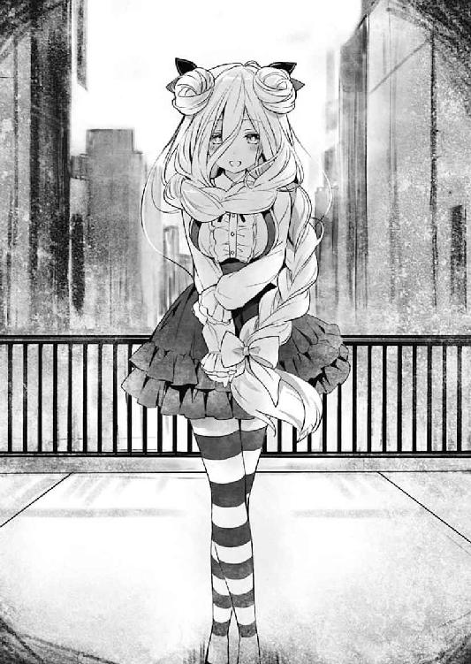
「ニャーッ！」
「ギャーッ！」
美九に情熱的な抱擁（うつくしいことば）をされた七罪が、ジタバタと足を動かしながら悶える。
そんな光景を見ながら、家主である琴里ははあと息を吐いた。
「まったく、相変わらず騒がしいんだから。離ればなれって、つい一昨日も会ったじゃない」
「ふえふえ、ははひにほってはえいほうほほほほへるほうなひかんへした」
「......何言ってるかわかんないから、七罪のお腹から顔上げてからにしてくれる？」
琴里が半眼を作りながら言うと、美九は「ぷはぁっ！」と満足げに顔を上げた。
「補給完了ですー！ これで今日の疲れもサッパリですねぇー！」
心なしか、先ほどより肌がつやつやしている気がする。反して、お腹に大きなキスマークを付けられた七罪は全体的にカッサカサになっていた。衝撃！ 天宮市の住宅街に吸血鬼を見た！
琴里はやれやれと肩をすくめると、リビングの方に視線を移した。
五河家のリビングには今、精霊たちが勢揃いしていた。ソファに座る十香に折紙、テレビを占拠してゲームに興じる八舞姉妹に、美九に精気を吸われてしまった七罪を介抱する四糸乃、あとはまあ、テーブルに陣取って真っ白なノートに向かいながら頭をガリガリとかく二亜。見たところ、漫画のネームが難航しているらしい。
別に招集をかけているわけでもないのだが、居心地がいいのか、皆休日になると自然とこの家に集まってくるのである。
と、そこでテレビの方から、何やら派手な音が響いてくる。八舞姉妹の勝敗が決したようだ。耶俱矢が頭を抱え、夕弦が得意げに胸を反らす。
「あーっ！ 惜っしい！ そこそんな!? あー！」
「勝利。危ないところでしたが、夕弦の勝ちです。昼食のおかずトレード権はいただきです」
「うぐぅぅぅっ！」
どうやら賭けをしていたらしい。耶俱矢が悔しそうに床を叩く。琴里ははあと息を吐きながら声を上げた。
「勝負に口出すつもりはないけど、ちゃんとバランスよく食べないと身体に悪いわよ」
言いながら、ちらと時計を見る。一二時。二人の言うとおり、もう昼食時である。
「......ん？」
そこまで考えたところで、琴里は首を捻った。いつもならこの時間には、食卓に料理が並んでいたと思うのだが......今日はまだ昼食の準備ができていなかったのだ。
「あれ？ おかしいわね、私何も......って、そもそも私いつも料理してたっけ？」
何やら不思議な感覚に眉根を寄せる。すると四糸乃が、七罪の背中をさすりながら心配そうな目を向けてきた。
「どうかしましたか、琴里さん」
「え？ ああ、いや......なんでもないわ。そろそろお腹空いてきたし、今日はピザでも頼みましょうか」
誤魔化すように琴里が言うと、八舞姉妹がにわかに色めき立った。
「ホント!? じゃあ我は望む不死鳥の狂宴！」
「解説。耶俱矢は照り焼きチキンのピザがいいそうです」
「そうそれ！ ふっふー、しかもピザってことはおかずとか関係ないもんねー！ 残念だったわね夕弦！」
「否定。トレード権は構わず効果を発揮します。耶俱矢のピザの具と、夕弦のピザの耳を交換してあげます」
「耳!?」
「慈悲。せめてもの情けです。食べるところが少ないクリスピー生地ではなく、ふっくらパン生地にしてあげましょう」
夕弦がわざとらしいまでに優しげな声で言う。耶俱矢が「人でなしー！」と叫びを上げた。夕弦は「当然。精霊ですから」と返した。
まあ、夕弦のことである。ひとしきり耶俱矢が悔しがるのを観察したら、ちゃんと耶俱矢にも具の乗ったピザを食べさせてあげるだろう。琴里は肩をすくめると、注文をするため携帯電話を手に取った。
「......？」
と、琴里はそこで違和感を覚え、ソファに腰掛けた十香の方を見やった。
とはいえ、別段十香が何かおかしなことをしているというわけではない。何やら難しげな顔で腕組みしているだけだ。
しかし、だからこそそれは異常だったのである。──そう。ピザを頼むというのに、十香がリクエストはおろか、歓声さえ上げないだなんて。
「と、十香。どうかしたの？ 体調が悪いなら横になる？」
「......、──ぬ？」
琴里が問うと、十香は数秒の間を置いてからぴくりと眉を動かした。
「ああ......すまん。少し考え事をしていた」
「考え事......？ 十香が？ ピザより？ ......っていや、そういうわけじゃなくて」
無意識のうちに、失礼なことを口走ってしまう。琴里は慌てて訂正した。
しかし十香は特に気にする様子もなく──というか他にもっと気になることがあるといった様子で、むむぅと唸るのみだった。
「何かあったの？ 十香がそんなに考え込むなんて」
「む......大したことではないのだが、昨日学校で妙な男に会ってな」
「妙な男？」
「うむ。知らない男が私たちの教室にいて、私と折紙の名を呼んできたのだ。だが、私と折紙がおまえのことを知らないと言うと、何やら悲しそうな顔をして教室を出て行ってしまってな......」
「何よそれ。十香たちのファン？ 確かに変な話だけど、そこまで気にするようなことじゃあ......」
そこまで言いかけて、琴里は「あ」と眉の端を動かした。──十香の話した男に、心当たりがあったのである。
「どうかしましたかー？」
琴里の様子に気づいたのだろう、美九が不思議そうに問うてくる。琴里はあごに手を当てながら返した。
「......そういえば、私も昨日、似たような男に会ったわね。朝起きてきたら、見知らぬ男がキッチンにいて、朝食の用意をしてたの」
「ええっ!? 何ですかそれー！ ホラーじゃないですかぁー！ だ、大丈夫だったんですか琴里さん！」
「ええ、すぐに追い出したわ。〈フラクシナス〉に警備強化を要請しておいたから問題ないとは思うけど......」
と、琴里が言ったところで、今度は美九が「ああっ！」と手を打った。
「何、どうしたのよ美九」
「そ、そういえば私もありましたー！ 昨日突然電話がかかってきたんですよー！ そしたらいきなり知らない男の人の声がして、驚いて切っちゃいましたー！ しかも着信画面をよく見てみたら、『だーりん』って書いてあったんですよぉ!? 登録した覚えもないのに怖すぎですー！」
するとそれらの話を聞いた精霊たちが、皆思い当たることがあるといった様子で表情をぴくりと動かした。
「ねえ夕弦、それってもしかしてあいつのことじゃない？」
「回想。夕弦たちも会いました。ホームルーム前に突然教室に入ってきて、『俺のこと覚えてるよな!?』と熱烈にアピールしてきた男性に」
「......あー、そういやあたしのとこにもきたかも。こちとら徹夜明けだってのに、いきなりピンポンピンポンチャイム鳴らしてくれちゃって。あったま来たから追い返しちゃった」
「！ そ、そういえば私と七罪さんも、昨日出かけるとき、知らない男の人に声をかけられました......」
「......あー、うん、あったあった。しかも後つけてきたの。何だったのかしらあいつ。やけに思い詰めてた感じだったけど......」
四糸乃に介抱され、ようやく喋れるくらいに回復した七罪が半眼を作りながらぼやくように言う。
皆の証言に、琴里は思わず眉をひそめた。
「私たち全員の前にあの男が......？ いえ、もちろん全部が同一人物かどうかはわからないけど......何も関係ないって考えるのは楽観的すぎるわね」
無論ただの変質者という可能性もあったが、もしかしたら、ＤＥＭの工作員かもしれない。
あの男の狙いが何かはわからなかったが、ここにいるのは皆、災害レベルの力を持つ精霊ばかりである。警戒をするに越したことはないだろう。
「しばらくの間、みんなの警備を強化するよう要請しておくわ。何かおかしなことがあったら、すぐに報せてちょうだい」
「わ、わかりました......」
「了解ですー！ いつでも連絡しますー！」
「......あー、警備もいいけど、ついでにアシもつけてくんない？ 今回マジきついんだよね。具体的には有能でちっこくて名前が『な』から始まる子がいい」
「......ねえ琴里、私改名したいんだけどどうすればいい？」
精霊たちがこくりとうなずいてくる。......まあ何人か余計な用件が混じっている気がしないでもなかったが、琴里はとりあえず気にしないことにした。
しかしそんな中、唯一返事を返してこない少女がいた。──折紙だ。
先ほどから一言も言葉を発さず、押し黙ったまま床を見つめている。普段から口数が少ない彼女ではあるけれど、いつものそれとは少々様子が違う気がした。顔を覗き込むようにしながら声を掛ける。
「折紙、大丈夫？」
「......問題ない。少し、頭が痛いだけ」
「問題あるじゃない......無理しないの。辛いようなら家まで送らせるから」
「......、お願い」
折紙にしては珍しく、どことなく弱々しい調子で言う。さすがに心配になって、琴里は折紙の隣に歩み寄ると、肩を貸すようにその手を取った。
「ほら、立てる？」
「......大丈──」
折紙は琴里の肩に手を掛け、立ち上がろうとした。だがその瞬間、折紙の身体から力が抜け、そのままバタンと前方に倒れ込んでしまった。
「折紙!?」
「な......！」
「だ、大丈夫ですかっ!?」
突然のことに、リビングに集まった精霊たちが驚愕の声を上げる。しかしそれも当然だ。他の誰かならまだしも、あの鉄の女折紙が倒れてしまったというのだから。
「く──」
琴里は息を詰まらせると、〈フラクシナス〉に応援を要請するため携帯電話に手を伸ばした。折紙の状態はわからなかったが、艦の医務室に運んだ方が救急車を呼ぶよりも早く、確実だ。
が、そんな琴里の手はコールボタンを押す寸前で止まった。
「............」
理由は単純。今し方倒れ伏した折紙が、何事もなかったかのようにむくりと起き上がったからだ。
「折紙......？ 無理に起き上がっちゃ駄目よ、何かあったらどうするの！」
琴里は慌てて折紙に声を掛けた。しかし折紙は、先ほどまでの体調の悪さが噓のように頭をブンブンと横に振ってみせた。
そして、琴里の目を真っ直ぐ見据えながら、声を発してくる。
「ううん──大丈夫です。心配かけちゃってすみません」
その、明らかに今までと違う口調で。
「............」
それを聞いて、琴里は頰にたらりと汗を垂らした。
「お、折紙？」
「はい、なんですか？」
「あの、一応聞くけど、あなた折紙よね？」
「えっ？ そうですよ。何言ってるんですか」
そう言って、折紙が苦笑する。その生気に溢れた表情に、精霊たちが震え上がった。
「ひ、ヒェ......ッ」
「戦慄。高熱ですか？ いえ、マスター折紙、まさか既に脳が......」
「誰かー！ 折紙さんをー！ 折紙さんを助けてくださぁぁぁぁぁいっ！」
「えっ、私の扱いそんな感じなんですか......？」
皆のオーバーリアクションに、折紙が力なく笑う。
しかし折紙は、すぐに思い直したように表情を険しくすると、皆を見回しながら唇を動かした。
「まあ......いいです。それより皆さん、今の話は本当ですか？ 本当に誰も──『彼』のことを覚えていないんですか？」
「え......？」
折紙の言葉に、琴里は眉根を寄せた。
「『彼』って......もしかして、私たちの前に現れた謎の男のこと？」
今話題に上っていた『彼』といえば、それくらいしか思い当たらない。琴里はあごに手を当てながらそう言った。
すると折紙が、力強く首肯してくる。
「その様子だと、本当にわからないみたいですね。やっぱり、これは六喰さんの......」
「六喰？」
折紙の口から漏れた名前に、琴里は首を傾げた。聞き覚えのない名前である。
しかし折紙は、琴里のそんな反応に驚いた様子で目を丸くしてきた。
「まさか、それも覚えてないんですか？ 宇宙にいた精霊さんですよ！ みんなで一緒に戦ったじゃないですか！」
「な、何言ってるのよ、折紙......」
琴里が訝しげに言うと、折紙は全てを察したように苦々しい顔を作った。
「......なるほど、周到ですね。彼だけでなく、自分に関する記憶も『閉じて』いったわけですか。確かにこれなら、自分を探されることもない......」
折紙はしばしの間難しげに押し黙ると、不意に七罪の方に視線を向けた。
「あの、七罪さん。お尋ねしたいんですが......七罪さんの〈贋造魔女〉で、〈封解主〉をコピーすることって可能でしょうか？」
「へ......？ いや、〈封解主〉って何？ 天使？」
「はい。万物の機能を開閉する鍵の天使です」
折紙が七罪を見つめながら言う。七罪はその熱っぽい視線から逃げるように目を逸らしながら答えた。
「......いや、無茶言わないでよ。私それ知らないし。手本なしに贋作を作れなんておかしな話でしょ」
「そう......ですよね」
折紙は渋面を作ると、手で口元を覆いながら、何やらブツブツと呟きだした。
「......図らずも〈贋造魔女〉まで封じられてしまったわけですか。これは......一体どうすれば......」
「ちょ、ちょっと待ってよ。話が全然見えないわ。折紙、あなた一体何を言っているの？ 六喰って誰？ それに『彼』って......あなた、あの男のことを知ってるの？」
琴里は困惑気味に問うた。すると折紙が、ジッと琴里の目を見つめながら首肯してくる。
「はい。皆さんも知っているはずです。皆さんは──いえ、私たちは、全員彼に──五河士道くんに、救われたんですから」
「士道......」
折紙が発した名に、琴里は微かに眉根を寄せた。......聞いたことがあるような、ないような、妙な感覚である。他の精霊たちも琴里と似たような反応を示していた。
だが──
「う......ぐ......？」
その中に、先ほどの折紙と同じように、頭を押さえながらその場に蹲った精霊が一人、いた。
◇
「ふむむん、楽しいの。のう、主様も楽しいか？」
「......、ああ、楽しいよ、六喰」
「ふふ、そうかそうか」
士道が答えると、六喰は心底嬉しそうに微笑み、しっかりと握った士道の手をブンブンと振った。
「のう、主様。主様はむくのことが好きか？」
「もちろんだ。大好きだよ」
「むくもじゃ。ふふ......幸せじゃの」
ほんのりと頰を染めながら、六喰がさらに笑みを濃くする。
「............」
その屈託のない表情を見て、士道は苦しげにぎりと奥歯を嚙みしめた。
士道は今、六喰と手を繫ぎながら、天宮市の大通りをゆっくりとした足取りで歩いていた。どうやら先日のデートが大層お気に召したらしく、六喰がまた二人で街を歩きたいと言い出したのである。
「のう、あれはなんじゃ！」
六喰は見るもの全てが珍しくてたまらないといった様子で、数歩歩くたびに目をキラキラさせては、士道に話しかけてくる。士道はそのたびに、優しく六喰に言葉を返すのだった。
──とはいえ無論士道とて、ただ脳天気に六喰に付き従っているわけではない。
数時間前、〈贋造魔女〉が無力化されたのち、士道は必死に六喰の説得を試みた。
確かに士道は六喰のことが好きだが、それと同じくらい皆のことを大切に思っている。皆をもとに戻してくれ、と。
しかし六喰はそれに応じなかった。しかも、それは悪意を持ってのことではない。士道は六喰のことが好きなのだから、他の女の子はいらないはず。それどころか、士道が素直になれないのは、他の女の子が存在するから。そんな価値観を、何の疑いもなく持っていたのだ。
そう。六喰はこの上なく純粋で、無垢だったのである。
その意志が、士道の望まぬ方を向いているだけで。
「............」
とはいえ、だからといって士道は諦めたわけではなかった。
確かに状況は芳しいとは言えない。実質士道には今味方が一人もおらず、それを打ち破るための〈贋造魔女〉の力も、六喰の手によって『閉じ』られてしまった。
しかし、士道の手の中には一つだけ、この状況を打破するための手段が残されていたのである。士道は、無言で自分の唇に触れた。
──口づけを介した、霊力の封印。
士道のみが持つ謎の特殊能力にして、士道たちの目的。
六喰の心を開き、デレさせて、キスをする。そうすれば六喰の力は封印され、〈封解主〉によって『閉じ』られてしまった皆の記憶も元に戻るだろう。
だが、だからといってその方法に何も問題がないわけでもなかった。
まず第一に、六喰の好感度だ。見たところ六喰は士道に懐いている。だが〈ラタトスク〉のサポートを失ってしまった士道には、六喰の好感度が封印可能域に入っているか否かが正確には判断できないのだ。
となると、無闇に動くことはできない。なぜなら六喰には〈封解主〉がある。士道の思惑が知られてしまったなら、〈贋造魔女〉の力を『閉じ』たように、霊力を封印する士道の力さえ『閉じ』られてしまうやもしれなかったのである。
万物を『閉じる』天使と、霊力を封印する力。どちらが勝るのかはわからなかったが、もしそうなったなら、もはや士道に打つ手は残されていない。軽々に動くことはできなかった。
それに──
「......六喰。おまえは、なんで」
六喰が病的なまでに士道を独占したがる理由。そして自らの心を閉じ、一人誰もいない宇宙に漂っていた理由。それがわからない以上、仮に霊力の封印に成功したとしても、根本的な問題は解決しないような気がしたのである。
「むん？」
半ば無意識のうちに士道の口から漏れた言葉に、六喰が首を傾げた。
「なんで、おまえは、そこまでするんだ。......俺がおまえに『近い』って言ったよな。あれって、一体どういう意味だったんだ？」
「じゃから、なんとなくじゃ。......まあ、強いて言えば」
六喰は立てていた指をあごにぴとりと当てた。
「主様がむくを抱いて地上に落ちたあと、妙な夢を見てからかの。妙に、主様のことが気になってしまったのじゃ」
「夢？」
「むん。......とはいっても、夢に主様が出てきたというわけではない。それ自体はただの切ない夢じゃ。物心ついたときから一人であった幼子が、家族を得るという、な。......じゃが、そのもの悲しさを覚えたまま目を覚ましたとき......なぜかむくは、主様に会いたいと思うてしもうたのじゃ」
「え──」
六喰の言葉に、士道は眉根を寄せた。
それはそうだ。だってその夢は──
「五河くん......っ！」
と、その瞬間。
まるで士道の思考をかき消すかのように、後方から士道の名を呼ぶ声が響いてきた。
「......、えっ!?」
一拍置いて、士道は驚愕に目を見開き、振り返った。
驚愕の理由は二つ。一つは単純なもので、士道は昨日から、六喰以外に名を呼ばれていなかったからである。士道の知人・友人は全て六喰によって記憶を『閉じ』られ、残っている者などいないと思っていたのだ。
そしてもう一つの理由は──その声に、聞き覚えがあったからである。
「お、折紙!?」
後方を向いた士道は、そこにあった少女の姿に思わず声を上げた。そう。士道の名を呼んだのは、士道のクラスメートにして精霊・鳶一折紙嬢その人だったのだ。
しかし、折紙は昨日、教室で士道と見えたとき、皆と同じく士道のことを覚えていないといったはずである。一体どうやって〈封解主〉の力から逃れたというのだろうか──
「──って、あ......」
と、そこまで考えを巡らせたところで、士道は気づいた。
折紙が士道のことを、「士道」ではなく「五河くん」と呼んだことに。
そして今視線の先にいる少女が纏う雰囲気が、鳶一折紙というには少し穏やか且つ柔らかすぎるということに。
「も、もしかして......『この世界』の!?」
士道は目をまん丸に見開きながら声を発した。
「う、うん......久しぶりだね──っていうのも少しおかしいけど。『私』はずっと五河くんと会ってたわけだし」
折紙が、あははと苦笑しながら言ってくる。
その、折紙らしからぬ笑顔で士道は確信した。──今目の前にいるのは、折紙であって折紙ではない。
かつて士道は、時の天使の力を借りて時間遡行を行い、歴史を改変した。
折紙の中には、『もとの世界を生きた折紙』と、『新たな世界を生きてきた折紙』、二人の折紙が存在していたのである。
とはいえ、綺麗に人格が分かれているというよりも、二人の折紙が混じり合って新たな折紙が生まれたというイメージだったのだが......今目の前にいるのは明らかに、世界改変後に出会った折紙そのものであった。
しかし今は、それよりも気になることがあった。興奮を抑えるようにしながら、問う。
「折紙......おまえ、俺のことを覚えてるのか!?」
「もちろん。──表の『私』の記憶には、鍵が掛けられちゃったみたいだけど。いや、正確には、記憶を引き出すチャンネルっていうのかな？」
「......っ！」
折紙の言葉に、士道は息を詰まらせた。
だが、これは僥倖である。孤立無援の状態に、士道を知っている人間が現れた。その事実は、不安に押し潰されそうになっていた士道の心を、強く奮い立たせてくれた。
とはいえ──事態はそう簡単には覆らない。
「......ふむん？」
士道の隣にいた六喰が、訝しげな表情を作って折紙の顔を見上げる。
「うぬは......士道とともにいた女じゃの。おかしいのう、うぬの記憶にも鍵を掛けたはずじゃが」
六喰は不機嫌そうに息を吐くと、右手を前に掲げてみせた。
「──まあ、よい。如何にして〈封解主〉の鍵を開けたかは知らぬが、もう一度『閉じ』ればよいことじゃ」
そして虚空から、光り輝く鍵を顕現させる。
「......！ 六喰！」
士道は思わず叫びを上げた。それはそうだ。せっかく現れた仲間の記憶を『閉じ』られてはたまらない。
しかし──
「駄目です！」
何やら折紙は、少し士道の意図とは異なる叫びを上げた。
「こんなところで天使を顕現させたら──見つかっちゃいます！ あの人に......！」
「何？」
「あの人......？」
折紙の言葉に、六喰と士道は同時に首を捻った。
すると、次の瞬間。
「──ふん」
上方からカッという音がしたかと思うと、次いで士道の耳に、そんな声が聞こえてきた。
音と声に導かれるように後方を振り向き、顔を上げる。
すると街灯の上に、一人の少女が腕組みしながら立っていることがわかった。
風に吹かれたなびく長い髪は深い深い夜の色。水晶の如き幻想的な輝きを映す双眸が、静かに士道たちを見下ろしている。その身に纏ったのは、闇を凝縮したような漆黒の霊装。今が夜であれば、その姿は空に溶け込んでしまっていただろう。
「な──」
煌々と輝く太陽を背に悠然と構える少女の姿に、士道は目を見開いた。
しかしそれは、その少女の異様な様相に驚いたからではない。
──その少女の姿に、見覚えがあったからだ。
「見つけたぞ、女。......うん？ 他にも珍妙な者どもがいるな。精霊に──ふん、あのときの男か。ちょうどいい。纏めて灰燼に帰してくれる」
氷のように冷たい目をした十香は、死刑宣告を下すようにそう言った。
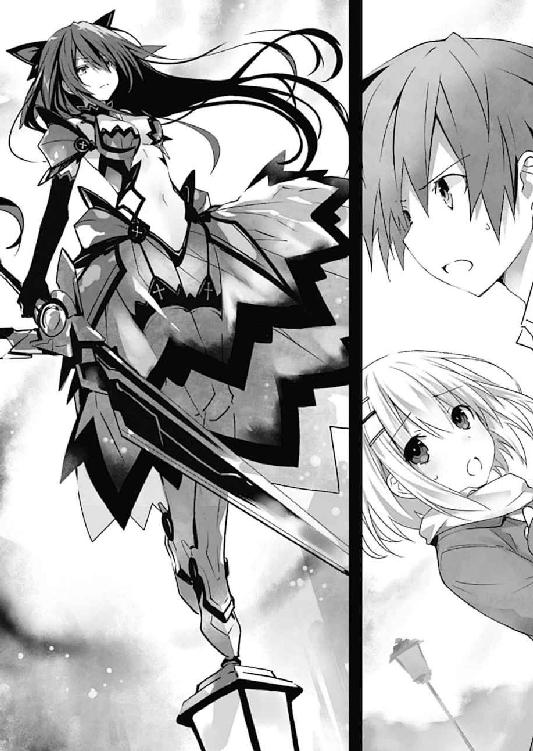
第九章 忘却の外から
──反転という現象については、未だわかっていないことが多い。
かつて、士道が初めて反転体と見えたあと、琴里は士道にそう言った。
精霊が絶望することによって起こる、霊結晶の属性変換。霊力値がマイナスを示し、別種の力へと変貌する現象。
士道はこの現象を起こしてしまった精霊を、三人知っていた。
一人は、折紙。幼き日に復讐を誓った両親の仇。それが時間遡行によって過去に舞い戻った自分自身であると知った彼女は、深い絶望によって反転してしまった。
もう一人は、二亜。長い間ＤＥＭに囚われ、想像を絶する過酷な拷問を受け続けた彼女は、その記憶を呼び起こされることにより、反転してしまった。
そして──もう一人。
それが今、士道の目の前に立っていた。
「十、香......」
士道はその少女の名を呼んだ。しかしそれにどれほどの意味があるのかはわからない。
なぜなら彼女は、その名が自分を示すものであることを認識していなかったのだから。
去年の九月。ＤＥＭインダストリー日本支社での戦いの折、士道は魔術師エレン・メイザースによって致命傷を負わされた。
士道は琴里の治癒の炎によって一命を取り留めたものの、その光景を見た十香が絶望し、霊結晶を反転させてしまったのだ。
その際現れたのが、今街灯の上から士道たちを見下ろす、『黒い十香』だった。
十香と同じ貌を持ち、十香と同じ声で話し──しかし、十香ではない別の『何か』。
強大なる魔王の力を振るう反転精霊が今、そこにいた。
「な、なんで十香が反転を......？」
緊張と混乱でぐるぐる渦を巻く思考の中、士道はどうにか言葉を絞り出した。
反転しているということは、十香が深い絶望を覚えたということである。それこそ、士道が殺されるのと同じくらいの。一体士道がいない間に、彼女に何があったというのか──
が、士道の思考はそこで寸断された。
理由は至極単純明快。街灯の上に立った十香が右手を横に掲げたかと思うと、そこに漆黒の粒子が収束し、一振りの剣を形作っていったからだ。
「ッ！ 〈暴虐公〉......!?」
士道は息を詰まらせた。魔王〈暴虐公〉。〈鏖殺公〉と対を成す、強力無比な破壊力を持った剣である。
あんなものをこんな街中で振るわれたなら、一体どれほどの被害が出るのかわからない。士道は悲鳴じみた叫びを上げた。
「やめろ十香！ こんなところで──」
「煩い。消えろ」
十香は聞く耳を持たないと言った様子で、冷酷に目を細めると、士道たち目がけて〈暴虐公〉を振るった。
黒い光としか形容しようのない斬撃が、三日月の形を描きながら士道たちに迫る。
「う、うわぁっ!?」
突然のことに、士道は思わず身を竦ませた。
が、次の瞬間。
「──【開】！」
士道の隣にいた六喰が〈封解主〉を掲げたかと思うと、虚空に大きな『扉』を開け、士道たちに迫りつつあった十香の攻撃を吸収した。『扉』の範囲から外れた斬撃の余波が地面を抉り、舗装道路のアスファルトに巨大な爪痕を残す。
「わっ!?」
「な──なに今の!?」
突然の爆発音に、辺りを歩いていた通行人たちが驚愕の声を上げる。
しかし当の十香は有象無象など気にも留めていない様子で、今自分の攻撃を無力化した六喰に鋭い視線を向けていた。
「貴様。我が一撃を止めるとは、覚悟はできているのだろうな」
「それはこちらの台詞じゃ。何をしに出てきおった。うぬらの記憶は〈封解主〉が『閉じた』はずじゃ。これ以上むくと主様の間を邪魔しようというのであれば容赦はせぬ」
六喰が、不機嫌そうに顔を歪める。十香がぴくりと眉を揺らした。
「──上等だ。今の一撃で死ななかったことを後悔させてやろう」
十香はそう言うと、トン、と街灯を蹴って地面へと降り立った。そして〈暴虐公〉をゆっくりと掲げながら、士道たちの方へと近づいてくる。
「むん......」
対する六喰も、目の前にいる反転精霊が凄まじい脅威であることは感じ取っているのだろう。油断なく十香を見据えながら腰を落とし、〈封解主〉を槍のように構える。
まさに一触即発。二人の間に刺々しい緊迫感が充ち満ち、士道は思わず一歩後ずさってしまった。
「ぐ......」
とはいえ、このまま二人を放っておくわけにはいかない。十香と六喰が全力で戦いなどしたなら、この街は一瞬で焦土と化してしまうだろう。
だが、臨戦態勢を取った二人の精霊の間に構築された緊張感は、見えない壁のように外部からの侵入者を拒んでいた。魔術師の随意領域のように本当に壁が形成されているわけではないのだが、二人の間に立った瞬間、人間という矮小な存在など容易く消し飛ばされてしまうのではないかという、本能的な恐怖が足の動きを止めさせていたのである。
常人では二人の激突を止められないどころか、間に入ることさえ不可能だろう。
しかし、だからといってこのまま二人を放置することもできなかった。意を決して足を一歩踏み出す。
が、そこで。士道の進行を止めるようにポンと肩に手が置かれた。──折紙だ。
「五河くん、ここは私に任せて。私に......考えがあるの」
「え......？ で、でも」
士道が言うも、折紙の意志は固いらしかった。緊張した面持ちで、六喰と十香の間に割って入る。
「──待ってくださいっ！」
「なんじゃ」
「邪魔立てする気か」
「ひ、ひぃっ......！」
六喰と十香にギロリと睨まれ、折紙は先ほどまでの勇ましさが噓のような、涙目になりながら肩を震わせた。
しかし、どうにかその場に踏みとどまると、躊躇いがちにか細い声を上げ始める。
「あ、あのですね、落ち着いて聞いてください。──六喰ちゃん」
「......ふむん？」
折紙の声に、六喰が訝しげに眉根を寄せる。折紙は意を決したように六喰の目を見つめながら、続けた。
「む、六喰ちゃんは、五河くんのことが好きなんですよね？ だから、五河くんを奪いにきた十香さんが許せない」
「......むん。まあ、簡単に言うとそうじゃの。もっとも、それにはうぬも含まれておるが」
言って六喰が、カチャリと音を立てながら〈封解主〉を構える。折紙が慌ててそれを止めた。
「駄目です！ 五河くんは乱暴事が嫌いなんです！ そ、それに、五河くんの愛を勝ち取るには、もっと別の方法があると思います......！」
「......ふむん？」
六喰が難しげな顔をしながら首を傾げる。と、今度は焦れたように十香が止めていた足を一歩前に踏み出した。折紙が息を詰まらせ、十香の方に向き直る。
「と、十香さんも落ち着いてください！ 十香さんの目的は何ですか......？」
「十香──それは私のことか。......まあいい。目的などは知れたことだ。そこの男、奴には以前辛酸を舐めさせられた。屈辱を雪がねば気が済まぬ。貴様と鍵の精霊はどうでもよいが、邪魔立てするのであれば容赦はせぬ」
身も蓋もない殺意剝き出しの言葉に、折紙が額に汗を滲ませる。しかし、その発言に気になる点があったのだろう、おずおずと言葉を続けた。
「五河くんに辛酸を......それってもしかして、ＤＥＭ本社であなたが顕現したときの話ですか......？」
「場所までは知らぬ。しかし、耐えがたい屈辱を味わわされたことはよく覚えている」
「......、私も話に聞いただけですが、そのときのことは知っています。確かに、あなたはあのとき五河くんに敗れたかもしれま──」
折紙の言葉の途中で、十香が〈暴虐公〉を振るう。漆黒の刀身が折紙の頰を掠め、地面に薄く傷を付けた。
「ひっ！」
「言葉に気を付けろ。誰が、誰に、敗れただと？」
「す、すみません、誤解を生む表現でした......！ 以前十香さんは五河くんと対峙したとき、あくまで偶然不可抗力的に、あまり愉快でないことをされてしまったかもしれませんが......」
「......ふん」
十香が不機嫌そうな顔をしながら鼻を鳴らす。しかしとりあえず今回の表現はセーフだったらしい。折紙がどこか安堵しながら言葉を続けた。
「思い出してください。そのとき、五河くんはあなたに剣を振るいましたか？ あなたは、彼の力に屈したのですか？」
「ふざけるな。そのようなことがあってたまるか」
十香の表情がにわかに険しくなる。折紙は十香を宥めるように手を広げながら続けた。
「そ、そうです！ そこなんですよ！」
「......何だと？」
「五河くんは単純な力で言えば、十香さんには全く敵わないはずなんです！ でも、結果はその通りにはならなかった......！ なら今五河くんを力任せに倒したとして、本当に五河くんに勝ったと言えるんでしょうか......!? むしろここで悪手を打ってしまったら、雪辱を果たす機会を失ってしまうのではないでしょうかっ！」
「............」
折紙の言葉に、十香は思案するように目を細めた。
「しかし、それならば如何にすればこの男に屈辱を与えられるというのだ」
「それは......こ、心です！ 力ではなく心を屈服させてこそ、真の勝利と言えるのではと！」
「......お、おーい、折紙ー？」
折紙はどうにか二人を説得しようとしてくれているようだったが、なんだか段々と方向が怪しくなっている気がする。士道は少し心配になって声をかけた。
しかし、臨戦態勢の精霊二人に挟まれた折紙に、それに返すような余裕はなかったようだ。顔中に脂汗を浮かべながら、落ち着かない様子で二人の反応を窺う。
すると六喰と十香は、ほぼ同時に首を傾げ、折紙に向かって問いを発した。
「して、どうすればこの不遜な女から、主様の愛を勝ち取れるというのじゃ」
「答えろ。この男の心を屈服させるには、どうしろというのだ」
「はい。二人の目的を果たしつつ、勝敗を決する方法があります......！」
「ふむん？」
「ほう」
二人が興味深そうに返す。
折紙は大仰な仕草で片手を持ち上げると、ビシッと士道の方を指さした。
「五河くんの唇を奪った方が勝ち......というのはどうでしょう」
切羽詰まった様子の折紙の言葉に。
「............、えぇっ!?」
数秒のあと、士道は裏返った声を上げた。
無論それは士道だけではない。十香もまた、訝しげな視線を折紙に向けている。
「なんだそれは。ふざけているのか」
「そ、そんなまさか。......それとも、怖いんですか？ 精霊ともあろう方がひゅッ!?」
折紙の声が途中で掠れる。
理由は非常に単純。十香の振るった〈暴虐公〉が、折紙の鼻先を掠めたからだ。
「言葉には気をつけろと言ったはずだが」
「は、はひ......」
折紙がガクガクと足を震わせながら答える。
しかし十香は、〈暴虐公〉を下ろすと、何やら考え込むようにあごに手を当てた。
「ふん。──だが、以前こちらに現れたとき、その男は私にそんな真似をしたな。──確かに、あのときはしてやられた。......仕返しがてら打ちのめしてやるも一興か」
「......え？」
十香の言葉に、思わず目を点にする。すると、六喰が不満そうに唇を尖らせた。
「待つのじゃ。勝手に話を進めるな。主様の唇を......じゃと？ そんな勝負が受けられるものか」
「大丈夫ですよ。十香さんはあくまで、五河くんの心を屈服させるのが目的です。六喰ちゃんと五河くんがしっかりと繫がり合っていれば何も問題はありません。......もしかして勝つ自信がないんですか？ 五河くんが六喰ちゃんより十香さんを選ぶと？」
「......ふむん？」
六喰が〈封解主〉の先端を、折紙の腹部につぷ......と挿し入れる。折紙が「ひぃっ！」と悲鳴を上げた。
「な、なんですかこれ！ 痛くはないけどなんか！ なんか！」
「黙らぬと鍵を廻すぞ。......しかしまあ、先んじて主様の唇を奪う......ふむん、この女に格の違いを知らしめるには妥当な手段かも知れぬの」
六喰が、折紙の腹から鍵を抜きながら呟く。
「は、はぁっ!?」
二人が下した予想外の判断に、士道は表情を驚愕の色に染めた。まさか二人が、折紙の口車に乗るとは思っていなかったのだ。
「どうするんだこれ......」という意志を込めて、折紙に縋るような視線を向ける。すると折紙は、「やったよ、五河くん！」とでも言うように親指を立ててきた。次いで自分の唇に触れてから、胸元をトントンと叩くようなジェスチャーをしてくる。
「何を......って、あ......」
そこで、一拍遅れて折紙の意図を察する。
そう。折紙は何も苦肉の策で適当なことを提案したわけでも、士道を生け贄にしようとしたわけでもない。
士道とキスをさせる──つまり、六喰の霊力を封印、もしくはもとの十香を呼び起こすことによって、この状況を打破しようとしたのである。突飛な提案に驚きはしたが、確かにそれならば──
と。
「──っ!?」
次の瞬間、士道の思考は無理矢理中断させられた。
一瞬遅れて脳が状況を理解。寸前目にした光景が再生。足を踏み込み地面を蹴る十香。目前に現れる影。そして──広がる空。
そう。士道は、瞬きほどの間もなく距離を詰めてきた十香に胸倉を摑まれ、強制的に姿勢を崩されたのである。
「へっ!? あっ!? ちょ──」
「黙っていろ。すぐに済む」
士道が目を白黒させていると、十香があまりにクール過ぎる台詞を吐きながら、ぐいと士道の身体を持ち上げてきた。
そして冷酷な色を帯びた目で士道を見下ろしたまま、その唇を士道に近づけてくる。突然のことに、士道はされるがままになってしまっていた。
が──士道と十香の唇が交わされることはなかった。
二人の唇が触れる一瞬前、十香の頭部目がけて、巨大な鍵の先端が突き出されたからだ。
「させぬのじゃ！」
六喰が視線を鋭くし、十香を睨み付ける。
「──ふん」
しかし十香は華麗に身を反らし、その一撃をかわしながら六喰を一瞥すると、士道の首を摑んだまま、もう片方の手で〈暴虐公〉を振り下ろした。
黒光がり、地面が深々と削り取られる。だが、六喰も軽やかに身を翻すとその攻撃を避け、再び十香に〈封解主〉を繰り出していった。
一撃で霊装さえ切り裂く〈暴虐公〉と、ひとたび当たれば相手の力を封じることができる〈封解主〉。それぞれ必殺の威力を持った魔王と天使が、目にも留まらぬスピードで交わる。
そう。全て、十香に首根っこを摑まれた士道の目の前で。
「ひッ、ひやぁぁぁぁッ!?」
鼻の数ミリ先を、霊力の籠もった刃や錫杖が連続して掠めていく。
十香の左手でがっしりと首元をホールドされているため、逃げようと思っても身動きが取れない。否──下手に動いてしまったなら、次の瞬間首から上が大空にフライハイしている可能性さえあった。
「────！」
「ふ──ッ」
しかもそんな剣と杖の暴風雨の中、十香と六喰は執拗に士道の唇を狙ってくるのである。必然、士道の身体は首元を支点に、まるでカンフースターの操るヌンチャクの如くブンブンと振り回された。凄まじいＧに、段々と意識が薄れていく。
「ちょ......っ、ストップ！ ストップです、二人とも！」
と、士道が昏倒する寸前で、再び折紙の声が響いてくる。
「だ、だからそういうんじゃないんですってば！ 目的はキスでも、力任せに奪ったら同じことじゃないですか！」
「......ぬ？」
「......ふむん？」
折紙の言葉に、十香と六喰が困惑したように眉をひそめる。そこで不意に二人の攻防が止み、士道の身体がビターン！ と地面に叩き付けられた。
「げふっ！」
士道の喉から苦悶が漏れる。折紙が心配そうに、六喰が十香に敵意を抱くように小さな声を発した。
しかし士道の首元を摑んでいる十香はさして気にする様子もなく、折紙の方に視線をやった。
「ならば、一体どうすればいいというのだ」
そして、真っ直ぐに折紙を見据えながら、問う。
「......むん」
それは六喰にとっても気になることだったようだ。六喰が、十香に向けていた刺々しい視線を、そのまま折紙に向ける。
二人の精霊に注視された折紙は、顔中に脂汗を浮かべながら、言葉を探るように目を泳がせた。
「え？ ええと、た......たとえば......」
◇
──そして、それからおよそ一時間後。
「あーん、だ。口を開けろ。開けなければ代わりに頰に風穴を開けるぞ」
「そんな奇っ怪な女の言うことになど耳を貸すでないぞ、主様。言動から見てもまともな頭を持っていないことは明白じゃ。それよりほうら、むくの方を向くのじゃ」
「なんだと、貴様」
「なんじゃ」
「............、ええと」
士道は、先ほどまでとはまた別種のプレッシャーに、左右から襲われていた。
場所は、先ほど二人が暴れていた通りから遠く離れたところにある喫茶店である。それはそうだ。あれだけの騒ぎを起こしたというのに、近隣で静かにお茶などしていられるはずがなかった。
否......『静かに』というのも語弊があるだろうか。何しろ今士道は、左を十香、右を六喰に固められながら、執拗にイチゴの刺さったフォークをぐいぐいと押しつけられていたのである。
一応こちらの必死の説得によって、十香の装いは霊装から普通の服に変貌していたが──だからといってその威圧感が薄れるかといえばそんなこともない。
しかも......何というのだろうか。折紙が案内してくれたこの喫茶店は、何やら普通のそれとは少々様相が異なっていた。
「お帰りなさいませ、ご主人様ー！」
「いってらっしゃいませ、ご主人様！」
などと、フリル付きのエプロンを着けた可愛らしい店員たちが、客を出迎えたり、見送ったりしている。
そう。ここはメイド姿の女の子たちが接客をしてくれる、所謂メイドカフェというやつだったのである。......士道もとある事情で昔この手の店をやらされたことがあるため、なんとなくその営業形態はわかっていた。
「......なあ、折紙。なんでこんな店なんだ？」
「......ご、ごめん。ここなら目立たないかと思って......」
士道が小声で問うと、向かいの席に腰掛けた折紙が、申し訳なさそうに答えてきた。
そう。店を選んだのは折紙......というか、この状況の原因が、いわば折紙であったのである。
理由は単純。先ほど十香と六喰に詰め寄られた折紙は、困惑しながらこう言ったのだ。
（キスをするにはやっぱり、デートとかをして親密になってからというか......）
（だから、その具体的な方法を聞いているのだ）
（わ、私もそんなに詳しくはないんですけど......その、たとえば食べ物を『あーん』して食べさせてあげたりとか......？）
（ふむん。なるほどの。ではそれをやってみるのじゃ）
と、トントン拍子でことが進み、士道は災害レベルの力を持った精霊二人にプレスされることと相成ったのである。
だがなんというか......二人とも、まだ力技が抜けていないというか、折紙の言葉を今ひとつ理解していないような調子だった。
それに、まだ士道にはこの状況がよく理解できていなかった。左右からフォークを押しつけられながら、向かいの席に座った、普段とは少し様子の違う折紙に声をかける。
「......なあ、折紙。どうして十香が反転してるんだ......？ それにおまえも......」
「えっと......私の場合は、六喰ちゃんに記憶のチャンネルが閉じられてしまったから、アクセス権の残っている部分──普段あまり表に出ていない『私』を顕在化させたの。それで......」
折紙が言いながら、おずおずと十香の方をちらと見る。
「十香さんの方はあくまで予測だけど......記憶のチャンネルを閉ざされたことによって、五河くんを失った、という喪失感が無意識下で蓄積してしまったんじゃないかなって。少なくとも、他に十香さんが絶望してしまうような出来事は起こってないはずだよ」
「そ、そうか......」
十香が絶望するようなこと──琴里たちに何かがあったというわけではないらしい。安堵できるような状況でないことは重々承知しているのだが、ひとまず安堵の息を吐く。
が、そんな士道に焦れたのか、左方に座っていた十香が苛立たしげにむんずと頭を摑んできた。
「先ほどから何をごちゃごちゃと言っている。いいからこちらを向け」
「ぐぎゃっ！」
強制的に首をぐりんと回され、喉から悲鳴が漏れる。
しかし当然のことながら十香は士道のことなど気遣う素振りも見せず、その口目がけてイチゴの刺さったフォークを突き出してきた。
だが次の瞬間、士道の口の前方に小さな『扉』が開き、十香のフォークを飲み込んだ。
「何......？」
「あんむ」
次いで、六喰の方からそんな声が聞こえてくる。眼球運動だけでそちらを見やると、六喰が、自分の目の前に開いた『扉』から出てきたイチゴをぱくりと食べていることがわかった。
どうやら士道の口に十香のイチゴが放り込まれようとした瞬間、空間に小型の『扉』を開け、それを自分の口元へと移動させたらしい。
イチゴを咀嚼し、嚥下した六喰が、不敵な笑みを十香に向ける。
「なんじゃ。てっきり主様に『あーん』をしていたのかと思うたが、むくに食べさせようとしてくれていたようじゃの。むん、まさかむくの唇でも狙っておるのか？」
「............」
十香は不愉快そうに眉をひそめると、次の瞬間、目にも留まらぬ速さでフォークを一閃させた。
ギン！ という音が鳴り、六喰の差し出していたイチゴが、フォークの先端ごと弾け飛ぶ。
「むん？」
一拍遅れて六喰がそちらに目をやると、十香が口を開け、放物線を描きながら落ちてきたイチゴをぱくりと頰張った。
そしてそれをモグモグと咀嚼したあと、フォークの先端を床にプッと吐き出す。ステンレス製のフォークがカランと音を立てた。
「その言葉、そのまま返そう。私の前で果実を無防備に晒すとは、私に献上しているのと変わらんぞ」
「なんじゃと......？」
六喰が忌々しげな視線を十香に向ける。
すると、そのとき。
「ああんっ！ 駄目ですよお嬢様！」
隅の席で繰り広げられる騒動に気づいてか、メイドさんが一人、士道たちのテーブルへとやってきた。
「......なんだ、貴様は」
「......ふむん。奇っ怪な格好じゃの」
十香と六喰が、訝しげな顔をしながらメイドさんを見る。メイドさんは一瞬ピクリと眉の端を動かしたが、そこはプロ、すぐに営業スマイルに戻って可愛らしい仕草を続けた。
「そんなに乱暴にしちゃあ、ご主人様が困っちゃいますよ？ もっと可愛らしく食べさせてあげましょう？」
「むん......どうしろというのじゃ」
六喰が問うと、メイドさんはニッコリと笑みを濃くした。
「ご主人様がケーキを食べたくなっちゃう、秘密のおまじないを教えてあげますねっ。こうして手でハートを作って──」
「......こうか」
「ふむん」
見よう見まねで、十香と六喰が手でハートマークを作る。メイドさんにちらと視線を送られ、折紙も慌てたようにそれに倣った。
「はい、準備はいいですかー？ そーれっ、美味しくなぁれ、萌え萌えきゅん！」
「美味しくなあれ」
「萌え萌えきゅん」
十香が無表情のまま、六喰が困惑したまま、メイドさんの振り付けと台詞を真似てそう言ってみせる。......なんだか、ものすごくシュールな光景だった。
「はいっ！ 完成です！ これでご主人様もケーキが食べたくなりましたよね！」
「え？ お、俺？」
「な・り・ま・し・た・よ・ね？」
いきなり話を振られて士道が戸惑っていると、メイドさんがずずいと顔を寄せながら言ってきた。
その顔には変わらず営業スマイルが張り付いていたが、なんだろうか──「これ以上騒ぐんじゃねえよテメェの女共だろ首輪つけとけ」と言っているかのような、異様な迫力が滲み出ていた。
「......は、はい。士道ケーキ大好き」
「よろしいっ！ 花丸をあげちゃいます！」
メイドさんはニッコリと微笑むと、礼をして席から去っていった。
「──なるほどな。いいことを聞いた」
その背を見送ったのち。十香はフンと鼻を鳴らすと、ケーキの残っていた皿を手に取り、テーブルから床の上へと置いた。
「......？ どうしたんだ？」
十香の行動の意味がわからず、士道は疑問を口にした。
すると十香が、手でハートマークを作り、床の上のケーキに向ける。
「美味しくなあれ。萌え萌えきゅん」
そしてケーキにおまじないをかけたのち、十香は士道の胸倉を摑み、そのままぐいと下方へと引っ張った。
「わわっ!?」
凄まじい膂力に、士道は床へと引っ張り倒されそうになった。咄嗟に手を突き、四つん這いのような格好になる。
「よし」
十香は満足げにうなずくと、士道の胸倉から手を離した。
そしてそののち、椅子から腰を上げ、士道の背中に座ってくる。柔らかな感触と適度な重量感、そして何よりその体勢に、士道は何とも言いがたい背徳感を覚えてしまい、思わず頰を赤くした。
「ちょ......っ!? な、何してるんだよ十香!?」
「まじないをかければ食わざるを得んのだろう。貴様に許された行動はその皿の上にあるものを貪り食うことだけだ」
「いや、お、おまえなぁ......」
「口答えをするな」
「ひぃん！」
十香がパシィ！ と士道の臀部を叩いてくる。突然の痛みに、士道は甲高い悲鳴を上げてしまった。
「さあ、食え、犬のように」
言って、十香が士道の頭をぐいと押してくる。
するとそれに合わせるようにして、士道の右隣に座っていた六喰が席を立ち、士道の顔の前にしゃがみ込んできた。
「まったく、粗野な女じゃ。どれ主様、むくが手を貸してやるのじゃ」
そして六喰はそう言うと、新しいフォークを手に取り、ケーキを一かけ自分の口に放り込むと、そのまま士道の頰を両手で挟み込み、「んー」と口と口を近づけていった。
「お、おい、六喰!?」
六喰が何をしようとしているかを理解した士道は思わず声を上げた。
が、次の瞬間、士道の頭が急に上を向き、狙いを逸らされた六喰の唇は、士道の下あごの辺りに触れた。
士道が顔を逸らしたわけではない。六喰の狙いに気づいた十香が、士道の髪を引っ張ったのである。
「何をするのじゃ。邪魔をするでない」
「──ふざけるな。接吻は施しを与えてからという取り決めだろうが」
「ふむん？ 何のことかのう。むくはただケーキを主様に食べさせようとしただけじゃが」
「上等だ。約定を違えるというのであれば、それはそれでいい。貴様を屠ったあとでこの男を屈服させれば済むことだ」
「うぬが、むくを、屠る？ 戯けたことを吐かすの。道化の素質があると見える」
「貴様」
十香と六喰の刺々しい視線が交じり合い、実際に目に見えてしまいそうなほどに激しい火花を散らす。
「お嬢様ぁ！ ここはメイド喫茶ですよ!? なんでご主人様をお尻に敷いてるんですかぁっ！」
するとその騒ぎを聞きつけたのか、先ほどのメイドさんがこちらにやってくる。
「なんだ貴様。貴様も這い蹲りたいのか」
「十香......っ!?」
士道と折紙はすいませんすいませんと頭を下げると、慌てて十香と六喰を連れ、店をあとにした。
◇
「──十香と折紙の居場所はまだわからないの!?」
天宮市上空一五〇〇〇メートルに浮遊する空中艦〈フラクシナス〉の艦橋で、艦長席に座った琴里はクルーたちに声を発した。
「はい......東天宮周辺には見当たりません！」
「携帯電話を置いていってしまっているため、ＧＰＳも使えません......！」
艦橋下段のクルーたちが、コンソールを操作しながら返してくる。琴里は苦々しげにギリと奥歯を嚙みしめた。
「く......！」
十香と折紙の二人が五河家から姿を消してから、もう二時間近くが経ってしまっている。あのあとすぐさま捜索に入ったものの、未だ二人の行方はわからないままだった。
「一体何があったっていうのよ、二人とも......！」
琴里は渋面を作りながら唸るように言った。
無論琴里とて、ただ二人が外出しただけならば、こんな仰々しい捜索は行っていない。琴里がここまで焦っているのには理由があった。
まずは第一に、折紙の変化だ。
あのとき、突如として人格が変わったかのような折紙に、琴里を始め精霊たちは皆驚いたが──よく考えてみると、琴里はあの折紙のことを知っていたのである。
そう。世界改変後の、『こちらの世界』に生きていた折紙の性格だ。理由はわからないが、なぜかもとの世界の折紙と混じり合ったその人格が顕在化して──
「つ......」
そこまで考えたところで、琴里は刺すような頭痛を感じ、側頭部を押さえた。
世界改変。そんな重大に過ぎることがなぜ、誰によって行われたのか、そしてそのにわかには信じがたい事実を、なぜ琴里が当然のように認識していたのかが、よくわからなくなったのである。
「これも......あの男に関わってくるってわけ？」
琴里は苦悶に歪んだ顔を上げながら呟いた。
折紙が発した名前。五河士道。琴里と同じ姓を持つ少年。
あの場で折紙だけが、皆の前に現れたというあの男の名を知っていた。
そして、六喰。宇宙にいたという、鍵の天使を持つ精霊。
琴里たちはその男のことも、六喰という精霊のことも、何も覚えていなかった。それは〈フラクシナス〉クルーも同様であったし、ＡＩのマリアに聞いても、そんなデータはないと返ってきた。
だがそんな中、十香だけが苦しげに頭を押さえながら身を捩り──折紙と同じように、それまでの十香とは全く違う表情になって顔を上げたのである。
そして十香は訝しげに辺りを見回したのち、折紙に視線を合わせ、ここはどこだと問うたあと、漆黒の剣を顕現させ、五河家を破壊して去っていってしまったのだ。
そう。──反転だ。
原因は未だわからなかったが、十香の霊結晶が、突如として属性を変換してしまったのである。
警報も鳴っていない状況で、反転精霊が野に放たれる。それがどんな意味を持つのかは想像に難くなかったし、それ以前に、一体折紙や十香に何があったのかも気にかかった。そして、それを解く鍵は恐らく、折紙が発した名の中に──
「......！ 司令！」
琴里がそんなことを考えていると、艦橋下段から〈藁人形〉椎崎の声が響いてきた。
「二人の反応を発見しました！」
「！ 本当!? 映像出せる!?」
「はい！ 今自律カメラを送っていますので、すぐに......」
椎崎の言葉を待たず、メインモニタにパッと映像が表示される。
そこはどうやら、市内のメイドカフェのようだった。その一角に、確かに五河家からいなくなった十香と折紙の姿が確認できる。
否──正確に言うのならば。
「あの男......それに、あの女の子は......」
琴里は眉をひそめた。二人と一緒に、昨日遭遇した男と、見覚えのない少女の姿があったのである。
しかもそれに次いで、艦橋のスピーカーからアラームの音が響いてくる。
「な......今度は一体何事!?」
琴里の声に応えるように、サブモニタに『ＭＡＲＩＡ』の文字が表示される。
『──霊波反応です。十香はもちろんですが、一緒にいる少女からも、非常に高い霊波が観測されています』
「なんですって......？」
琴里は怪訝そうな顔をしながら、モニタに映る少女を見やった。金髪金眼の小柄な少女。なぜか彼女の体格──というか主に胸部──を見ていると、遥か昔に受けた耐えがたい屈辱を思い出すかのような感覚に囚われた。......前世で因縁でもあったのだろうか。
しかしながら、今はそんなことを考えている場合ではない。霊波が観測されたということは、彼女は。
「精霊......だっていうの？ まさか、あれが折紙の言ってた『六喰』？」
『そう考えるのが妥当かと。それに、もう一人の少年の方からも、奇妙な波長ではありますが霊波が観測されています』
「な......!?」
マリアの言葉に、琴里は息を詰まらせた。
「ちょっと待ってちょうだい。あの男も精霊だっていうの!?」
『こちらに関しては、断言はできません。通常の精霊の霊波とは少し様子が異なります』
マリアが淡々と、しかし興味深げに言ってくる。
「一体......何が起こってるっていうのよ......」
琴里は顔を緊張の色に染めると、改めてモニタを見やった。
モニタの中では、少年──士道が四つん這いになって、十香に腰掛けられながら、謎の少女──六喰にケーキを口移しで食べさせられそうになっていた。
「............本当に、何が起こってるっていうのよ......」
琴里は困惑気味に呟きながら、額に手を当てた。
と、何やら十香と六喰が険悪な雰囲気になり、一触即発の空気が流れる。
そこに折紙が割って入り、ついでに士道が二人を宥め賺し、喫茶店から別の場所へと移動していった。
「！ い、意味はわからないけど、放ってはおけないわ。とにかく、四人を追尾してちょうだい！ 警戒レベルは最厳重に設定！ いつでも動けるようにしておいて！」
『了解！』
琴里の指令に、クルーたちが一斉に声を上げた。
◇
「..................むん」
道を歩きながら、六喰は不機嫌そうに息を吐いた。
──先ほどから、心臓が針で刺激されるかのような苛立ちが収まらない。
しかしそれも当然である。何しろ、士道と二人になるために記憶を『閉じた』はずの少女が二人も現れたのだから。
一体何が起こったというのだろうか。〈封解主〉の力は絶対である。十香と折紙が、士道のことを覚えているはずはなかった。
だが、実際十香と折紙は六喰の前に現れ、士道との逢瀬を邪魔している。六喰には、それが耐えがたいほどに不快で仕方がなかった。
喫茶店を出たあと、六喰たちは折紙に先導されて、街の様々なデートスポットを巡らされていた。
映画館、ゲームセンター、ショッピングモール......まあいずれも十香が六喰と士道のキスを妨害し、水入りになっていたのだが。
何が腹立たしいかといえば、それら全てが、士道と二人きりであったなら最高に楽しい場所だったに違いないことである。
十香に、折紙。二人が存在していることによって、六喰と士道の時間が少しずつ少しずつ削られていく。それは六喰にとって極大のストレスに他ならなかった。
士道は六喰だけのものなのだ。六喰だけを愛してくれる人なのだ。六喰だけが愛していい人なのだ。その二人の間に入ることなど、何人たりとも許されないのだ。
十香と折紙に侮られるのは気に食わないため、先ほどからどうにか余裕を見せつけながら対応をしてはいる。が、それもそう長くは続きそうになかった。六喰の腹の中は今、熱湯の如くぐらぐらと煮えたぎっていたのだから。
この二人がいることで、自分と士道の時間がどんどん削られていく。
士道が六喰以外の誰かに話しかけ、反応し、笑いかける。
六喰に向けられるはずだった声が、言葉が、笑顔が、誰かに奪われていく。
それを考えると、六喰は思わず肌を搔き毟ってしまいたくなるような衝動に襲われるのだった。
「......何だというのじゃ、一体」
誰にも聞こえないくらいの小さな声で呟きながら、カリカリと親指の爪を嚙む。
本来であれば、即座に二人の頭に〈封解主〉を突き刺し、記憶に鍵を掛けてしまいたい。
だが、折紙はまだしも十香の方は六喰を警戒しきっているため、そう簡単にことが運ぶとも思えなかった。それに、そもそも、なぜこの二人が〈封解主〉の力から逃れられたのかがわかっていなかったのだ。それを知らぬままでは、再び記憶に鍵を掛けたとしても、また何食わぬ顔で六喰たちの前に現れる可能性があった。
もしかしたら、宇宙で士道がしたように、〈封解主〉の力をコピーする天使が他にも存在するのかもしれない。だとすれば、あの二人が士道のことを思い出すことができたのも道理である。
しかしそれならば、他の少女たちの記憶が『閉じ』られたままというのが気にかかる。いや、もしかしたら皆既に記憶を取り戻していて、六喰から士道を奪う策を講じているのでは......
「──え、えっと、じゃあ、次はここです」
と。六喰がそんなことを考えていると、三人を先導していた折紙が足を止め、そんなことを言ってきた。
どうやら、六喰と十香が士道を取り合う次の戦場に到着したようである。
六喰は苛立たしげに眉をひそめながら、折紙の指し示す方向に目をやり──
「──、......っ」
思わず、息を詰まらせた。
どくん、と心臓が収縮し、呼吸が荒くなっていく。
なぜかは自分でもわからない。しかし、そこに聳えたモノを目にした瞬間、異様な動悸が襲ってきたのである。
そこにあったのは──
尖塔のような形をした、大きな建造物だった。
「......まあ、確かにデートスポットではあるけど」
喫茶店を出たあと、折紙が指し示した建物を見上げて、士道はそんな声を発した。
士道たちの目の前にあったのは、天を突くように聳えた尖塔であった。──通称、天宮タワー。三〇年前の南関東大空災のあと、新しく建てられた総合電波塔である。
内部には展望台が設えられており、タワー周辺には様々な商業施設が建ち並んでいた。観光地としても認知されており、休日ともなればカップルや家族連れでよく賑わっているという。
「......ていうか改めて思うけど、天宮市ってホント色んなものがあるよな」
「うん。三〇年前の大空災で一回何にもなくなっちゃったからね......昔ながらの街並みっていうのが乏しい代わりに、新しい施設は多いよね」
士道の言葉に答えるように、折紙が言ってくる。
すると腕組みした十香が、指で肘を叩きながら視線を向けてきた。
「で、この塔がどうしたというのだ」
「あっ......ええとですね、このタワーの展望台でキスをしたカップルは幸せになれるっていう噂、というか都市伝説がありまして......今回の勝負にはぴったりなんじゃないかと......」
「くだらん」
十香はフンと息を吐き、タワーを見上げるように顔を上げた。
「だが、まあいい。その男の心を折るのに、場所などは些末な問題だ。せいぜい這い蹲りたい場所を選べ」
......まだ何か勘違いしている気がする。士道と折紙は一瞬顔を見合わせた。互いの顔に汗が浮かんでいることがわかった。
そうこうしている間に、十香がのしのしと先に歩いていってしまう。さすがに今の状態の彼女を一人にするのは危険過ぎた。士道と折紙は慌ててそのあとを追う。
「ん......？」
と、そこで士道は後方を振り向いた。
理由は単純。先ほどまで士道にぴたりとくっついて歩いていた六喰が、その場に足を止めていたからだ。
「六喰？ どうかしたか？」
「..................やじゃ」
「え？」
六喰が小さな声で何かを言ってくる。士道は首を傾げて聞き返した。
「......いやじゃ。行きとうない。ここは......いやじゃ」
「六喰......？」
六喰のただならぬ様子に、士道は思わず眉をひそめた。
今の今まで──それこそ、十香や折紙が現れてなお動揺らしきものを見せなかった六喰が、傍から見てもわかるくらいに顔色を変えている。否......それどころか、怯えていると言ってもいい。
「お、おい、大丈夫か、六喰」
さすがに心配になって、士道は六喰の顔を覗き込んだ。そんな様子に気づいてか、既に先を行っていた十香と折紙もまた、足を止めて後方を振り向いてくる。
「一体何事だ」
「む、六喰ちゃん？」
士道は微かに震える六喰の肩に手を置くと、折紙たちに視線を向けた。
「よくわからないんだが、六喰がここは苦手らしい。別のところにしてくれないか？」
「そうなの？ えっと、じゃあどこか他の──」
「それはつまり、負けを認めるということだな？」
折紙の言葉を遮るように、十香が冷たい声を発する。士道が手を置いていた六喰の肩が、小さくぴくりと揺れるのがわかった。
「私は別に構わんぞ。そもそも貴様との勝負などもののついでだ。私がそこの男を屈服させる様を黙って見ているがいい」
「......ッ、戯れ言を......吐かすでないわッ」
六喰が視線をキッと鋭くし、十香を睨み付けたかと思うと、そのままゆっくりと、一歩一歩を踏みしめるような調子で前へと進んでいった。
「お、おい六喰、無理するなよ？」
「......問題ない。主様をあの女になど渡さぬのじゃ」
蒼白な顔をしながらも、六喰は有無を言わさぬ調子で歩みを進めていく。
士道と折紙は心配そうな表情で視線を交わし合ったが、もはや止めることは難しそうである。六喰とともに、十香のあとを追っていった。
タワーの下に設えられた建物に入ってチケットを買い、エレベーターに乗り込んで展望台まで上っていく。
その間も、六喰の顔色は優れないままだった。......一体どうしてしまったというのだろうか。
ほどなくして、エレベーターが目的の展望台へと辿り着く。士道はすっかり足取りが重くなってしまった六喰の手を引くようにしながら、エレベーターを降りていった。
展望台の中は、かなり広い造りになっている。大型のエレベーターを囲うような形に広がった、ガラス張りの空間である。中には、土産物を売る店や小さなカフェ、それに恋愛成就の神様を祀った簡易的な社までもが見受けられた。なるほど、展望台といっても、ただ景色を眺めるだけの場所ではないらしい。
「ほう」
と、十香が小さく呟くと、街の景色が広がる窓の方へと歩いていく。折紙が慌ててそのあとを追っていった。
しかしそれとは対照的に、六喰の調子はどんどん悪化していた。
「六喰、大丈夫か？」
「......むん。平気じゃ」
六喰が大仰に首肯し、わざとらしく背筋を伸ばして歩き始める。が、士道にはその姿が、虚勢を張っているようにしか見えなかった。
「なあ、六喰。一体どうしたんだ？ 高いところが苦手なのか？」
士道は心配そうに問うた。宇宙を漂っていた精霊が高所恐怖症などということはないと思うのだが、あのときはあくまで心に鍵が掛かっていた状態である。今の六喰がどういったものに恐怖を覚えるかはまた別の話だった。
だが六喰は、ゆっくりと首を横に振った。
「......違う。ただ......何かわからぬが、ここはいやな感じがするのじゃ」
「いやな感じ......か。六喰、もしかしてここに来たことがあるのか？」
「......っ」
士道が言うと、六喰はぴくりと肩を揺らした。
「......わからぬ。覚えておらぬのじゃ」
「そうか......」
と、そこで、
「──なるほど。空を飛んだ状態で見るのとは趣が違うな。ふん」
窓に張り付いていた十香がくるりと身体の方向を変え、こちらに向き直ってくる。
「さて、では再開しようか。どちらがその男の唇を先に奪えるかの勝負をな」
「あ、あの、十香さん。わかってるとは思いますが、さっき説明したように......」
「わかっている。手足を残したまま奴を籠絡すればいいのだろう」
「全然わかってない!?」
「冗談だ。──さあ来い、鍵の精霊。貴様の矜持ごと打ち砕いてやる」
十香が不敵にそう言って、両手で先ほど覚えたばかりのハートマークを作ってくる。......なんだか、それをファイティングポーズか必殺技と勘違いしているような感があった。
六喰が、よろめきながらもそれに応ずるように足を一歩前に踏み出す。
「......応とも。むくと主様の間に、うぬが付け入る隙などないことを──、......ッ」
しかし。六喰はそこで、目眩と嘔吐感に襲われたように、腹部と口元を押さえながら身体をくの字に折った。
「む、六喰!?」
「六喰ちゃん!?」
観光客たちのざわめきの中、士道と折紙は、慌てて六喰に駆け寄った。
◇
「大丈夫、六喰ちゃん」
「............むん」
女子トイレで折紙に背中をさすられながら、六喰は力なく返事を返した。
未だ頭はぐわんぐわんと痛み、数秒おきに鉄球を腹部に落とされるかのような嘔吐感が襲ってきはするものの、先ほどよりは幾分かマシである。六喰は姿勢を直すと、呼吸を整えるように大きく深呼吸をした。
......なぜこんなにもこの場所に拒否感があるのか、自分でもよくわからない。
何らかの結界や兵器の類かとも疑ったが、それならば他の皆にも影響が出てしかるべきである。なぜ六喰だけがこんなにも......
（──六喰、もしかしてここに来たことがあるのか？）
と、そこでふと、先ほど士道が発してきた問いが頭を掠める。
六喰の記憶には未だ鍵が掛けられているため、昔のことはよく思い出せないのだが、もしかしたら、六喰はかつてこの場所を訪れ、そこで何か嫌なことがあったのかもしれなかった。
無論〈封解主〉の力は絶対であるが、士道に心の鍵を開けられた際、そちらにも綻びができてしまったのかもしれないし、身体が何かを覚えていて反応を示してしまうということがないとは言えなかった。
ならば、〈封解主〉で自ら記憶の鍵を開けば、その原因と対処法がわかるのでは──
「............」
が。〈封解主〉を顕現させようと右手をかざしたところで、六喰はごくりと息を吞んだ。
なぜだろうか。凄まじい拒否感が身体を縛る。
それを開けてしまったなら、自分の心が自壊してしまいかねないような予感が、強烈な禁忌感となって六喰の手を止めていたのである。
「......六喰ちゃん？」
そんな六喰の様子を不思議に思ったのか、折紙が問うてくる。
六喰はもう一度深呼吸をしてからそれに応じた。
「......なんじゃ」
「え、えっと、大丈夫かなって」
「問題ない。......主様のところに戻るぞ」
「あ、うん......」
六喰がのろのろとした足取りで歩き始めると、折紙が心配そうな調子でそう言って、あとをついてくる。
「............」
六喰は、先ほどさすってもらった背の感触を思い出し、一瞬足を止めた。
「......折紙と申したの」
「あ、うん」
「うぬの記憶を再度『閉じる』ときは、あの黒い女よりは優しくやってやるのじゃ」
「へ？」
六喰の言葉に、折紙は意外そうな声を返してきた。
「え、えっと、ありがとう......なのかな？」
「......むん」
六喰は小さく鼻を鳴らすと、折紙に顔を向けないままトイレを出ていった。
「一体どうしたんだ、六喰のやつ......」
天宮タワーの展望台で、士道は難しげな顔をしながら独り言を呟いた。
それはそうだ。何しろ先ほどまで平然としていた六喰が、このタワーに入るなり顔色を悪くし、突然蹲ってしまったのである。
如何に皆の記憶を『閉じて』しまった危険な精霊であろうと、そもそも保護対象であることに変わりはない。心配なものは心配だった。
それに──
「............」
士道はちらと隣──不機嫌そうな顔をしながら腕組みする十香の方を見やった。
「なんだ、貴様」
すると十香が目聡くそれに気づき、ギロリと視線を返してくる。士道はビクッと身体を震わせた。
「......！ い、いや......」
そう。折紙が六喰に付き添ってトイレに行ってしまっているため、必然このような構図になってしまったのだが......正直、先ほどから辺りに満ちる緊張感が半端ではなかった。
一応、勝負事であることを理解しているのか、こうして大人しく待ってはいるのだが、何らかの理由で暴れられでもしたなら、彼女を押さえる術はない。この緊張感も、当然といえば当然といえた。
「............」
だが、よくよく考えると、反転精霊とこうして向き合っているというのも不思議なものである。士道が今まで遭遇した反転精霊は、十香を含めて三人。そのいずれもが、反転すると同時に無差別に攻撃を行ってきたため、まともに言葉を交わしたことがほとんどなかったのだ。
「おい」
と、士道がそんなことを考えていると、不意に十香が口を開いてきた。
「！ な、なんだ？」
「先ほどから──いや、以前から気になっていたが、貴様らが言う『十香』というのは私の名か」
十香が、冷たい視線を向けながらそう言ってくる。
士道は意外な質問──内容というよりは、彼女から話しかけてきたことに対する驚きが大きかったが──に目を丸くしながら、うなずいた。
「ああ......そうだけど」
「私が──いや、こちらの私が自分でつけたのか？」
「いや。それは......俺が」
「............」
士道が素直に答えると、十香は無言で士道の足をげし、と踏みつけてきた。
「うあたっ！ な、なんだよいきなり......」
「なんとなくだ」
「えぇ......」
士道は渋面を作りながらも顔を上げ、言葉を続けた。
「......おまえには、別に名前があるのか？」
「いいや。だから不本意だがその十香という呼び名で構わん」
「そっか。──じゃあ、十香」
士道が名を呼ぶと、再び十香が士道の足を踏みつけてきた。
「な、なんでだよ......」
「なんとなくだ」
「............」
士道は気を取り直すように、こほんと咳払いをしてから続けた。
「......なあ、十香。おまえは一体何者なんだ？ 反転っていうのは一体なんなんだ？ っていうか、そもそも精霊っていうのは......」
「反転、か。つまりこちらの私から、私に変わる現象のことをそう呼んでいるわけだな」
「ん......まあ、そう......なるな」
士道が答えると、十香はフンと鼻を鳴らしてから続けてきた。
「──その言い方は好かぬ。もとはといえば、私こそが霊結晶の化身たる精霊なのだからな」
「え......？ ど、どういうことだ？」
士道は困惑の表情を作りながら問うた。
一応、反転という現象については、以前十香が反転してしまった際、琴里から簡単な説明を受けていた。
しかし〈ラタトスク〉も全容は摑みきれておらず、その説明は、断片的な情報と推論が混ざったものだったのである。
十香は面倒そうに眉を歪めながら返してきた。
「始原の精霊が己の力を分割し、霊結晶を創り上げたとき、その属性は貴様の言う反転状態であったということだ。しかし、始原の精霊がそれを変化させ、今の状態にした。つまりは、前提が逆なのだ」
「そんな、一体何のために......？」
「こちらの世界の人間に適合しやすい形にするためであろうよ。もともと霊結晶は現世のものではない。そのままの状態では、人間の身体を蝕みすぎるからな」
「は......？」
十香がこともなげに放った言葉に、士道は顔を困惑の色に染めた。
「ち、ちょっと待ってくれ。理解が追いつかない。始原の精霊が、人間に適合しやすいように......？ どういうことだよ、それ！」
思わずその場に立ち上がり、十香の肩を摑みながら問い詰めるように言ってしまう。
十香は不快そうに顔をしかめると、左手で士道の胸倉を摑み、そのまま上方へ持ち上げた。
「ぐ......、あ......っ!?」
「調子に乗るな、人間。私が言葉を発したのは貴様に請われたからではない。ただの気まぐれだ」
十香が視線を鋭くし、手に力を入れてくる。
「ふん、弱いな。どうせならばこのまま唇でも奪ってくれようか。あの女め、やはりこの方が早いではないか」
言って、十香がもう片方の手を士道のあごに当て、ゆっくりと顔を近づけてくる。
「お、おい、十香......!?」
士道は思わず悲鳴じみた声を上げた。
すると十香はフンと息を吐くと、つまらなそうに顔を逸らした。
「──するか、馬鹿め。これは貴様の心を屈服させてからでないと意味がない」
が、そのとき。
「──はぁぁぁッ！」
そんな絶叫とともに視界の端に何かが閃いたかと思うと、十香の腕から力が抜け、士道の身体が床へと落とされた。
「......っ！ けほっ、けほ......っ」
咳き込みながら顔を上げると、そこに六喰の姿があることがわかる。その表情は剣吞な色を帯び、その手には、鍵の天使〈封解主〉が握られていた。
「何のつもりじゃ、主様に手を掛けるとは......！」
「......ふん、貴様には関係あるまい」
十香が鬱陶しげに言い、冷酷な視線を六喰に向ける。
「なんじゃと......!?」
しかし六喰は怯むことなく──むしろ、烈火に灼かれるかのように、その表情を怒りの色に染めると、先ほど十香が士道にしたように、十香の胸倉をグッと摑んだ。
「ま、待ってくれ、六喰！ 俺なら大丈夫だから──」
士道は慌てて六喰を止めにかかった。しかし六喰は構わず、射殺すような視線で十香を睨み付ける。
「うぬは、むくから主様を奪おうというのじゃな？ むくの愛する人を、むくを愛する人を、奪おうと言うのじゃな？」
「知ったことか。鬱陶しい。離さんか、貴様」
十香は不快そうに顔を歪めると、右手を手刀の形にして、ピッと閃かせた。
六喰の頰に細い傷が走り、その前髪が一房切れて、空気に舞う。
「────」
六喰は息を詰まらせると、十香の胸倉から手を離した。
しかしそれは、十香の攻撃を恐れたからではなさそうだった。血の滲む頰をさするでもなく、ゆっくりと地面に落ちていく金色の髪を呆然と見つめる。
「あ──あ、あ......」
六喰が、目を見開きながら声を震わせた。
そして。
「──貴......ッ、様ァァァァァァァァァッ！」
次の瞬間、士道の目の前がカッと明るくなったかと思うと、そこにいた十香の身体が吹き飛ばされ、展望台のガラスを突き抜けて空へと躍った。
「......っ！ うわ......!?」
士道は乱れ舞うガラス片に思わず身体を折ったが、すぐに顔を上げた。
──展望台の中は、一瞬にして混乱と動揺に支配されていた。辺りにいた観光客たちが悲鳴を上げ、エレベーターの方へと殺到する。
しかしそれも無理からぬことであった。何しろ、ガラスが盛大に割れて、少女が外へと吹き飛ばされ──
あまつさえ、少女と、それを吹き飛ばした少女が、平然とした様子で展望台の外壁に立っているのだから。
「貴様」
「──許、さぬ......許さぬ、許さぬ、許さぬ......ッ」
十香と、いつの間にかその手に天使〈封解主〉を顕現させた六喰が、展望台の外壁で対峙する。
双方、重力を無視しているかのように、壁面に対して垂直に。
しかし当の本人たちは、その異常性を不自然に思うでもなく、互いに剣吞な気配を交じらせあった。
「むくの髪を......切ったな。主様が、──さまが......褒めてくれた、むくの......髪を──」
六喰がギロリと十香を睨み付けながら、唱えるように言う。
するとそれに合わせるように、六喰の肌にキラキラと光の粒子が纏わり付いていき、淡く輝く衣を形作っていった。
──霊装。精霊が纏う絶対の鎧にして、城。
「......！ 六喰！ やめるんだ！ 十香はそんなつもりじゃ──」
士道は慌てて声を上げた。しかし六喰は聞く耳を持たず、〈封解主〉を握る手に力を入れた。
そしてそのまま〈封解主〉の先端を、自分の胸目がけて突き刺す。
「な......!?」
「〈封解主〉──【放】！」
六喰が、〈封解主〉をカチリと回す。
するとその瞬間、六喰の霊装が輝き──その形状を変えていった。優美であったシルエットが先鋭的に引き絞られ、六喰の怒りを反映したような様相へと変貌する。
それと同時、彼女が手にした〈封解主〉もまた、別の姿になっていった。錫杖のような形をしていた天使が、長大な戟を思わせるフォルムへと変化を遂げた。
今までの霊装と天使を、世を捨てた女仙とするのなら、今の姿はさながら荒ぶる猛将といった様相である。
霊結晶の反転ではない。しかし、六喰がその姿を変えた瞬間から、六喰からは、周囲の空気が震えるかのような濃密な霊力が放出されていた。
「こ、これは......!?」
「六喰ちゃん!?」
士道と、後方から駆け寄ってきた折紙の声が重なる。
「ほぉう......？」
しかしそんな中、一人興味深げに目を細めている者がいた。──十香だ。
「──いいだろう。唇を奪う勝負は終いだ。やはり、こちらの方がわかりやすくていい」
そして十香は不敵に顔を歪めると、右手を大きく翻した。
次の瞬間、十香の身体を、闇色の霊装が覆っていき、その手に、魔王〈暴虐公〉が握られる。
「もはや、もはや、許さぬ。塵も残さず無と消えよ！」
「いいだろう。かかってこい。その素っ首、落としてくれる」
六喰と、十香。
強大な力を有した精霊と反転精霊が、相対した。
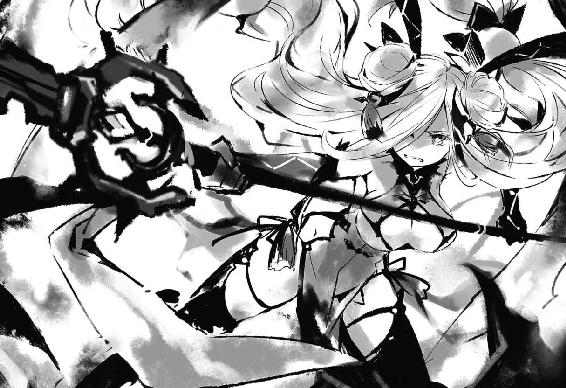
第一〇章 鍵と剣
〈フラクシナス〉艦橋のメインモニタに表示された天宮タワー展望台のガラスが盛大に弾けると同時、スピーカーから大きなアラーム音が鳴り響いた。
「......!? これは──」
「き、強力な霊波反応を二つ確認！ うち一つは、値がＥを示しています！」
「なんですって......!?」
〈保護観察処分〉箕輪の言葉に、琴里は眉をひそめた。
霊波反応、カテゴリー・Ｅ。つまりそれは、通常の精霊とは属性の異なった霊力を有する個体──反転精霊が発するものである。
とはいえ今に限れば、その反応が予想の埒外にあったというわけではなかった。何しろ、今あの展望台の中には、反転した十香がいるはずなのである。
否──中、という表現ももはや適当ではない。
何しろメインモニタには、ガラスの壁面に悠然と立ちながら、長い髪を風に遊ばせる二人の精霊の姿が映し出されていたのだから。
「......！」
と、琴里がメインモニタに気を取られていると、再び艦橋に音が鳴り響いた。
不穏な空気を漂わせる、けたたましいサイレン。
しかしこれは、艦内から聞こえてくるものではない。二人の凄まじい霊力を観測したことにより発された、空間震警報である。
通常空間震警報は、隣界に存在する精霊がこちらの世界に現れる際の空間のゆらぎを観測して発されるものであるが、さすがに国──ＡＳＴも、この異常な霊波数値は見過ごせなかったのだろう。
すぐさま街並みから、急速に人の姿が消えていく。皆、慌てて近隣のシェルターに避難しているのだ。
「く......」
そんな様子が映されたサブモニタを視界の端に捉えながら、琴里は渋面を作って拳を握り込んだ。
〈ラタトスク〉は精霊を救うことを目的とした組織。この非常事態を、ただ見ていることなどできはしない。
だが、今琴里の頭の中に、この状況を覆す具体的な方法が浮かんでいなかったのである。
〈フラクシナス〉の兵装や、搭載されたＣＲユニットを使えば、暴れる精霊を抑え込むことくらいはできるかもしれない。しかし、それではＡＳＴやＤＥＭと何も変わらなかった。その後、精霊の力をどうにかして解消しない限り、その問題は延々と続いていくだけだ。
しかし、如何に顕現装置の力といえど、精霊の霊力を封印することなど不可能である。だとしたら、琴里たちは今まで──
「つ......っ」
──何かが足りない。琴里は不意に頭を刺した痛みに顔をしかめた。
まるで、パズルのピースが一枚だけ行方不明になってしまったかのような感覚。しかもそのパズルに描かれているのは複雑な迷路で、ピースが一枚ないだけで順路が滅茶苦茶になってしまうのだ。
「！ 司令！」
と、琴里の思考が、答えを得られないまま堂々巡りを繰り返していると、不意にクルーが艦橋に叫び声を響かせた。
展望台の壁面で対峙していた二人が地面を──否、壁を蹴ったかと思うと、そのまま一瞬のうちに肉薄し、重力を無視した戦いを繰り広げ始めたのである。
一人は、闇色の霊装を纏い、片刃の剣を握った反転精霊──十香。
そしてもう一人は、長い金髪を振り乱し、先端が鍵状になった戟を構えた精霊──折紙の言を信じるのであれば、六喰である。
双方異常なレベルの霊力を撒き散らしながら壁を駆け、剣と戟を交わし合う。そのたび、霊力の余波で展望台のガラスが次々と破壊されていき、キラキラと輝く破片が空に撒き散らされた。
「......っ、とにかく、見てるだけってわけにはいかないわ。少しでも周囲への被害を──」
と、琴里はクルーに指示を発そうとし、そこで言葉を止めた。
突然、外部回線からの通信を示すアラームが鳴り響いたのである。
「通信......？ どこから？」
「一般回線──鳶一折紙の携帯電話です！」
「なんですって......!? 繫げて！」
琴里が言うと、ザザッというノイズのあと、スピーカーを通して折紙の声が聞こえてきた。
『琴里ちゃん......！ 鳶一です！』
「折紙！ あなた一体何をしていたの!? 十香は......それにあの精霊は何者!?」
『すみません、あとで説明します......！ 時間がありません！ 手を貸してください！ このままじゃ歯が立ちません！ 〈フラクシナス〉の随意領域であの二人の動きを少しでも抑えられませんか!?』
「それは......可能だと思うけど、あのレベルの精霊を完全に抑え込むことは不可能よ。せいぜい、身体が重い程度に感じるくらいだわ。それだけじゃあ──」
と、琴里が言いかけたところで、再びスピーカーから声が響いてきた。
──折紙のものではない、男の声が。
『そこからは、俺に任せてくれ......！』
「な......」
琴里は驚愕に目を見開いた。
折紙の携帯から突然予想外の男の声が聞こえてきたこと、そして──その声に、不思議な安堵感を覚えてしまった自分に驚いて。
「な、何言ってるの。そもそもあなた──」
『詳しく説明してる時間はないけど、俺はあいつらを止める方法を一つだけ、持ってるんだ。だから頼む。俺を信じて、力を貸してくれないか......!?』
「............」
縋るように訴えかけてくる男の声に、琴里は数瞬の間押し黙った。
そして、
「......随意領域、十香及び六喰の戦闘領域に展開！ 同時に〈世界樹の葉〉を射出！ 周囲への被害を抑えるわよ！」
「司令!?」
意外そうなクルーの声が響いてくる。しかしそれも無理からぬことだろう。何しろ、折紙の要請があるとはいえ、琴里が見も知らぬ男の言葉を真に受けたのだから。
だがなぜだろうか。琴里は、自分のその決断が、言葉が、妙に「しっくり」きている気がしてならなかった。それこそ、まるで幾度もこんなやり取りを交わしたように。幾度も彼に無茶をさせてきたように。幾度も──彼の無茶に付き合わされてきたように。
琴里はチュッパチャプスの棒をピンと立てると、肩掛けにしたジャケットを翻し、声を発した。
「いいから、やるわよ。──私たちは、私たちなりの戦争を、ね」
「ど、どうだった、五河くん」
折紙が、不安そうな表情をしながら士道の顔を覗き込んでくる。士道はそれに返すようにこくりとうなずくと、借りていた携帯電話を折紙に手渡した。
「ん、協力してくれるってよ」
「！ 本当？ よかった......」
「ああ......本当にな。折紙が仲介してくれて助かったよ」
士道が言うと、折紙はふるふると首を横に振ってみせた。
「ううん、違うよ。五河くんの言葉だったから、届いたんだよ」
「いや、でも琴里は今、俺のこと覚えてないんだし......」
折紙が、もう一度首を振る。
「確かにそうかもしれないけど、きっと、そういうんじゃないんだ。こういうときは、わかるんだよ。だって、兄妹だもん」
「そういうもんなのかね......」
士道は頰をかきながら苦笑すると、気を取り直すようにすうっと息を吸い、パチンと頰を張った。
「でも、これでようやくスタートラインだ。六喰と十香を何とかして止めなきゃいけない。六喰の好感度数値はわからないし、記憶が封印されてる状態でキスをしても、もとの十香に戻ってくれるかどうかわからないけど......一か八か、やるしかない」
士道はグッと拳を握ると、折紙の方に向き直り、その目を見つめた。
「......頼む、折紙。俺一人じゃ、二人を一度に相手はできない。......手を貸して、くれないか」
「五河くん......」
すると折紙は、にこりと笑いながら首肯してみせた。
「当たり前じゃない。五河くんを一人で行かせたりなんてしたら、あとで『私』とケンカになっちゃうよ」
折紙はそう言うと、手の指を組み合わせながらくるりと背を向け、続けた。
「それに......嬉しいよ、私を頼ってくれるなんて。私を、五河くんの隣に立たせてくれるなんて。──女の子は、守られるだけが幸せじゃないんだから」
「折紙......」
士道が名を呼ぶと、折紙は肩越しにちらとこちらに視線を送ったあと、いたずらっぽく微笑んだ。
そして、ポケットから銀色のドッグタグのようなものを取り出し、カチャリと音をさせながら額にかざしてみせる。
「承認、鳶一折紙。──〈ブリュンヒルデ〉、展開」
すると次の瞬間、折紙の身体が淡く輝き、その身体に、優美なシルエットを持つ金属の鎧が装着されていった。
ＣＲユニット。奇跡の技術顕現装置の、戦術的集大成。人間が精霊と戦いうる、唯一の力。
しかも、それだけではない。折紙の纏ったＣＲユニット〈ブリュンヒルデ〉の周囲には、花嫁衣装を思わせる純白の霊装が顕現していた。
「その姿は──」
「──ふふ。惚れ直したかい、五河くん」
折紙が、冗談めかした口調で言ったのち、自分の言葉が恥ずかしくなったように頰を染める。
「えっと、あの、そういうことじゃなくて」
「いや、はは......」
士道はそんな微笑ましい様子に一瞬口元を緩めてから、キッと視線を鋭くした。
「──行こう、折紙」
「うん......五河くん」
言って。
二人は、同時に戦場へと足を踏み出した。
◇
──街に、けたたましいサイレンが鳴り響く。
シェルターに急ぐ人の波を眺めながら、七罪は、訝しげに眉をひそめた。
「......空間震警報？ ってことは......」
「もしかして......十香さんたちでしょうか......？」
七罪の言葉に答えるように、四糸乃が不安そうな声を上げてくる。
あまり考えたくないことではあったが、その可能性は十分あった。同意を示すようにこくりとうなずく。
あのあと七罪たちは、突然人格が変わってしまったかのような豹変を見せた十香と折紙を捜して、街中を歩き回っていた。琴里は私に任せてと言っていたのだが、ただ黙って待っていられるような精霊は、あの中には一人もいなかったのである。
一体あの二人に何があったのかわからなかったが、明らかにただごとではなかった。
なぜか普段より丸くなった折紙はまだしも、問題は十香の方だ。急に苦しげに蹲ったと思ったら、次の瞬間、何やら禍々しいオーラを立ち上らせながら顔を上げたのである。
どうやらあれは、二亜のときと同じ反転という現象らしい。何が原因でそうなってしまったのかはわからなかったが、あれは──
「よっしー！ なっつーん！」
と、七罪がそんなことを考えていると、そんな呼び声が響いてきた。──特徴的なあだ名。二亜である。
声の方に視線をやると、二亜の他にも、十香たちの捜索に出た精霊たちが揃っていることがわかった。どうやら、ここに至る前に合流したようだ。
「何、見つかったの？」
「うんにゃ。でも話によると、なんか天宮タワーの方で爆発があったみたいだ。行ってみよー」
言って、二亜が人波の流れとは逆の方向を示してみせる。
七罪は、四糸乃と視線を交わし合うと、こくりとうなずいた。
◇
「はぁぁぁぁぁぁッ！」
「小癪──！」
鍵の天使と剣の魔王が、幾度となく交差する。
そのたび、一撃一撃に込められた霊力同士が弾け合い、まるで小さな爆弾を爆発させているかのような閃光と衝撃波が辺りに撒き散らされた。
しかも、それだけではない。錫杖から戟へと姿を変えた鍵の天使〈封解主〉は、不定期に超小型の『扉』を生じさせては、十香の死角から攻撃を繰り出してくるのである。
常人であれば剣閃を捉えることさえ不可能であろう神速の世界。否──並の精霊でさえ、自分とここまで斬り結ぶことはできないだろう。十香と呼ばれた彼女は、対する相手に仄かな賞賛を送ってさえいた。
恐らく〈封解主〉で霊力を『閉じて』いたか、一時的に潜在能力を『開いた』のだろう。まるで、固く閉じていた蕾が満開の花を咲かせたかのような、美しき昇華。純粋な殺意と敵意で固められた、必滅の戟。
十香と六喰が足場としていた展望台のガラスが、二人の戦闘の余波で次々と弾け飛んでいく。十香は身を翻すと、展望台の更に上──鉄塔部分に移動した。
「うぬは、むくをひとりにするつもりか。また、むくを孤独にさせるつもりか」
六喰は攻撃の手を微塵も緩めぬまま、呻くように叫びを発してきた。
「殺す。殺す。むくの主様を奪おうとする輩は全て殺してくれる......！」
「ふん、ならば吠えずに我が身を穿ってみろ、鍵の女。できるものならば、だがな」
「言われずとも......ッ！」
十香の声に呼応するように、六喰が〈封解主〉を構える。
するとそれに合わせるようにして、十香の身体を奇妙な感覚が襲った。
まるで目に見えない粘液にでも飲み込まれたかのような感覚。身体がずんと重くなり、手足を動かすのが億劫に感じる。
「......なんだ？」
一瞬六喰の仕業かとも思ったが──違う。六喰は六喰で身体に違和感を覚えたように眉根を寄せ、「一体何をした」といった視線を十香に向けてきていた。
恐らく、犯人は別にいる。士道、折紙と呼ばれていたあの人間たち......もしくはその仲間といったところだろうか。
とはいえ、だからといって十香のすることに変わりはない。目の前に立つ敵を、屠る。それだけだった。
「喰らうのじゃッ！」
六喰も十香と同じ思考に至ったのだろう。空を蹴るように加速し、〈封解主〉を五月雨の如く繰り出してくる。十香は細く息を吐くと、〈封解主〉の柄を叩くような格好でそれらの刺突を弾いた。
「......ふん？」
が、十香はそんな攻防の中、小さく眉をひそめた。
六喰の一撃が、それぞれ必殺の威力を持っていることは疑いようがない。
しかし、何というのだろうか。十香の勘が告げていた。六喰は、この攻撃で勝負を決めるつもりがない──と。
動きを阻害されているのは十香も同じであるし、六喰に十香を殺すつもりがないというわけでもないだろう。どちらかというと──そう、『本命』に至る道を丁寧に敷いているような感覚だ。
と、十香がそんなことを考えていると、六喰に小さな動きがあった。力を込め、〈封解主〉を抉り込むように強力な刺突を放ってきたのである。
だが、荒い。十香は身を捩ると、その一撃を紙一重で避ける。
しかし、次の瞬間。
「〈封解主〉──【開】！」
六喰は十香に避けられた〈封解主〉を捻ると、十香の背後の空間に『扉』を生じさせた。
「──っ」
一瞬、背後から何か攻撃が仕掛けられるかと思ったが──違う。
その『扉』が、まるで呼吸をするかのように急激に辺りの空気を吸収し始めたのである。
鉄塔に足を着けていた十香の身がふわりと浮き、空に投げ出される。恐らく、気圧差の大きい空間と『扉』を繫げたのだ。
とはいえ六喰とて、こんなもので十香を吸い込めるとは思ってはいないだろう。これはあくまでも一瞬の隙を生じさせるための──
「【開】！」
十香の思考を途切れさせるように、六喰の声が響く。
すると次の瞬間、十香の頭上に巨大な『扉』が開き、そこから、直径一〇〇メートルはあろうかという鉄と石材、木材の塊が落下してきた。
「ち──」
恐らく、何かの建造物だ。十香は〈暴虐公〉を下段に構えると、そのまま建造物目がけて刃を振り抜いた。
一閃。巨大な塊に線が走り、十香を避けるように二つに分かれて地面へと落ちていく。
が、まさにそのとき。
「〈封解主〉──【解】！」
身体すれすれを落下していく建造物と十香の間に『扉』が生じたかと思うと、そこから鍵の形をした戟が突き出された。
「────」
剣撃を放ったばかりの体勢。すんでのところで身を翻すも、一瞬対応が遅れる。
〈封解主〉は十香の霊装の端を貫くと、そのまま落下する建造物の一部を突き刺した。
そして──
「何......？」
十香は思わず眉をひそめた。
〈封解主〉が穿った巨大な建造物が、そして、十香の纏っていた霊装が、一瞬にして消滅してしまったのである。
切り裂かれたわけでも、『扉』に吸い込まれたわけでもなく──ただその場から、霧のように消えてなくなってしまったのだ。
とはいえ、悠長に考えを巡らせている暇などはない。『扉』が広がり、そこから、〈封解主〉の主たる六喰が突撃を仕掛けてくる。
「はぁッ！」
「面妖な真似を......！」
十香は〈封解主〉の攻撃を防ぎ、その勢いに乗るようにしてその場から離脱した。
そのまま地面に降り立ち、先ほど消し去られてしまった霊装を再度顕現させる。
とはいえ、完全に元に戻ったわけではない。如何に精霊とはいえ、絶対の城たる霊装を形作るには相当量の霊力を要する。一度顕現させた霊装が霊力に還元されることなく失われたということは、そのまま霊力の総量を削られたということに他ならなかった。
「............」
十香は油断なく六喰の挙動を監視しながら、自分の身に微かに纏わり付いた霊子の残滓を感じ取った。
「霊装を構成していた霊子が空気中に残っているということは、消滅──というわけではなさそうだな。察するに、分解......分子や霊子の結合をその鍵で解除した、といったところか。なるほど、これが貴様の本命か」
「............」
六喰は答えず、十香と目線を合わせるように地面に足をつけた。
しかし十香は構うことなく〈暴虐公〉を構えた。
今目の前にいるのは、それに値する相手である。
思考も行動も殺意に塗り込められているというのに、本能とも言うべき部分が、冷静に相手の隙を窺っている。言うなれば──そう、冷静に、狂っている。
「──ふん。童のような顔をしていると思えば、一端の戦士ではないか」
十香は薄い笑みを浮かべると、〈暴虐公〉の切っ先を愛しき好敵手に向けた。
しかし、二人が再び切り結ぶ寸前。
「待ってくれ、二人とも！」
「お願いします、落ち着いてください！」
十香と六喰の間に割って入るように、士道と折紙が現れた。
十香は不機嫌そうに舌打ちをすると、気を取り直すように〈暴虐公〉の柄を握り直した。
「邪魔立てをするか。......まあいい。どのみち、全員打ち倒すつもりだったからなッ！」
叫び、〈暴虐公〉を振り下ろす。漆黒の剣閃が三日月の形を描き、六喰と、その前に割って入った二人に向かって伸びていった。
が、金属の鎧と純白の限定霊装を纏った折紙が、手にした槍を翻すと、その先端に闇色の霊力が収束し、十香の斬撃を打ち払った。
「......何？」
予想外の現象に、十香は目を細めた。
別に、折紙が今の一撃を防げたことを驚いているわけではない。今十香は不可視の力によって動きを制限されているし、もとより本気で放った剣撃ではない。精霊の力を持つ折紙ならば、弾くことができてもおかしくはなかった。
だが、今折紙の持つ槍に纏わり付いていたのは、明らかに十香と同種の──つまりは、所謂反転体の霊力であったのだ。
今の折紙から感じるのは、通常の霊力と、今十香たちの身を包んでいるのと似たような、人工的な力だった。
恐らく、あの槍の先端に、周囲に漂う霊力を収束しているのだろう。ならば、今し方の強力な出力も納得である。何しろこの辺り一帯には今、六喰に分解された霊装の濃密な霊子が溢れていたのだから。
「ふん......どいつもこいつも──」
十香は視線を鋭くすると、〈暴虐公〉を振りかぶり、地面を蹴った。
「──私を楽しませてくれるッ！」
「......！ 来ます！ 五河くんは六喰ちゃんを！」
折紙はそう叫ぶと、槍の先端に闇色の霊力を纏わせ、十香の攻撃から士道を守るように立ちはだかってきた。
闇色の霊装を纏った十香と、純白の霊装を纏った折紙が、打ち合い、絡み合いながら、天高く飛び上がっていく。
その光景を地上から見上げながら、六喰はブツブツと小さな声を漏らしていた。
「殺す......殺す。主様を奪おうとする者は、敵じゃ。むくは......むくは、ひとりは嫌じゃ──」
「六喰！」
「......！」
と。不意に名を呼ばれ、六喰はハッと目を見開いた。
「──主様」
そう。六喰の前にいたのは、他ならぬ五河士道その人であったのである。
「おお......主様。主様。安心するのじゃ。すぐに、むくがあの黒い女を無に帰してくれるからの。そうすれば──」
「六喰！」
その言葉を遮るように、士道が六喰の肩を摑みながら、再度名を呼んでくる。その必死な様子に、六喰は思わず驚いてしまった。
「どうしたのじゃ、主様。あとはむくに任せておけばよい」
「違うんだ......そうじゃないんだよ、六喰......！ もうこんなことは止めてくれ。俺は、十香が消えちまったり、折紙が俺のことを忘れちまったりするのは嫌なんだ......！ 二人とも......いや、みんなみんな、俺の大切な人たちなんだ！」
「......っ」
士道の言葉に。
六喰は、引きつけを起こすように息を詰まらせた。
しかし士道は、そんな六喰の様子に気づくことなく、続けてくる。
「なんで......なんでなんだ？ 教えてくれ、六喰。なんでおまえはそこまで、みんなを排斥しようとするんだ？」
士道が訴えかけるように言ってくる。
六喰は静かに、しかし震える声を、喉から漏らした。
「──なにゆえ」
「え？」
「なにゆえ、そのようなことを言うのじゃ。主様は......むくのことが好きなのじゃろう？ むくも、主様が好きじゃ。ならば、それでよいではないか。なのになぜ！ なぜじゃ！」
目に涙を滲ませながら、続ける。
「嫌じゃ。ひとりは嫌じゃ......！ 主様は誰にも──」
「──十香さんっ！ 折紙さんっ！」
と。
そこで、六喰の言葉を遮るように、どこかからそんな声が聞こえてきた。
「な、何戦ってるのよあの二人......！」
「きゃー！ 大変ですー！」
「────」
見やると、いつの間にかそこに、六人の少女たちの姿があった。
六喰が記憶を『閉じた』はずの精霊たちである。皆、空を舞い刃を交わす十香と折紙を見上げ、困惑したような表情を作っていた。
「あ──」
その姿を見て、六喰は、どくん、と心臓が収縮するのを感じた。
「うぬら......うぬらまで。皆、皆むくから主様を奪おうというのじゃな。許さぬ。許さぬ。もはや──」
頭の中がぐるぐると回り、ぐしゃぐしゃになっていくような感覚。
六喰は〈封解主〉を両手で握ると、その切っ先を下方に向け──
「〈封解主〉──【閉】......ッ！」
地面に──否、正確に言うのならば地球に、その鍵を差し込み、廻した。
瞬間。
その箇所を起点とし、凄まじい地鳴りが、辺りにゆっくりと広がっていった。
まるで、絶え間なく駆動する工業機械の上にでも立っているかのように。
地球が、一個の脈動する巨大な生命体にでも変貌したかのように。
微かな、しかし終わることのない地震が、周囲を覆い尽くす。
「......ッ!? う、うおッ!?」
「な、なんですか......これ......」
「狼狽。地震──ですか」
士道と精霊たちの驚愕の声が鼓膜を震わせる。
六喰は薄い笑みを浮かべると、士道の頰に手を伸ばし、優しく撫でていった。
「もう......安心じゃ。これでもう......誰にも邪魔はさせぬ」
「六喰......？ おまえ、一体何をしたんだ？」
「──星に、【閉】を施した。対象が巨大に過ぎるゆえ時は掛かるが、やがてこの星は巡りを止めるじゃろう」
「は──？」
士道が、呆然とした調子で目を見開いてくる。しかし、今の六喰はそんな表情など気にならなかった。笑みを濃くし、あとを続ける。
「これで、邪魔者は皆消える。主様は、むくと一緒に、ずっと宙で暮らすのじゃ。ふふ......楽しみじゃのう」
「何を......言って──」
士道が表情を困惑の色に染める。
六喰は気にせず顔を上げた。──そう。六喰がこの手で倒さねばならない敵が、まだ一人残っていたのである。
「お、おい、六喰！ おいっ！」
六喰は、背に士道の声を聞きながら、空を舞う黒い影を見上げ、震える地面を蹴った。
「きゃー！ 地震ですー！ 怖いですー！ 七罪さんに抱きついてしまいますー！」
「台詞で説明するくらい余裕あるじゃないの......っ！」
七罪は、地震にかこつけて抱きついてこようとする美九の頭を押さえつけた。......まあ無論、体格と腕力の差であえなく御用となりはしたのだが。
しかし、今はそんなことをしている場合ではない。何しろ十香と折紙が空中戦を繰り広げ、空間震警報は鳴り響き、あまつさえ謎の地震まで起こっているというのだ。もはや、何をどうすればよいのかさえわからなかった。
「い、一体......どうすればいいんでしょう」
「んー......よくわかんないけど、とにかく、とーかちゃんとオリリン止めとかないとまずいんじゃないの？」
「首肯。このままだと、ＡＳＴやＤＥＭに嗅ぎつけられてしまい──」
「──みんな！」
と、そこで不意に、大きな声が響き渡る。精霊たちは一斉に声のした方向へと顔を向けた。
「......へっ？」
そして、そこにいた人物の姿を見て、思わず目を見開く。
それはそうだ。何しろそこにいたのは、昨日突然声をかけてきた、見知らぬ少年だったのだから。
「あ、あなたは昨日の......？」
「......えっ、空間震警報鳴ってんのにストーカー続けてんの......？ なんかそこまでいくと感心しちゃうわね......いやしないけど」
七罪が半眼を作りながら言うと、少年は慌てた様子で皆のもとに走り寄ってきた。
そして、皆の怪訝そうな視線を浴びながら、少年が深々と頭を下げてくる。
「みんな......頼む！ 力を貸してくれ！」
「......は？ え、何......？」
突然のお願いに、精霊たちは表情を困惑の色に染めた。
「えっと......何かあったんですか？」
戸惑った様子を見せながらも、そう問うたのは四糸乃だった。さすが慈愛の心に満ちあふれた女神である。どこの馬の骨とも知れない男にも優しいのだ。
すると少年は顔を上げ、言葉を続けてきた。
「六喰が──精霊が、地球に『鍵』を掛けちまった。このままじゃ、大変なことになっちまう！ 頼む......みんなの精霊の力を......貸してくれ！」
と、少年が必死な様子で訴えかけてくる。
しかし......七罪は眉をひそめた。それはそうだ。まず第一に少年の言っていることが意味不明なのである。どうやら精霊のことは知っているようだが、それが彼の不審さに一層拍車を掛けていた。
──だが。
「......わかりました。私でよければ」
数瞬の逡巡のあと、四糸乃がそう言ってこくりとうなずく。七罪は目を見開いてそちらを向いた。
「よ、四糸乃？ もっとよく考えた方がいいんじゃないの？ 怪しすぎるでしょ、こんな......」
「はい......でも、悪い人には見えませんし。それに......なんて言えばいいのかわからないんですけど、私──この人のお役に、立ちたいんです」
四糸乃が、強い決意に満ちた目をしながらうなずく。
すると他の精霊たちも、次々に同意を示していった。
「呵々、まあよいだろう。最低限の礼はわきまえているようであるしな」
「首肯。なぜかはわかりませんが、以前にもこんなことがあった気がします」
「むー......まあ、皆さんがそう仰るならぁ......男の子は男の子ですけど、トリミングしたら可愛いお顔してますしぃ」
「あーうんいんじゃない？ なんかこういう展開燃えるっしょ」
「みんな......」
少年が、感動したように目を潤ませる。
七罪はなんだか気まずくなって、大きく息を吐いた。
「......何よ。これじゃ私だけ悪者みたいじゃない。わかったわよ。私もやるわよ。──で、一体何をどうすればいいっていうの」
七罪が言うと、少年は嬉しそうな顔をしたのち──身体の動きを止めた。
「ええと、それは──」
どうやら、具体的に何をすればいいかは考えていなかったらしい。七罪はもう一度はあと息を吐いた。
と、ちょうどそのとき。
『──まったく、何をやってるのよ』
どこからか、琴里の声が聞こえてきた。
「！ 琴里さん!?」
「えっ、どこ？」
『随意領域を通して〈フラクシナス〉から声を送ってるわ。──確かにその人の言うとおり、地面に霊力が侵蝕しつつある。これが地球にどんな影響を及ぼすかはわからないけれど、放ってはおけないわ。──今から、所定のポイント六カ所に〈世界樹の葉〉を打ち込むから、それを起点として、それぞれ霊力を送り込んでちょうだい。それで、しばらくの間侵蝕は防げるはずよ』
「ほう、なるほどな。やるではないか琴里！ 我が眷属にしてやろう」
『遠慮しておくわ。──でも、あくまでこっちでできるのはそこまで。原因となる精霊と天使をどうにかしない限り、根本的な解決にはならないわ。──本当に任せていいんでしょうね、五河士道？』
琴里が言うと、士道と呼ばれた少年は、力強くうなずいてみせた。
「ああ......本当にありがとう、みんな。──よろしく頼む」
言って、少年が皆に背を向け、歩いていこうとする。
七罪は、その背に声をかけた。
「......どこに行くの？」
すると、少年は振り返らぬまま答えてきた。
「──俺の手を待ってる子の、ところに」
◇
微細な震動を続ける大地の上で。
「主様は──渡さぬ」
六喰はキッと視線を鋭くすると、上空で鍔迫り合いを繰り返す十香と折紙を睨み付けた。
今十香は、折紙との戦闘に気を取られている。そして六喰ならば、確実にその背を取ることが可能だった。
「〈封解主〉──【開】！」
六喰は叫ぶと同時、手にした〈封解主〉を捻った。瞬間、そこに〈封解主〉の先端がギリギリ通り抜けられる程度の小さな『扉』が開く。
無論、『扉』の先は十香の死角である。──そこに〈封解主〉を突き刺し、廻す。それで、全ては終わるはずだった。【解】。〈封解主〉秘中の秘たる物質分解の形態。その比類なき力の前には、この世のあらゆる物質が無へと帰す。それは、如何に十香とて例外ではないはずだった。
「【解】......ッ！」
六喰は十香と折紙が打ち合うタイミングを見計らい、鍵の天使を空間の『扉』目がけて突き出した。
が──
「駄目だ！ 六喰ッ！」
〈封解主〉が『扉』に突き刺さろうとした瞬間、士道が両手を広げ、六喰の前に立ち塞がった。
「──ッ!?」
士道の予想外の行動に、六喰は目を見開き、身体をビクッと震わせた。
しかし、遅い。反射的な腕の筋肉の緊張によって少し狙いは外れたものの、〈封解主〉の切っ先は、士道の肩口に突き刺さってしまった。
「く......!?」
士道が苦悶に顔を歪める。六喰は慌てて〈封解主〉を抜こうと腕に力を込めた。
だが。
「────え？」
次の瞬間襲い来た奇妙な感覚に、六喰は呆然と声を発した。
士道に突き刺した戟を介して、怒濤のようにイメージが流れ込んでくるような感覚。否、正確に言うならば、六喰側からも何かが漏れ出ていく。
それが何かはわからない。だが、士道と六喰という二つの個体の中身が混ざり合っていくかのような感覚だった。まるで、異なる種類の液体で満ちたビンを二つ繫げてシェイクしたかのように。
嗚呼──だがこの感覚は初めてではない。そうだ。これはあのとき。宇宙で士道の扱う偽の〈封解主〉を挿し入れられたときと同じ──
「────」
──そうだ。あのとき。
あの、寒い冬の日。
失意に沈んでいた自分の前に、『何か』が現れたのだ。
まるで水で滲んだような、モザイクに覆われたような、奇妙な姿をした『何か』が。
そして『何か』は自分に、黄金に輝く宝石のようなものを渡してきた。
そのときからだ。自分が──星宮六喰が、精霊になったのは。
けれど、不思議と恐怖はなかった。
否、どちらかというと、その感情よりも、大きな歓喜があったと言った方が適当かもしれない。
六喰が手にした〈封解主〉。物体はもとより、目に見えないもの──人間の記憶さえも『閉じる』ことができる鍵の天使。
その力を使えば、姉は、父は、母は、六喰だけを愛してくれるに違いなかったからだ。
早速六喰は、喜び勇んでその力を行使した。空間に『扉』を開け、父母や姉の知人、友人全てに〈封解主〉を挿し入れて、六喰の家族の記憶を『閉じた』のだ。
──しかし、結論から言えば、六喰の思う通りにはいかなかった。
その日家に帰ってきた家族たちの反応は、ただひたすらの混乱。自分のことを誰一人覚えていないという異常事態に困惑し、六喰のことなど構ってくれなかったのだ。
六喰は信じていた。周りに誰も自分を知る者がいなくなったなら、皆六喰のことを愛してくれると。
だが、この事態を引き起こしたのが六喰であると知った家族たちの反応は、愛とか情とかとはかけ離れたものだった。
驚愕と怒り、狼狽と動揺、そして──拒絶。
父は、母は、姉は、得体の知れない力を手にした六喰を恐れ、拒んだのである。
何を言われたかはよく覚えていない。その光景は鮮明に思い出せるというのに、断片的な言葉だけが浮かんでは消えるだけだった。
『化物』、『何をして』、『殺さないで』、『出ていって』、『あんたなんて』、──『家族じゃない』。
正しく言うのなら、それを文脈通り正確に記憶してしまっては、六喰の心が耐えきれないと思った脳が、気を利かせてくれたのかもしれなかった。
けれど、そのときの胸の痛みだけは、はっきりと思い出せた。
辛くて、苦しくて、悲しくて、寂しくて──そんな感情が頭の中でぐるぐると渦を巻き、気づいたときには六喰は、父に、母に、そして姉に、〈封解主〉を突き刺し、彼らの中にある、六喰の記憶に鍵を掛けていた。
──それ以上言葉を聞いていては、どうにかなってしまいそうだったから。
そして六喰は、またひとりになった。
元に戻ったわけではない。家族の温かさを知ってしまったあとで、ひとりになった。
思えば。六喰にはそもそも、何かを愛する資格がなかったのだろう。
愛を知らずに生まれ落ちたから、その形が歪なことに気がついていなかったのだ。
愛したならば、愛してもらわなければならなくなってしまう。
愛したならば、自分だけを見てもらわなければならなくなってしまう。
だから、六喰は鍵を掛けたのだ。
自分の記憶に。
自分の心に。
家族がいたということを、家族の温かさを思い出してしまわぬように。
──もう二度と、何かを愛してしまわぬように。
「あ──」
空間に開いた『扉』の前で。
〈封解主〉に肩を突き刺された士道は、自分の喉から声が漏れるのを、どこか他人事のように聞いていた。
不思議と、あまり痛みはない。その代わり、〈封解主〉を介するようにして、とある少女のイメージが流れ込んできたのである。
それは、ここ数日の間、士道が見ていた夢だった。
そして──恐らく、鍵を掛けられた六喰の、記憶だった。
思えば、士道がこの夢を見始めたのは、宇宙空間で六喰に〈封解主〉を刺し、心の鍵を開けてからだった。
詳しい原理はわからなかったが、恐らくその際に、六喰の記憶に掛けられていた鍵にも綻びができ、それが〈封解主〉を伝って士道に流れ込んできたのだろう。
そして、再び〈封解主〉によって二人が繫がることによって、その記憶がシェイクされたのだ。
「六喰......おまえは、いや、おまえも──」
士道は微かに震える声を発しながら、六喰に手を伸ばそうとした。
だが、次の瞬間。
「あが......ッ!?」
〈封解主〉が刺さっていた部分に激痛が走ったかと思うと、肩から腕にかけてが、パン、と弾け飛んだ。
「ぐ......っ、がぁぁぁぁぁぁぁぁッ!?」
その衝撃的な痛みに、士道は喉が潰れんばかりの絶叫を上げた。
手を切断されたとか、押し潰されたとかという感触とはまるで別種。腕が、肩が、そこに存在することを否定されたかのように、消滅した。僅か残った手首から先が地面に落ち、盛大な血だまりを作る。
【が......あ、あぁぁぁぁぁぁッ！】
反射的に音の天使〈破軍歌姫〉を発動。自らの『声』に霊力を纏わせ、痛みを堪えながら出血を抑えるため回復力を高める。
同時、〈贋造魔女〉で、申し訳程度ではあるが傷口を塞いでいく。......六喰の〈封解主〉でこの力まで封じられていたらどうしようもなかったが、どうやらあれは、〈封解主〉に化けた〈贋造魔女〉の力のみを『閉じ』ていたようだ。
無論焼け石に水ではあるが、一定の効果──少なくとも、激痛に発狂したり、意識を失うことだけは避けられた──はあった。
〈灼爛殲鬼〉の治癒の炎も傷口に燻りつつあったが、さすがにここまで大きな欠損を治すことはできないのか、可能だとしても時間がかかるのか、今ひとつ効果を発揮していない。
顔中に脂汗を浮かべながら、六喰の方を見やる。
「六、喰──」
「あ......あ、ああ──主様、違うのじゃ......むくは、むくは、主様を殺そうとなど......」
しかし六喰は焦点の合っていない目で虚空を見つめながら、怯えたように身体を震わせていた。手にしていた〈封解主〉をその場に取り落とし、うわごとのように言葉を続ける。
「いやじゃ......むくを、ひとりにしないでくれ。あ、あああああ、主様、あねさま......むくは、むくは..................ッ」
六喰は夢と記憶と現が頭の中で混じり合っているかのように、混乱した様子で頭を抱える。
次の瞬間、六喰の目から涙が落ちると同時、六喰の身体から、どこか濁った色を帯びた霊力の奔流が発され始めた。
「う──ぁ、あ、あぁぁああぁぁぁああぁ──」
「こ......れ、は......っ」
士道は掠れた声を絞り出した。
この現象には覚えがある。──反転だ。
自らの手で士道に致命傷を負わせてしまったという事実。そして──それと同時に甦った、自分が心を閉じるに至った記憶。
確かにそれらは、六喰の心を絶望で塗り込めるには、十分に過ぎるファクターであった。
優美且つ勇猛であった霊装に赤いヒビが入っていき、混沌を具象化したような色を帯びていく。流れる涙は闇のような漆黒に変貌し、地面に落ちた〈封解主〉が塵と消え、それと入れ替わるように、六喰の背後に巨大な鍵が姿を現していった。
「駄、目......だ、六喰ッ！」
このままでは、六喰が本当に反転してしまう。
士道はよろめく足をどうにか踏み出した。
だが、六喰の身体を中心として渦を巻く濃密な霊力が、その行く手を阻まんと襲いかかってくる。
「ぐ──っ！」
今の士道には、それを避けることも、弾くことも困難だった。どうにか一撃を耐えるため、足に力を入れる。
が、次の瞬間。遥か空から凄まじい斬撃が降り注いだかと思うと、士道に迫りつつあった六喰の霊力塊を掃討し、霧散させた。
「え──？」
士道は呆然と目を丸くした。一瞬、〈フラクシナス〉の援護かと思ったが──違う。これは、〈暴虐公〉の──
「ふん」
士道がそんなことを思っていると、上空からそんな声が聞こえてきた。
「勘違いをしてくれるなよ。理由はどうあれ私に屈辱を与えた貴様に、そのような安易な死など相応しくないというだけだ」
十香は忌々しげにそう言うと、再び、空を舞う折紙に向かっていった。
「十香......」
士道はそう呟くと、顔を六喰の方に戻した。
十香の言葉に含むところなどないのだろう。だが──その一撃が活路を開いてくれたことは紛れもない事実であった。士道は自分の身を救ってくれたことではなく、六喰のもとに至る機会を与えてくれたことに感謝をしながら足を踏み出し、残った片手で六喰を力いっぱい抱きしめた。
身体には未だ上手く力が入らない。抱き留めるというよりももたれかかるといった方が適当な格好になってしまうが──構わず、士道は喉を絞り上げた。
「六喰！ 六喰！ 戻ってきてくれ！ 駄目だ。そっちに行っちゃあ駄目なんだ！」
士道は、身体に僅か残った力を全て使い尽くすように、六喰の身体を抱きしめながら叫んだ。
──士道には、わからなかった。
六喰が、なぜあそこまで皆を排斥し、士道を独占しようとするのかが。
無論、嫉妬や独占欲は誰しもが持つ感情である。しかし六喰の場合、その大きさが尋常なレベルではなかったのである。
だが、今は。
〈封解主〉を通じて、六喰の記憶を共有した今ならば、わかる。
なぜなら──
「六喰......おまえは──俺だ」
士道は、漆黒に染まりつつある六喰に訴えかけるように、そう言った。
そうだ。六喰は、まさに士道だった。それこそ、最初に六喰の過去を夢に見た際、自分の過去を思い出してしまったのではないかと思うほどに。
士道もかつて、本当の母に捨てられ、物心ついた頃にはひとりぼっちであった。
そして五河家に引き取られ、父の、母の、きょうだいの──家族の温かさを初めて知ったのだ。
だからこそ、わかる。
「六喰......おまえは、不安だったんだよな。心細くて、仕方なかったんだよな」
士道が掠れた声で言うと、六喰の肩が、ほんの少しだけ揺れた気がした。
そう。六喰は、不安だったのだ。
記憶の原点に『愛』というものが存在しなかったから。
ある日突然与えられたその温かなものが、心地よくて、眩しくて、でもどこか摑みきれなくて。
それは本当は夢幻のように存在していないもので、ふとした拍子に目を覚ましたなら、すぐさま消えてしまうのではないかと思えてしまって。
幸せの中にいるはずなのに、常に心の中に一抹の不安が残っていたのだ。
だから家族が、自分以外の誰かと親しげに話していると、自分の知らない世界に属していることを知ると、心が締め付けられるような感覚を覚えてしまう。
所詮自分は、あの人たちの人生に接ぎ木された存在であって、あの人たちのもっと大切なものは、他にあるのではないだろうか、と。
六喰ほど極端でないにしろ、その感情は、幼い士道も抱いたことがあったのだ。
「でもな、六喰。......大丈夫なんだ」
士道は霞みゆく視界の中、手探りで六喰の頭を撫でながら、続けた。
「そんな心配、いらなかったんだよ。父さんも、母さんも、きょうだいも......どんなに遠くに離れたって、繫がってるんだ。だってそれが──家族ってもんなんだから」
そう。士道はそれを、父に、母に、そして琴里に教えてもらった。
けれどもし士道が、それを知る前に六喰と同じ力を持ってしまっていたなら、どうなっていたかわからない。
「......、......っ」
士道の言葉に、六喰が小さく息を詰まらせるのが聞こえてきた。
「でも......むくは......むくには......もう......」
「......俺が！」
今にも消え入りそうな六喰の声に答えるように、士道は声を張り上げた。
「俺が......おまえの、家族になる。だから、もう心配しなくていいんだ。何があったって、俺は、おまえのことを忘れたりしない。どんなことをしたって、俺は、おまえのことを嫌ったりしない......！」
激しく咳き込み、喉の奥から血塊がこぼれそうになるが、そんなものには構わず言葉を続ける。
「ああ......いや、それだけじゃ足り、ないな。六喰、おまえにも......約束してもらうぞ。一方通行の愛じゃ、意味がない。だって俺たちは......家族なんだからな」
「......！ 主様、むく、は──」
六喰が小さく唇を動かし、声を発する。
するとその瞬間、汚泥のように黒く濁っていた涙の色が、もとの透き通ったものに戻った。
しかし未だ、周囲に充満する霊力はその勢いを増している。
今がまさに、分水嶺。六喰がこちら側に戻ってくるか否かの瀬戸際である。
「六喰──」
六喰が、士道の言葉を受け入れてくれたかどうかはわからない。しかし、時間も方法もなかった。士道は最後の力を振り絞って六喰の顔を上げさせると──
「んっ......」
「────」
その唇に、自分の唇を触れさせた。
喀血のあとの、血の味のキス。
愛を語らうには文字通り少々血腥すぎる口づけ。
士道は祈るような気持ちで、両の目をきゅっと瞑った。
すると、やがて触れた唇を介して、何か温かなものが士道の身体に流れ込んでくる。
幾度も繰り返した封印の感覚。六喰の身体から、霊力が士道へと移っていく。
同時、六喰の纏っていた霊装や、背後に顕現しつつあった鍵型の魔王が輝きを失い、空気に溶け消えていった。
「......っ、六喰！」
「あ......う......」
一糸まとわぬ姿となった六喰が、力なくもたれかかってくる。
しかし、もとより士道も限界を超え、六喰に寄りかかっていたようなものである。必然士道は姿勢を崩し、その場に仰向けに倒れてしまった。
「げふっ......!?」
背を、そして後頭部を強かに打ち付け、士道は情けない声を上げた。
まあどちらかというとその悲鳴の要因は、先ほどの傷口に振動が与えられたことによるものだったのだけれど。
〈破軍歌姫〉と〈贋造魔女〉、そして〈灼爛殲鬼〉の合わせ技でどうにか応急処置をしているとはいえ、普通ならば致命傷──どころか、即死していてもおかしくない大怪我である。むしろのたうち回らなかっただけ褒めて欲しいくらいだった。
「......、......」
泣き疲れたのか、力を使い果たしたのか、士道の血に濡れた胸の上で、六喰がすぅすぅと寝息を立てる。
士道はそれを見ながら、大きく息を吐いた。
「六喰......ありがとうな、俺を、信じてくれて......」
士道は首から力を抜き、天を仰ぐと、六喰の頭をぽんぽんと叩いた。
......が、何だろうか、士道はそこで、そこはかとなく嫌な予感を覚えた。
途轍もない大仕事を終えたばかりだというのに、何か大事なことを忘れてしまっている気がしたのである。
と、そんな士道の思考に呼応するかのように、士道の視界に広がっていた空から、士道目がけて何かが凄まじいスピードで落下してきた。
「な......ッ!?」
士道は思わず目を見開き、驚愕の声を上げた。
すると、その飛来物は地表の寸前で急激に減速、士道の頭の側に降り立つように静かに着地をした。
闇色のスカートが風にはためき、士道の視界を撫でる。
そう。そこに現れたのは。
「──ふん。少しは見どころがあるかと思ったが、結局はその様か、女」
今し方まで折紙と空中戦を繰り広げていたであろう反転精霊・十香だったのである。
「十、香......！」
士道は息を詰まらせると、胸の上で眠る六喰を守るように姿勢を変えた。
「......ありがとうよ、おまえのおかげで、六喰を止めることが......できた......」
「ふん。知ったことか。どうせ二人まとめて屠るのだからな」
言って、十香が剣吞な目を向けてくる。士道は力なくそれに視線を返した。
霊力を封印され、意識を失った六喰に、十香に抗う力などあるはずがない。しかし、かといって今の士道とて、間違ってもベストコンディションと言えるような状態ではなかった。
「く──無事!?」
と、十香から数秒遅れて、少し離れた位置に折紙が降り立つ。
しかし、霊装、ＣＲユニットともに、ところどころ損傷が見て取れた。やはり如何に折紙といえど、反転した十香には苦戦を余儀なくされたようだ。
「............」
十香が、折紙の方を一瞥してから辺りを睥睨するように見回し、再び士道と六喰に視線を戻してくる。
士道は、背中がじっとりと湿るのを感じた。
それはそうだ。先ほどの一撃は、十香にとってみればほんの気まぐれ。同じように、今十香が別の気まぐれを起こすだけで、士道は、そして何より六喰や折紙までもが、殺されてしまう可能性があるのである。
「く......」
士道は六喰の身体をできるだけ優しく地面に横たえると、目眩と痛みに耐えながら立ち上がろうとした。
確かに身体の状態は最悪。人間とゾンビなら、僅差でゾンビに近いような状況である。
しかし、十香を元に戻せるのは士道しかいなかった。気力だけで身体を持ちあげ、膝を立てる。
「ぐ......う、お......」
「──ふん」
十香はそんな士道を冷め切った目で見下ろすと、そのまま腰を折り、士道の胸倉を摑み上げた。
「ぐあ......っ!?」
「五河くん！」
折紙が声を上げ、十香に攻撃を仕掛けようとする。
が、十香の鋭い眼光に牽制されてか、その場に踏みとどまった。それはそうだろう。士道との距離は明白。下手なことをすれば、折紙の槍が十香に触れる前に、士道の首に羽が生えてしまう。
「............」
十香は士道が痛みに顔をしかめるのにも構わず、士道の身体を軽々と吊り上げた。
そして地面に寝転んだ六喰をちらと見、冷たい声を発してくる。
「──せっかくの戦士を、童にしたな」
「ぐ......」
剣のような眼光に射竦められる。
が、次の瞬間、十香はふうと息を吐くと、どこか寂しげに言葉を続けた。
「......興が冷めた」
「え──？」
その、反転した十香らしからぬ調子に、士道は思わず目を丸くした。
しかし、その驚きはすぐに、さらに大きな驚愕によって塗りつぶされることとなった。
十香が士道の胸倉を引き寄せたかと思うと、微塵の躊躇いも見せず、士道の唇に自分の唇を押し当ててきたのである。
「んん......ッ!?」
「きゃ──っ!?」
士道と、ついでにそれを目撃していた折紙の声が重なり合う。
だが十香は狼狽える様子も見せず、士道の胸倉を摑んでいた手を離した。
「......痛っ！」
臀部を強かに打ち付けてしまう。先ほどと同じような振動と痛みが、全身を襲ってきた。
しかし士道は顔をしかめながらも、十香から視線を外すことができなかった。
──十香が纏っていた闇色の霊装が、キラキラと輝く光の粒となって、風に吹かれていく。
十香はこれまで通り冷淡な、しかし何とも不思議な色を映す双眸で士道を見下ろしながら、小さく呟いてきた。
「──私を」
「え......？」
「『十香』を、あまり、悲しませるな」
十香はそう言うと、ぷつりと意識が途切れたかのように、その場にガクンと倒れ伏した。
「と、十香っ!?」
士道は慌てて、地面に倒れた十香の顔を覗き込んだ。
「ん......むぅ......」
その、険の取れた、穏やかな寝顔を。
顔の造作自体は、先ほどまでと何ら変わっていない。しかし、そこから醸し出される雰囲気が、士道のよく知る十香のそれに戻っていた。ふうと安堵の息を吐き、立てた膝にぐったりと頭を預ける。
「五河くん、大丈夫!?」
そんな様子を見てか、折紙が駆け寄ってくる。士道は力なく苦笑しながら、ヒラヒラと手を振った。
「何とか......っていや、さすがにこれは大丈夫じゃないか」
「そ、そうだよ！ そんな大怪我......早く医療用顕現装置を使わないと！」
「ああ......そうだな。もう琴里たちは、記憶を取り戻したのかな？ 六喰と十香も、裸で転がしておくわけにはいかないし、早く〈フラクシナス〉に......」
と。
そこで、士道は言葉を止めた。
否、半ば強制的に止めさせられた。
──不意にその場に起き上がり、士道の唇を塞いできた六喰によって。
「ぷ......っ、む、六喰!?」
「......むふ、油断大敵じゃの、主様」
士道が表情を驚愕の色に染めると、六喰はよろめきながらも不敵な笑みを浮かべてみせた。
「い、一体何を......」
「今、十香とキスをしておったじゃろう」
「え......」
六喰の言葉に、士道はピクリと眉を揺らした。
てっきり六喰は、士道の言葉を受け入れてくれたものだと思っていたが、まさか、また士道を独占せねば気が済まないとでも言うのでは──
六喰は、そんな士道の考えを見透かしたようにくつくつと笑った。
「安心せよ。もう......大丈夫じゃ。士道が何をしようと、むくはもう不安がることはない。何しろ......家族じゃからの」
言って六喰が、少し恥ずかしそうに頰を染める。
それを見て、士道は頰を緩めながら細く息を吐いた。
「六喰......」
「じゃが」
六喰は士道の言葉を遮るように言うと、今し方口づけを交わした唇を指でなぞってみせた。
「これくらいのスキンシップ構わんじゃろう？ 家族じゃからの」
そしてそう言って、いたずらっぽく笑う。
「......ええと」
......家族って、なんだっけ。
自分で言った言葉に責任が持てるかどうか、少し不安になってきた士道だった。
終章 再会の時
手が届きそうな星空とはよく言うけれど、実際に宇宙空間を泳いできて、ついでに擬似的とはいえ流星群に巻き込まれた身からすれば、間違っても手を伸ばそうとは思わない。
やはり星は、遠く離れているからこそ美しいのだ。視界に広がる満天の星空を眺めながら、士道は細く息を吐いた。
六喰の霊力を封印してから数日。士道は、五河家の隣に聳える精霊マンションの屋上で夜空を仰いでいた。
理由は単純なもので──今士道の隣に仰向けに寝転んだ少女が、それをご所望だったからだ。
「──六喰」
士道が小さな声で名を呼ぶと、長い前髪を指先で避けながら、六喰がこちらに視線を寄越してきた。
「むん。なんじゃ、主様」
「本当によかったのか？ 夜空が見たいなら、琴里がもっと見晴らしのいい場所を用意してくれるって言ってたけど......」
「よいのじゃ。むくはこれからここに住まうことになるのじゃろ。ならば、ここがよい」
「そっか」
士道は短く答えると、ふっと口元を緩め、再度星空に目をやった。
そうして瞬く星々を見つめながら、右手を伸ばし、数度開いたり閉じたりを繰り返してみる。
別に星を摑もうとしたわけではない。単純に、右手の動きを確かめていただけだ。
一度は弾け飛んだ士道の右腕であるが、どうにか以前と遜色ない程度には再生を果たしていた。......まあ、さすがにあそこまで大規模に消失した部位を速やかに復元するためには、〈灼爛殲鬼〉だけでなく顕現装置の力も借りざるを得なかったのだけれど。
とはいえ、治療及び六喰の収容、事態の隠蔽は、可及的速やかに行われていた。あのあと、士道の記憶を『閉じ』られていた皆が一斉に士道のことを思い出し、いろいろと手を尽くしてくれたからだ。
どちらかというと、士道の怪我を見て、自分が士道のことを忘れてしまっていたせいでこのようなことになってしまったのではないか、と自分を責める精霊たちを宥めるのに苦労したくらいである。
六喰は今までの調子が噓のように素直になり、琴里や令音の言うことを聞いて、各種検査を受けていた。
そして士道の治療と六喰の検査が終わった今日この日、久方ぶりに顔を合わせた六喰が、一緒に星が見たいと言ってきたのである。
「──昔」
「え？」
無言で空を見上げていた六喰がぽつりと呟き、士道は視線を六喰の方にやった。
「こうして、あねさまと星を眺めたことがある。むくは......その時間がたまらなく好きじゃった」
「ああ......そうだな」
士道は同意をするように、静かにそう返した。
それは、士道も知っている。〈封解主〉が擬似的な経路の役割を果たし、二人の記憶が混じり合っていた際に見た夢だ。
その夢を見ていたときの士道は、心から安堵と幸せを感じていた。きっとそれは、そのとき六喰が覚えた感情なのだろう。
「なぜ......あのとき気づかなかったのかのう。むくが心配せずとも、あねさまは......ととさまは、かかさまは、むくのことを愛してくれていたと」
「......六喰」
士道は小さく首を横に振り、続けた。
「仕方ねぇよ。誰だって、一人になんてなりたくない。どうにかして自分の場所を守ろうとするのは当然のことだ。......俺にだって、わかる。少しばかり、やり方を間違えちまっただけさ」
「主様......」
六喰はちらと士道の方を見ると、ゆっくりと目を伏せた。
「そうか......そうであったの。主様も、むくと同じじゃった。じゃからむくは......主様といると安心したのかもしれぬの」
そして頰を緩めながら、そんなことを言う。
そういえば、士道が六喰の過去を追体験していたように、六喰もまた、士道の記憶を夢として共有していたのだった。士道は少し照れくさくなって、ぽりぽりと頰をかいた。
「むん、そういえばいくつか見た夢の中で、よくわからぬものがあったのじゃが」
「へえ、どんなだ？」
「何やらの、家で一人留守番をしている折、両手を腰だめに構えて、奥義・瞬閃轟爆破と──」
「ああそれは俺とはまったく無関係だなきっと本当に夢を見ただけだろう」
士道は六喰の言葉を遮るように声を上げた。六喰が、不思議そうに首を捻ってくる。
「ふむん？ そういうものか......まあよい」
六喰は納得したようなしていないような顔をしながら、再び空に顔を向けた。
それからまたしばらく、二人無言で夜空を眺める。
どれくらいそうした頃だろうか、六喰がぽつりと呟いてきた。
「のう、主様」
「ん、なんだ？」
「髪を......切ってくれると申したの」
「え？」
六喰の言葉に、士道は目を丸くした。
確かに士道は最初のデートのときそう申し出たが......六喰はそのとき強い拒否感を示していたのである。それどころか、反転した十香との戦いの直接のきっかけも、十香が六喰の髪を切ってしまったことなのだ。
「いいのか、六喰」
「......むん。何やら少し......さっぱりとしたい気分なのじゃ」
六喰はどこかもの悲しそうに微笑みながら、長い前髪を指に巻き付けた。
「もちろん、主様が切ってくれるのじゃろう？ 家族以外にこの髪、触れさせる気はないぞ？」
そうしてから、冗談めかしたような調子で言ってくる。
士道は一瞬呆気にとられたのち──
「──ああ、任せとけ」
こくりとうなずき、六喰の頭を優しく撫でた。
◇
──聞き慣れた予鈴の音が、校舎に響き渡る。
来禅高校の廊下にいた生徒たちは、友人と別れの挨拶をしたり、これから始まる授業に備えてかぐぐっと伸びをしたりしながら、自分の教室へと入っていった。
「おっと、もうホームルームか。ギリギリだったな」
間一髪校舎に飛び込んだ士道は、ふうと息を吐きながら、巻いていたマフラーを取って首元をパタパタと扇いだ。
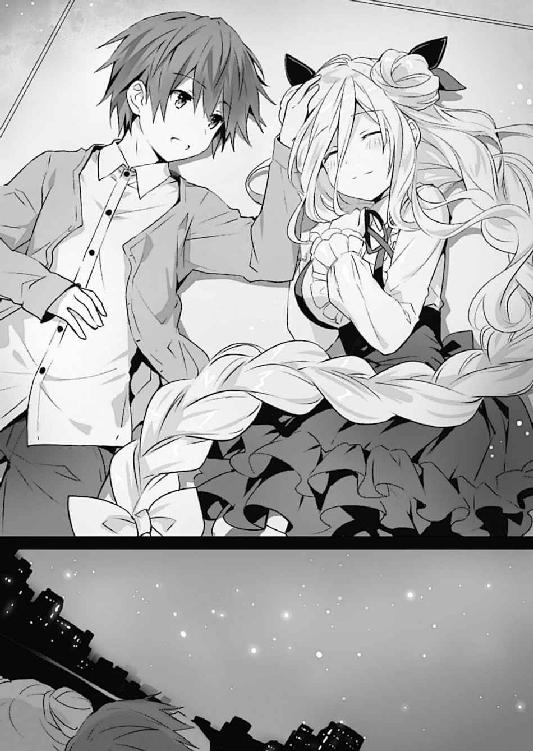
通学路はいつも通り冷え込んでいたのだが、途中から走ってきたため軽く汗ばんでいたのである。
「うむ、危ないところだ。......それもこれも、折紙が道の真ん中でシドーのコートに潜り込もうとするからだぞ」
「その件については反省している。恥ずかしくて言葉もない。穴があったら入りたい」
士道と一緒に登校してきた十香が腕組みしながら言うと、折紙が珍しく殊勝に頭を下げた。
が、次の瞬間、折紙がぐんと姿勢を低くし、士道のコートの裾に頭を突っ込んでくる。
「うひゃあっ!?」
「こ、こら！ 何も反省していないではないかっ！」
「穴があったから入ろうとしただけ。何も問題はない」
「問題だらけだっ！」
などと、十香と折紙がまた小競り合いを始める。士道は小さくため息を吐いてからその仲裁に入った。
──六喰の一件からおよそひと月。先の戦いのあともほぼ完全に修復され、天宮市にはいつも通りの日々が戻ってきていた。
一度は反転してしまった十香も、折紙の様子も、ともに安定している。
無論、基地を失った〈ラタトスク〉は未だ体制を立て直すために動いているというし、ＤＥＭが精霊たちを狙っていることにも変わりはない。
しかしこうして何気ない日常を享受できるくらいには、街は平和な顔を取り戻していた。
皆と打ち解けられるか少々不安がっていた六喰も、美九の「あぁぁぁぁぁん！ 可愛い可愛い可愛いですぅぅぅぅッ！ ちっちゃくてむちむちで今までいなかったタイプですぅぅぅぅっ！」という洗礼を受けたことにより、予想よりも早く精霊たちに馴染んでいた。というか、同情を受けていた。......被害者同士のシンパシーというのだろうか。まあ、美九に対しては警戒心を抱かせてしまったようだが。
「ほらほら、落ち着けって。そろそろ教室に入ろう。せっかく間に合ったのに遅刻になっちまうぞ？」
「むう......仕方ない。シドーに迷惑はかけられんからな」
「了解した」
士道が間に入って宥めると、十香と折紙は素直に矛を収めた。
実際、ことあるごとに小競り合いはするものの、二人は別に仲が悪いというわけではない。むしろ、心の底では互いを認め合っている節さえあった。
あの頃──十香が空間震を伴って現れ、それをＡＳＴの折紙が撃退しようとしていた頃からは考えられないような好転である。
きっと六喰も、いや──たとえどんな精霊だって、わかり合えるはずだ。十香と折紙の様子を見ていると、そんな夢見がちな、しかし確たる思いが士道の心の中に芽生えるのであった。
「む？ どうしたのだ、シドー」
「教室に入らないの？」
「え？ ああ、いや、なんでもないよ。早くしないとな」
二人に言われ、士道は誤魔化すように苦笑した。
そして手にしたマフラーをくるくると纏めながら、二年四組の教室の扉を開く。
──と。
「......へ？」
士道は、そこで不意に足を止めた。
教室の中が、何やらいつもと違う雰囲気に包まれていたのである。
何というのだろうか、皆そわそわしているというか、落ち着かない様子で、何かに注意を払っているのだ。
しかし、その原因はすぐに知れた。
士道の席に、一人の少女が腰掛けていたのである。
「な......」
士道が思わず息を詰まらせると、その少女は士道たちの存在に気づいたように、楽しげに目と口元を歪めた。
闇を塗り込めたかのような漆黒の髪。抜けるような白磁の肌。何の比喩でもなく、文字通りぞっとするほどに美しい少女である。
「おまえ、は──」
士道が震える声を発すると、少女は桜色の唇を笑みの形にし、声を発してきた。
「──うふふ。ごきげんよう、士道さん。お久しぶりですわね」
「な......！」
「士道」
十香と折紙が即座に反応を示し、士道を守るかのように前に進み出る。
しかし少女は、そんな十香と折紙を警戒するでもなく、ただ楽しげに笑うのみだった。
「あら、あら。如何なさいましたの？ そろそろホームルームが始まりますわよ？」
「ふざけるな！ 一体何のつもりだ！」
「あなたがなぜ、ここにいるの」
十香と折紙が油断なく少女を睨みながら言う。
すると少女は、手招きをするような妖しい手つきをしながら、士道を見つめてきた。
「うふふ。わたくし、今日から復学することにいたしましたの。これからまたよろしくお願いしますわね、十香さん、折紙さん、──士道さん」
穏やかな、しかし狂気の滲んだ笑みを浮かべて。
──最悪の精霊・時崎狂三は、そう言った。
あとがき
お久しぶりです橘公司です。『デート・ア・ライブ15 六喰ファミリー』をお届けいたしました。いかがでしたでしょうか。お気に召したなら幸いです。
というわけで、六喰編後半と相成りました。今回はお話もさることながら、いろいろとやりたいことを詰め込めたような気がします。具体的には折紙のＣＲユニット＋限定霊装。そして六喰のフォームチェンジ。両方とも出したかった要素なので満足です。あとは余談ですが、六喰の「これは駄目じゃ。胸がくるしい」も。
しかしながらそんな巻の表紙を飾るのは十香（反転）。
最初は六喰のフォームチェンジ後という案もあったのですが、インパクト重視ということでこの形に。しかも何やら随分とキュートというか、おまえと出会えたこれまでの全てに感謝してそうなポージングです。かわいい。
ちなみに背景のメイドカフェ、デザインの際見えなくなっているかもしれませんが、立て看板に『メイドのきまぐれスイーツ 今週はきなこかけ放題です♡』と書いてあります。......信玄餅かな？ 天宮市のきなこブームが深刻なレベルに達している。
さて今回も、この本が出るまでに様々な方のご尽力がありました。
イラストレーターのつなこさん。毎回素敵なイラストをありがとうございます。黒十香の私服も超可愛いです。担当氏、毎度苦労をおかけしております。そしてデザイナーの草野さんに、編集部、営業の方々。出版、流通、小売、この本を手にとってくれたあなた。この本に関わってくださった全ての方々に、心よりの感謝を。
次回の刊行予定は12月。『デート・ア・ライブ アンコール６』となります。
今回終章で気になるあの人が出てきてしまったので、本編16巻もできるだけ早く刊行したいと思いますわ。きひひひひ。
彼女の登場で、士道は一体どうなってしまうのか。ご期待いただければ幸いです。
では、また次の本でお会いできることを楽しみにしております。
二〇一六年八月 橘 公司
橘公司
●たちばなこうし
東京都在住。第20回ファンタジア長編小説大賞準入選作『蒼穹のカルマ』でデビュー。モンスターを捕まえるアプリが流行ってますね。精霊ＧＯとかどうでしょう。スマホを覗くと各地に精霊が出現します。選択肢を選んで攻略しましょう。好感度が一定以下になると攻撃され、辺りが焦土と化します。ちょっと六喰口説きに宇宙行ってくる。
イラスト／つなこ
カバーデザイン／草野剛
デート・ア・ライブ15
六喰ファミリー
橘 公司
平成28年9月17日 発行
(C)Koushi Tachibana, Tsunako 2016
本電子書籍は下記にもとづいて制作しました
富士見ファンタジア文庫『デート・ア・ライブ15 六喰ファミリー』
平成28年9月25日初版発行
発行者 三坂泰二
発 行 株式会社ＫＡＤＯＫＡＷＡ
〒102-8177 東京都千代田区富士見2-13-3
電話 0570-002-301（カスタマーサポート・ナビダイヤル）
受付時間 9:00～17:00（土日 祝日 年末年始を除く）
http://www.kadokawa.co.jp/